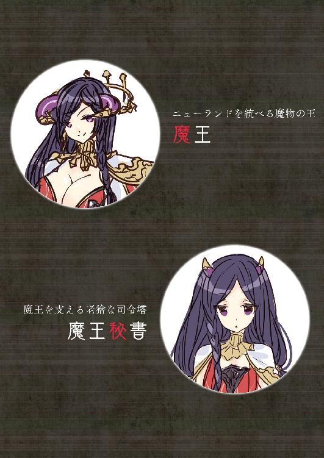

| 職業、商人(3) | |
| 黒おーじ，218 | |
職業、商人（３）
著者／黒おーじ
イラスト／２１８
オシリス文庫
本作品の全部または一部を無断で複製、転載、配信、送信したり、ホームページ上に転載することを禁止します。また、本作品の内容を無断で改変、改ざん等を行うことも禁止します。
本作品購入時にご承諾いただいた規約により、有償・無償にかかわらず本作品を第三者に譲渡することはできません。
本作品を示すサムネイルなどのイメージ画像は、再ダウンロード時に予告なく変更される場合があります。
本作品は縦書きでレイアウトされています。
また、ご覧になるリーディングシステムにより、表示の差が認められることがあります。
本書の内容はフィクションであり、登場する団体・店名・人物などの名称はすべて架空のものです。

魔王の国ニューランドは、針の山々に囲まれており、入国するためには地下に掘られたトンネルを通る必要がある。
トンネルはダンジョンになっており、強行に攻略しようと思えばまさに難攻不落。
魔王への最終障壁として、幾人もの歴代勇者たちの血を啜ってきたのである。
巨大なトンネルをくぐると、ダンジョン内は薄暗く、常に不気味な奇声が上がり、じめじめとしていた。硬い鉱石を掘って作られたものらしく、足音がカツーンカツーンとあたりに響き渡る。
「ね、ねえ。オバケとか出ないわよね？」
女戦士が、俺の右袖をつまみながらそんなワケのわからんことを言う。
「ちょっと！ へんなことを言わないでくださいよ」
肩をぶるっと震わせた聖騎士は、左袖をつまんでいた。
「あのさ、そんなに怖かったらついてこなけりゃいいじゃねえか。つーか、ついてくんなよ。仕事の邪魔だから」
「そんなこと言ったって。あなたがこんなダンジョンにひとりで入ったら、魔物に食べられちゃうじゃない。弱いんだから」
「まあ、護衛はお嫁さんである私ひとりで充分です。オバケが怖ければ、あなたは帰ったらいかがです？」
「ば、馬鹿にしないで！ べつにオバケなんて怖くな......」
そこまで言った女戦士はつとに固まった。
「どうしたんですか......きゃあ」
聖騎士までもが恐怖におののくが、なんのことはない。ただの赤オーガだ。肌が赤く、人間の倍ほどの巨漢に、頭のツノ。確かに魔物ではあるが、オバケじゃない。
「きゃー、きゃー」
「いやー、オバケ！」
しかし、ふたりとも雰囲気に呑まれて、阿呆みたいに騒ぎ立てる。強いくせにね。
「おい、落ちつけって」
「おーばーけーだーぞー」
なんだか知らんが、赤オーガも低い声でそんなことをのたまう。
「あんたもへんに乗っからなくていいから！」
「いやあ、どうもすんません。つい」
大きな頭をポリポリとかく赤オーガ。
「もう、本当頼むぜ？ はい、これ。通行証」
「あ、オッケーです。足下とか、気をつけてくださいね」
「おお、ご苦労さん」
と言って、先を行く俺を見てきょとんとする女ふたり。
「オ、オバケじゃない？」
「ああ、オバケじゃないから安心しな」
ちょっと涙目の女戦士の小さな頭をポンと撫でてやる。
「まったく、ただの赤オーガじゃないですか。それを無意味に騒ぎ立てて」
「あ、あなたも『いやー、オバケ！』とか、言ってたじゃない......って、あれ？ そういえばあの赤オーガ、なぜ素通りしていったのかしら？」
ようやく平静を取り戻した様子で、そう尋ねる女戦士。
「そりゃあ、魔物だってなんでもかんでも襲ってくるほど暇じゃあないさ。俺は商人で、単なる民間人だ。勇者パーティでも軍人でもないし、きちんと申請しているから通行証だってある。このダンジョンだってノーリスクだよ」
「そんなものですか」
聖騎士はそう疑問げに言うが、ニューランドの法に則っているのだから当然ながら襲われるはずはない。
小一時間ほど経つと、すんなりとダンジョンを抜け、西日の射す地上へと出る。
「本当に１匹も襲ってこなかったわ」
「びっくりです」
「まあ、ニューランドは魔王の力が強いから、法の支配が行き届いているって事情もある。ほかの魔都市じゃあなかなかこうはいかないぜ」
と言っても、ご両人には通じず、女戦士に至っては、蝶々を目で追っている始末であった。
それはさりとて、眼前には、ニューランドの魔都市がおどろおどろしげにそそり立っていた。
この町には、赤オーガ、青オーガ、淫獣、食人鬼、オーク、悪魔、吸血鬼、さまざまな形態の魔物が生活を営んでいる。だから、その建造物はひと目ですべてが巨大だということがわかる。そもそも、それぞれの身体のサイズが違う彼らは、大きいほうに合わせて設計するらしいのだ。
その中で、やはりひときわ大きな建造物は、町のどこからでも見上げることのできる魔王の城である。その威容は雲を突き抜け、さながら摩天楼のようだ。
「それで、どこへ行くの？」
「とりあえず、魔王の城だ。通しておきたい話があってな」
「魔王の城って......大丈夫なんですか？ それよりまず、こんなにうじゃうじゃと魔物がいて、城までたどり着けます？」
「大丈夫だって。普通にしてりゃあ食べられたりしないよ」
なーんて、余裕をこき、煙草をくわえながら歩を進める俺。
しかしその時、つとに身体がふわっと持ち上がる感覚が......。
「え、ぎゃ！ うわぁ」
と、間抜けな声を上げてしまう俺だったが、仕方ないだろう。なにせ急に身体が宙に浮いているのだから。
あわてて状況を確認すると、俺の肩には巨大な鉤爪、上方を見上げると、竜の腹が目に入る。
これは......拉致か？
「あ、待ってよー」
「先に行かないでくださーい！」
なんて呑気に叫ぶ女戦士と聖騎士。
「いや、助けてくれよ！ 怖いよー！」
と奇声を上げる俺であったが、あえなく竜に連れ去られてしまうのであった。
＊
「おい、起きんか！」
という女の勇ましい声で目を覚ます。どうやら、あまりの怖さで気を失っていたようだ。
「まったく、あいかわらず情けない男じゃ」
「おお、魔王じゃないか。こんにちは」
「うむ」
この、目の前で脚を組み、ソファにふんぞり返っている女がニューランドの魔王だ。
赤に白の幾何学模様が刺繍されたハイレグ水着のような召し物に、白のマント、帯刀、ガーターベルト、赤いパンプスという、ちょっと恥ずかしい格好をしてはいるものの、一見はその辺のねえちゃんのようにも見える。だが、２本の鋭くカーブした頭のツノが、魔族であることを主張していた。
俺は、彼女が何百年生きているかは知らないけれど、髪は黒々と艶やかで、体型の起伏は性的高揚心を喚起させ、人間でいえば二十歳に満たなく見えるほど若々しい。
「そうか。あの竜は、魔王のペットかよ。随分と乱暴なことをするなあ」
「くっくっく、魔王に拐かされて、そんな余裕ぶれる人間もお主くらいなもんじゃな。肝が据わっとるのか、据わっとらんのか、わからん奴め」
「いや、ちょうどよかったと思ってさ。俺も魔王に用事があったんだよ。ここはもう宮中？」
「ああ、客間じゃ。ゆるりとくつろぐがよい」
そう言われたから、あたりを見渡してみる。
目測では計れぬほど高い天井、大理石の床に広い空間、そのわりには窓が小さいために薄暗い。灯りは４本ほど燭台が立てられていて、蝋燭が青く光っている。
そんな、だだっ広い部屋の中心に、燃えるように赤い絨毯と鈍く光る黒革のソファ、ガラス張りのテーブルというふうに、応接セットが置かれているのだ。
いかにも、この魔王らしい趣味であるが、まあ、それはいい。
問題は、俺自身にあった。ソファの上にありながら、身動きが取れないのである。
自らを顧みると、右手を右足に、左手を左足に括りつけられており、まさに拘束された状態にあった。奇しくも、先日、俺が聖騎士にした拘束方法と同じである。
「おいおい、なんの真似だよ。竜で拉致したり、拘束したり、喧嘩売ってんの？」
「お主に逃げられんようにするための処置じゃ。この前は急にいなくなりおって」
「あれはべつに逃げたんじゃねえよ。商談が済めば次の国へ行くのが旅の商人だろうが」
「ふん。まあ、そんなことはよいのじゃ。それより、早く、出すものを出さんか」
「出すもの？」
「とぼけるな！ 予を愚弄する気か」
そう恫喝する魔王。
怖え。さすが、幾万の魔物から畏怖されているだけはある。
「う......でも、この前あれだけ出したじゃないか」
「あんなものでは足りんのじゃ！ 出せるだけ出していってもらうぞ」
「いや、俺もただの商人なわけだから、この前みたいに取られたら、さすがに枯渇するぜ」
「謙遜するでない。お主がただ者でないことは予が一番わかっておる」
そう言って、魔王は厳かに立ち上がる。
「た、頼む。どうか手心を加えて......」
「観念せい。１年以上あいてもう予は我慢ならんのじゃ。飲みつくしてやる。お主の精液を！」
魔王は、俺が身動きを取れないのをいいことに、ベルトを外し、ズボンを下ろし、パンツを剥ぎ取った。
俺の、愛しきち×ちんがにゅっと現われる。
「そんな乱暴にすんなよ！」
「案じるでない。ち×ちんは優しく扱ってしんぜよう」
そうは言うものの、魔王はあわてるように俺のち×ちんに貪りついた。傲慢さが表われているかのようなアヒル口が、パクッと吸いつくようである。
唾液があふれ、弾力のある舌があらぶり、それでいて優しく包み込むようなフェラチオ。幾何の鍛錬を積めばこのようなテクニックを習得できるのだろうか。
「じゅっ、ちゅぱっ、ふぁやく、だしぇ」
早く出せ、と言っているのだろう。
屈んだ姿勢の魔王は、肉づきのよいお尻を焦らされたように左右に振り、太ももをもじもじとさせている。頬はほのかに赤らんではいるものの、目はこちらを睨みつけ、「早くしろ」と言わんばかりだ。
結局、俺の金玉袋はそんなに長いことこの性的刺激に無感動ではいられなかったらしい。射精感が一挙に高まり、否応なしに腰が上がる。
「ぐ、いく」
俺のち×ちんは彼女の口の中で、どぴゅどぴゅと精液を発射した。
しかし、彼ら子種は、日の目を見ることはなかったのだ。魔王によって、即座に飲み込まれてしまうからである。
彼女は、んぐんぐっといったように喉を鳴らし、精液をち×ちんから直接飲んでいってしまう。いままでのしかめっ面が嘘のような満面の笑みでだ。
「んー苦い！ もう１杯！」
「うるせえよ。つーか、無理。イったばかりで連チャンとか無理」
「やはりお主の精液は絶品じゃ。力がみなぎってくるわ。一度飲むともう止められん」
再びち×ちんにその柔らかな唇をつける魔王を見ながら、俺は種無しになることを覚悟するのだった。
「ううむ、素晴らしき色じゃな」
魔王はふんぞり返り、グラスの中の白濁液を眺めて、そうつぶやいた。黒革のソファにむちむちとした太ももが沈んでいる。
嗚呼......もう何度射精させられただろうか。身動きの取れないままに下半身を露出させられた状態で、気だるさに包まれている。
俺の再三の降参にまったく耳を貸さない悪逆非道の魔王。何度かはち×ちんから直接精液を飲んでいた魔王であったが、「童っぱ飲みはお行儀が悪いかもしらん。深く味わうためにもグラスに移そう」などと言っていまに至る。
魔王は、真っ青なマニキュアを塗った指でグラスをゆるりと揺らし、俺の生命の源たる精液が、白く、濃く、粘性のある様を見て、鮮やかな琥珀色の瞳をうっとりさせていた。
次に、魔王はその彫刻のように形の整った鼻をグラスへ寄せ、優雅なる所作で精液の匂いをかぐ。
「んー、よきかな。この香り。一瞬で発情してしまうほどのかぐわしさじゃ」
そして、下唇の上に、ちょろっと出した舌をグラスにつけ、大事そうに精液をひと舐めするのだ。
「んんっ、はぁん」
と、切な気に色っぽいため息を上げる魔王。
ここまで自分の精液を美味そうに飲まれると、悪くない気分になってこないこともないが、現実問題、このままでは本当に身体がもたない。
「なあ、魔王よ。確かめたいことがあるんだが」
「ん、なんじゃ？」
彼女は上機嫌らしく、邪悪な笑みをこぼす。
「もし、俺がここで精根尽き果てることがあれば、あんたにとっても都合が悪いってことを、さ。俺には、俺の財産と仕事を継がせる跡取りも、それに準ずる信頼できる部下もいない。だから、もし俺が死んだら、すべての仕事は解散し、財産は祖国に半分、俺が雇っている労働者達に半分、それぞれ分配される運びになるよう法的手続きを取っている」
魔王は、聞いているのかいないのか。グラスを傾け、味わうように俺の精液を口に含んでいる。
「そうなると、俺がニューランドにリースしている魔鉱石の採掘機も、当然処分される運びになるが、いいのか？」
以前、ニューランドは魔鉱石が豊かであるにも関わらず、オーガやオークがスコップで掘るという原始的な採掘方法をとっていた。このような過度な生産の非効率はインフレーションの原因にもなる。そこに目をつけた俺が、魔王に魔鉱石採掘機のリースを打診し、契約が成立したという経緯があった。ちなみに、俺のほうはその対価として、魔鉱山の一部権益を借り受けるということになっているのだ。ニューランドの通貨は国際通貨としての地位を確立していなかったからである。
しかし、俺が死に、あるいは再起不能になれば、俺の事業はすべて解散されるようにしてあるから、採掘機のリースも引き上げることになる。
「安心せい。お主のことは予がよーくわかっておる」
魔王は立ち上がり、これ見よがしにグラスを掲げた。
「見よ！ 13回目にしてこの量、質。お主の精力はまったく萎えるということをせぬ」
くいっと、一気にグラスを傾け、精液を飲み干す魔王。
「くー、はぁぁ......つまり、お主の限界はまだまだだということじゃ。これで再起不能、よもや死などとは考えられぬ。しかしまあ、よくもここまでスケベに生まれてきたものよ」
「言われのない中傷はやめろよ！」
「中傷？ ははっ、片腹痛いわ！ それではつい先ほど13回目の絶頂を迎えたお主のち×ちんは、いまどうなっておる？ すでに禍々しくそそり立っておるではないか」
拘束され、強制的に剥き出されているち×ちんは、確かにうなりを上げていた。
つーか、13回目って、数えてたのかよ......。
「お主は、『手心を加えてくれ』だとか、『もう勘弁してくれ』だとか、無意味にがなり立てておったが、本当のところは予に抜いてもらうのを期待しているのだろう？ いまだ手も触れておらぬのに、『次はどんなふうに責め立てられるんだろう』と期待に胸膨らませて、ち×ちんを硬くせざるを得んのじゃ」
「違うって。これは生理現象だ」
「生理現象......とな？」
彼女は、空のグラスをテーブルに置き、問う。
「ああ。魔王、あんたのそのけしからん身体と、無意味に露出度の高い格好が、目の毒なんだよ。俺でなくても男ならば誰だって、見ているだけでち×ちんを硬くするだろうさ」
「無理があると自分で言っていて思わんか？ 普通の人間ならばそんな状態にあるのは多くとも５回が限度じゃ。まったく、お主は本当に信じられんことに、ここまで明確にスケベであるにも関わらず、自分で自分のことをスケベだと思っておらぬらしいな。ここまで自己分析の苦手な奴などそうはおらんじゃろう」
彼女はそう言うと、再びゆっくりと近づき、俺の前に屈み込む。
「さて、ではこんなのはどうじゃ？」
そして、ハイレグ水着のような召し物の上から、その大きなおっぱいの膨らみをち×ちんにこすりつけるのだった。絹のような生地越しに、おっぱいの確かな感触が伝わってくる。
「ほら、身体は正直じゃ。『出したい出したい』と、ち×ちんが跳ねておるではないか」
「う、うるせえ、そんなことねえって」
重量感たっぷりのおっぱいに深くち×ちんが沈み込み、布地の幾何学模様が変形する。
柔らかさと弾力性という矛盾を不思議にも同居させる奇跡、それがおっぱいである。そのおっぱいが、俺のち×ちんを包み、弾き、好き放題に弄んでくる。
「ほら、認めてしまえ。お主はどうしようもなくスケベで、精液を出すことを目的として生まれてきた男だということを」
な、なんて悪魔的な......いや、魔王なんだから、悪魔じゃ済まないのか。
興奮した様子で俺をなじる魔王は、ひどく艶めかしく、布地の上からでも乳首が立っているのがわかる。
そして、意識してかしないでか──いや、意識してだろうが、その左右の突起で、ち×ちんの裏筋をぴんっと突いたりするものだから、つい「俺はどうしようもないスケベ野郎です」などと答えてしまいそうになるが、事実に反することを言うのは商人としての道義にもとる。
そうやって、俺が押し黙っているのに痺れを切らせてか、彼女はマントを外し、ハイレグ水着のような召し物の肩紐を下げ、上半身のみ肌を晒した。
ふくよかな生身のおっぱいが外気に触れ、すでに勃起している桃色の乳首がぷるっと揺れる。
「お主、挟んでほしいんじゃろ？」
と、悪魔的な、いや、魔王的な笑みを浮かべた。
「はい！ ......いや、全然そんなこと思ってねえよ」
「はははっ、無理するでない」
などと言って、けしからん魔王は、けしからん生おっぱいにて、俺の純真無垢なち×ちんをむにっと挟み込む。自らの硬い芯が、魅惑的な感触にうずくまっているのがわかった。
初めは優しく、というか弄ぶように、むにむにとおっぱいを押し当てるのみだったが、唇から大量の唾液をじゅるじゅると垂らしたあと、しごくようにおっぱいを上下に揺する魔王。
唾液が潤滑油になり、おっぱいの温度、感触が、ち×ちんを挑発する。
「イきたいか？ イきたいじゃろうな。だが、駄目じゃ。きちんと『イかせてください。精液絞り取って、飲んでください』と言わなければ、イってはならぬぞ。ほれ、申してみろ」
「誰がそんな......」
「強情な奴じゃ、はむっ」
すると、彼女はおっぱいでち×ちんをしごきながらも、唇の先端で鬼頭の先を吸うものだから、もう駄目でした......。
「イかせてください！ 精液絞り取って、飲んでください！」
そんな、俺の事実上の敗北宣言とほぼ同時に、ガタンという音が響き、灯りが目を射した。客間のドアが開いて、薄暗いこの部屋に廊下の灯りが入ってきたのである。
「うわぁ無様な懇願......はっ、魔王様。し、失礼しました」
魔王の秘書だ。おそらく魔王と近い種族であるのか、小さなツノが２本ある。姿こそミニ魔王のようないでたちであるが、１００年以上魔王に仕えてきた切れ者の女秘書だ。前回の商談の際には世話になったし、あんまり彼女に軽蔑されたら嫌だなあ。
「よい、何事じゃ」
「はい、お客様が......こちらです」
秘書がそう言うと、彼女の背後から、神官服を着た目つきの鋭い銀髪の美少女が現われたのだった......。
ついに、自分の頭がいかれてしまったかと思ったが、秘書の背後から現われたのは、見紛うことなくあの神官さんであった。
「ほう、かのアンデルセン国教会の神官か。これは奇特な客じゃ。まあ、座るがよい」
と、魔王が促すのだが、神官さんは、ち×ちんをおっぱいで挟まれている俺の姿をその鋭い目でギロリと睨んで動かない。
「し、神官さん？」
どうしたのかな？ いきなり俺がいたからびっくりしちゃったんだろうか。
「なんじゃ。お主ら知り合いか？」
「失礼な。そんな両手足を縛られながらも『精液飲んでください』などと臆面もなく叫ぶ変態──いや、紳士と知り合った覚えはない」
あれ、神官さん......なんで『こんな奴と知り合いだと思われたら恥ずかしいから、他人のフリをしておこう』みたいな素振りを？
「神官さん。俺だよ！」
と、主張するのだが、彼女はそんな健気な俺を完璧に無視してスタスタと対面のソファに腰かける。
「しかし、すまんのう。せっかくお主が素直になったというのに、客人が来てしまったからには、射精はお預けじゃ」
と、魔王があまりに殺生なことをのたまうが、それを遮ったのは神官さんであった。
「私のことなら気にしなくていい。この変態──いや、御仁がこんなにも切実に『射精をしたい』という訴えをしておるのだ。彼はきっと射精をするためだけに生まれてきた男なのだろう。可哀相だからどうぞ先に『抜いて』やってくれ」
というか、そうだった......。
ひさしぶりで忘れていたけれど、この女は俺が弱みを見せるとやたらめったらいじめてきやがるんだ。
「それはすまぬことじゃ。ほら、お主。客人もこう言っておることだし、そんなにイきたければ、さっさとイッてしまえ。ほら、ほら」
などと言いつつ、再びおっぱいでムニムニとち×ちんを挟む魔王。身動きの取れない俺は彼女に抵抗する手立てがない。おっぱいの柔らかな感触が伝うと、ち×ちんは谷間の中でピクピクと浅ましく踊った。
「よ、よせよ！ 神官さんが見てるだろ」
「なんじゃ、恥ずかしいのか？」
「べ、べつにそんなんじゃねえけど......」
俺はチラリと神官さんのほうを見やった。
「私のことは気にしなくてよいと言っているだろう。貴様のように人前で『ち×ちん』をしまっておくことすらできない変態がいまさらなにを恥じらっているのだ」
ついに『変態』を言い直さなくなったな......。
くそ。神官さんの前でこんな無様にイかされてたまるか！
「ん？ ひょっとしてお主、射精を我慢しておるのか」
「ふふふ。そう安々と思いどおりにいじめられると思うなよ」
俺は強靭な精神力でもって射精感を抑制し、乳房に挟まれながらも半勃ち状態を実現したのである。
またチラリと神官さんを見ると、それまでの氷のような目が少し溶け、「ほぅ」と感心するような色を帯びていた。
どうだ。見たか。俺の男気を。
「ふん、小癪な。はむっ」
しかし、そんな俺の抵抗はかえって魔王の機嫌を損ねたらしい。
悪魔的、魔王的な瞳がギラリと光彩を放ったかと思えば、再びおっぱいの谷間からひょっこり出た亀頭を唇の先で吸い上げるあの必殺技をお見舞いしてきやがった。
「うぐっ、あっ......いぁんっ」
ヤバイ。情けない声が出てしまった。やはりこの必殺技は相当ヤバイぞ。
せっかく根性で半勃ち状態までにしたち×ちんも、その圧倒的な快楽の前では猛り狂ったように勃起せざるを得なかった。
「無様だな」
あ、また神官さんの瞳が凍りついている。なんとかしないと......と、思ったときだ。
ち×ちんをくわえていた魔王の口の中で、舌が回転するように亀頭を舐め回してきたのである。
なんだこれ。こんな技は初めてだ。滑らかで総合的な快楽がち×ちんを覆い、射精感が強制的に引き起こされてゆく。
「も、もう駄目だ......ぐ、いく」
「とっとっと」
魔王はあわててグラスをち×ちんに差し出す。と同時に、俺のち×ちんから元気にぴゅっぴゅっと精液が吐き出されていった。
グラスの中でち×ちんはビクンビクンと跳ね回り、そのたびにピタピタと透明な硝子壁に竿が当たる。この様を、神官さんも冷たい瞳で見ている。人間の尊厳という尊厳が否定されたような心持ちだ。
「うむ。これで善し、じゃ」
こうしてようやく魔王はおっぱいをしまって、神官さんの対面、つまり俺の隣に座った。
「さて、よくぞここまで来たな、神官よ......ん？ なにをしておるのじゃ？」
仕切り直し、といった魔王の一方、神官さんはなにやらポッケから小型の魔機器のようなものを取り出し、いじくっている。
ええと、これは──魔製録音機か......。
『イかせてください！ 精液絞り取って、飲んでください！ ガーガー......も、もう駄目だ......ぐ、いく』
鬼かよ。
「そこの変態──いや、男性があまりによい声で鳴くのでな。つい録音を......」
キツい目つきのまま頭をかく神官さん。
「明らかに部屋に入る前から録ってるじゃねえか」
あんまり神官さんがいじめるから、心がすっかり折れてしまった俺。それでも、あいかわらず両手足をうしろに縛られ、ち×ちんを晒されたままであった。
彼女らに慈悲というものはないのだろうか？
「して神官よ。貴国は勇者の擁立国であり、我が国とは国交を断絶しておったはずだが、なんの用で危険な敵陣に乗り込んできたのじゃ？ 殺される覚悟もあってのことじゃろうな」
俺がレイプ目よろしく放心状態であるのをよそに、神官さんへの対応を始める魔王。
「まず、あのダンジョンで死ぬかと思ったな。だが、魔王よ。貴国が我が国の国民を10人ばかり不当に拉致したのはわかっておるのだ。これは明確な主権侵害。速やかに、その10名を引き渡してもらおう」
魔王は嘲笑うように精液が注がれたグラスを揺らし応える。
「ふんっ、お決まりの人類絶対至上主義か。いいか。我が国には人間を喰わねば生命を維持できん魔物もおるのじゃ。まあ、予も人間と無闇に事を構えたいとは思っておらん。勇者から身を守るので精一杯だからな。だから我が国ニューランドは魔物の都市としては初めて法を作り、さらう人間の数を限定して畜産で増やす、という方針で秩序を保っておる。これは奴らを食わせていくため譲れんラインなのじゃ。これを人権侵害などと申す輩は、我が国の魔物には生きる権利がないとでも言いたいのかのう」
ん、なんというか、焦臭い話になってきていないか？
俺はいまだにひどい格好をしているが、頭だけは正気を取り戻し、勇敢にも魔王を睨みつける神官さんに注目する。
「貴様、なにか勘違いをしているな。私も人権だなんて雲をつかむような意味不明な言葉を用いるつもりなどない。だが、国民の権利となれば話は別だ。我が国アンデルセンの国民の権利は、我が国の主権に拠る。たとえ10人だろうがひとりだろうが、国民の権利を侵害されるのは、国家主権を侵害されることと同義だ。アンデルセン国教会の神官として、これを黙って見過ごすわけにはいかん」
あいかわらず責任感の塊だなあ。でも、これじゃ究極的には魔王と戦闘になる可能性は高いと思うのだけど。
いくら神官さんが強くても、さすがに魔王は倒せないだろうよ。
「なるほど、なるほど。つまりこれは、個人レベルに止まらぬ、国家主権の衝突であると言いたいのじゃな？」
「そういうことだ」
魔王はグラスの精液を２～３舐めると、神官さんをじっと見つめてこう言った。
「もし、貴国が勇者の擁立を取り下げるというのであれば、10人の引き渡しに応じてもよいと言ったらどうじゃ？」
「それはできない。いや、したくてもできないのだ。勇者は擁立国に関係なく、厳密にはメシア法王庁に帰属するからだ」
これは魔王とてわかっていることのはずだから、あえて神官さんに断らせるという体裁を取らせるための駆け引きだろう。
「では、予が貴国民の10人を解放するメリットはないな」
「そんなことはないぞ」
一見、いつもと変わらない神官さんの鋭い眼光。しかし、その奥の瞳がかすかに揺らいだのを俺は見逃さなかった。
「もし、貴様が我が国民10人を解放せんと言うのならば、勇者とは別に、我が国の軍隊が動く。解放したほうが身のためだということだ」
彼女はそう息を巻くが、アンデルセンの軍隊に魔王を倒す力があるとは思えない。しかし、これが脅しとして効果がないかといえば、そうでもない。
確かに、魔王はアンデルセンの軍隊を壊滅させる力を持っているが、一国の軍隊を相手に無傷というわけにはいかないだろう。そうなると、その衰弱した状態は勇者にとって絶好の攻め時になってしまうというわけだ。
さて、普通に考えれば、これで魔王はアンデルセンの10人を引き渡さざるを得ないわけだが、どうもそう単純には帰結しない様子だ。
「ううむ。頭がこんがらがってきたわ。少し考えさせてくれ......ところで神官よ、なにか飲み物はいらんか？」
「む？ ああ、まあ。いただこう」
「あ、この精液は予のだからやらんぞ」
「そんな変態の絞り汁はいらん。牛乳を所望する」
ひでえ言いぐさだ。魔王のほうが俺に対して人情があるような気さえしてくるぜ。
魔王が合図すると、秘書が牛乳を持ってきた。
「さ、さ。１杯やってくれ」
「すまんな。いや、しかし。幼少の頃から牛乳を飲んでいるのだが、ついぞ貴様のように乳がでかくならん。どういうわけだろうな」
「継続は力なり、じゃ。まだあきらめるには早いのではないか？」
「ふむ、そうかもしれん。んぐんぐ......」
一触即発といった空気の会談で、一時だけであろう和やかな雰囲気の中、牛乳をぐびぐびと飲む神官さん。
牛乳を飲んでもおっぱいは大きくならないと思うのだけど、まったく、誰が誤った知識を植えつけたのだろうか。
「して、神官よ。アンデルセンの軍隊が動くというあれ、じつは嘘だろう？」
「うむ、嘘だ」
は？ どうした、神官さん。
「ふははは、お主はやはり所詮は神官じゃな。敵陣にて出された飲食に手を出すなど、愚かもいいところじゃ。官僚や軍人ならせんかったじゃろうに。悪いが、この牛乳にオーネストという言動に嘘のつけなくなる薬を入れさせてもらったのじゃ」
なるほど、これは神官さんのミスだ。これで、彼女にとって形勢は圧倒的に不利。
言動に嘘がつけない、というのは本当らしく、いつものような仏頂面が崩れ、眉を下げ困り果てた表情の神官さん。まるで普通の女の子みたいにしおらしい。
「一応聞いておこうか。なぜ軍隊が動かんのじゃ？」
「ぎ、議会の......承認が下りんのだ」
たしかいま、アンデルセンの議会は吏党が過半数割れを起こしているから、国家主権のため血を流そうという流れにいかないことも大いにありえるだろう。
「困った。本当に嘘がつけん......」
嘘がつけないだけではなく、聞かれたことに黙っていることもできないようだ。外交において、すべてをさらけ出さねばならない状況は、圧倒的な敗北を意味する。
逆に魔王は勝ち誇ったように、魔王的な笑みをこぼした。
しかしだ。本来ならば打つ手なしといったところだったが、神官さんは開き直ったようにこう言った。
「嘘がつけないならば仕方ない。私がひとりで闘うまでだ」
「なんじゃと？」
「もし、貴様が我が国民を引き渡さんというならば、私は貴様を許さん。殺しにかかる。もちろん、私では魔王に歯が立たんことくらいわかっているが、命と引き換えに貴様の右腕くらいは引きちぎってみせる。さすれば、軍も動くやもしれんし、勇者に攻め時を与えることにもなるだろう」
これを本音で言っているのだからたいした女だ。
「お主なぜそこまで......」
圧倒的な武力を保持しているはずの魔王が、神官さんの不退転の決意に為す術がなくなってしまった。
窮鼠猫を噛む。
薬によって、彼女の言葉が嘘でないと保障されているからこそ有効となった抑止力だった。
「......わかった。10人は引き渡そう」
やむをえず魔王は降参する。
とりあえずここは神官さんの勝ちと相成ったわけだ。
「むう、悔しい......が、仕方ないか。時に神官よ。お主、もうひとつ嘘をついていたじゃろう？」
魔王は、ヤケになった様子で、グラスに残った精液を一気に飲む。
「この商人のことじゃ。本当は知り合いなのだろう？」
「そうだ」
もともと、ただ単に俺をいじめるためについていた嘘で、つく必要もないはずの嘘だったのだが、本音しか言えないいまの神官さんは、まあ、普通に知り合いと認めるほかないのである。
「どういった関係なのじゃ？ 接点があるとは思えんのじゃが」
「友達だ」
「友達じゃと？ 男と女なのにか？」
「うむ、友達だ。だが、私のほうは一般的に言うところの恋心を抱いておる。でも、もう幼くもない私はそんなことを言うだなんて恥ずかしくてたまらない。だから、友達という関係で我慢しているというわけだ」
は？ なに言ってんの。
「困った。本当に困ったぞ。こんなこと聞いてもらいたくないのに、本当のことしか言えない......」
言葉が顔を赤らめて、恥じらうように目を伏せる神官さんは、まるで可憐な少女のようである。
そんな中、外交的敗北を喫した魔王が、隣で口端を吊り上げているのが目に入った。
「そうかそうか。アンデルセン国教会の神官殿は、こんなち×ちんを剥き出しにした情けない男のことが好きなのじゃな」
負けた腹いせか、そんな意地の悪いことを言う魔王。そして、「かっかっか」と小馬鹿にするように笑うのだ。
ただ、俺がち×ちんを剥き出しにして情けない姿を取っているのは、おまえのせいだけどな。
「ば、馬鹿にするんじゃない！」
と、急にびっくりするような大声で魔王に反論する神官さん。その瞳には、想い人をコケにされた怒気が含まれている。
嗚呼、神官さん。
いつも悪口ばかり言っていじめてくるけれど、本音ではそんなふうに思っていてくれたんだね。彼女ほどの人物ならば、俺の思慮深い人間性をきっと理解しているだろうとは常々──。
「確かにこいつは、助平で情けなくて、なにかとち×ちんを露出していて、射精することばかり考えている、ち×ちんから先に生まれてきたような変態だがな。そこが素敵なんじゃないか！」
「い、いや......予はそこまでは言っておらんぞ？」
あれ、本音もあまり変わらない......。
「そう、私はそんな貴様が愛おしくてたまらない。恋しているのだ」
「いや、そんなけっちょんけっちょんに貶されたあとに言われても......」
と、甚だ始末に困る俺だったが、神官さんは彼女らしからぬ熱っぽい視線をこちらに向け、恥ずかしそうに身をよじらせている。
さて、一度整理をしてみよう。
まず、いまの彼女は言動に嘘がつけない状態にあるはずだ。
つまり、神官さんは、本気で俺のことを『助平で情けなくて、なにかとち×ちんを露出していて、射精することばかり考えている、ち×ちんから先に生まれて来たような変態』だと誤解して、その上で恋心を抱いていることになる。
そりゃあ、女の子に恋心を抱かれるってこと自体に悪い気はしない。
ただし、それが誤解に基づいた恋心なら話は別だ。
実際の俺は、そんなに助平じゃないし、男らしくて、普段ち×ちんはきちんとしまっていて、射精もたまにしかせず、母の穴からはお行儀よく頭のほうから生まれた、変態などという呼び名からは程遠いジェントルマンなのである。
つまり、神官さんは誤解によって、実際の俺ではない、幻影の俺を愛していることになるのだ。
彼女の友達である俺は、たとえ幻滅されて恋心が雲散霧消に帰しようとも、誤解を解き、本当の自分を理解してもらえるように努力すべきなのではなかろうか。
「神官さん。じつのところ、俺は神官さんが理想とするようなエロティックな男ではないんだ。だから、もし、そういう男性が好みであるのなら、俺では期待に応えることはできないだろう」
「謙遜するな。貴様以上のエロ変態はこの世におるまい」
うーん、恋は盲目というやつか。
彼女ほどの人物でも、俺がエロ変態であるなどという、空虚な思い込みを払拭できないだなんて。
「ええい、茶番はもうよい！ して、神官よ。『恋している』などと下っ歯痒い台詞を吐くくらいじゃ。お主は、予がこやつをこうやって監禁し、好き放題にしておることについては、どう思っておるのだ？」
と妖艶に笑いながら、魔王は横にいる俺のち×ちんをむんずとつかむ。
「ああ、聞かないでくれ。卑怯だぞ......う」
「う？」
「うらやましい！ 私もこいつを大聖堂の地下牢に一生涯監禁して愛でてやりたいと、常々思っていたから！」
キャッ、言っちゃった、みたいに片足をうしろに上げ、赤らめた頬に手を添える神官さん。
しぐさは生娘のようだったが、言っている内容は犯罪者だった。
「い、一生涯......重い愛じゃな」
と、魔王すらちょっと引き気味になっている。
まあ、俺からしてみれば、そんな会話をしながらも、ち×ちんをしごきにかかっている魔王も充分おかしいと思うのだけれど。
青いマニキュアが妙に色っぽいのと、彼女が俺のち×ちんの姿形を完全に掌握していることによって、みるみるうちに血が上っていくち×ちん。
「だが、見よ。お主の愛するこやつは、いま完全に予のための『精液製造機』と化しておる。どうじゃ、参ったか」
「うぬぬぬ、悔しい......」
勝ち誇って笑う魔王に、地団駄を踏む神官さん。
まあ、魔王が外交での負けの鬱憤を、別のところで晴らしているだけだろう──と、俺は楽観視していたのだが、事はこれで終わらなかった。
「しかし、予は道徳があるのでな、お主のようにこやつを一生涯監禁するつもりはない。まあ、こやつの精液をそこの瓶一杯に溜め込んだら解放してやろうと思っておる」
すると、うしろに立っていた秘書が、両腕でようやく抱え込めるといった大きな瓶を持ってきた。
このスケールの瓶一杯の精液......だと？
「じゃがのう、予が抜いてしまうと、ついその芳醇な香りと濃厚な色合いに、出るそばから飲んでしまって一向に溜まらん。そこでじゃ。神官、お主こやつの精液を絞り出してやってはくれんか？」
「おいおい、神官さんはなんと言ったって、『神官』なんだぜ？ そんなの教義的にできるわけないだろう」
「お主には聞いとらん。神官、どうじゃ？ 予もこやつをいつまでも縛りつけているのは心苦しい。ここは想い人のために一役買ってやっては？」
つーか、おまえが精液をあきらめるって選択肢はないのな。
「それとも、そういったことをするのは嫌か？」
「嫌ではない。むしろ、こいつのかわいらしい顔から爪先まで、ふやけるほど舐め回してやりたいと思っているくらいだ」
お、想いが重たいよ......。
「では」
「いや、でも......」
戸惑うように目を逸らせる神官さん。
ほら、やっぱりメシア教の神職にある人間がそんなことできるわけないって。
「ん？ やはり、恋心よりも教義が大切か？」
「いや、そうではなくてな。私は育ちがよくて、人間ができていて、とっても美少女だが──どうやら無愛想らしい。それに乳もあまり大きくないし、色気もないから、こんな私なんかに助平なことをされても嬉しくなんかないんじゃないかと思うのだ」
なんだか、自信たっぷりなんだか、自虐的なのかさっぱりわけがわからないが、気を落ちするように言う神官さん。
それを聞いた魔王はソファから立ち上がると、件の魔王的な笑みを携え、神官さんのほうへ寄っていった。
「そんなことはない。きっと、こやつはお主のことも助平な目で見ているに決まっているのじゃ」
「そ、そうだろうか」
「そうだとも。ではまず、その物々しい神官服を脱いでみたらどうじゃ？」
「しかし......」
「大丈夫、大丈夫じゃ」
なにが大丈夫なのかさっぱりわからないが、魔王はすでに神官さんの神官服に手をかけていた。それにつられて万歳の姿勢を取る神官さん。
スルスルと脱げていく神官服......。
少々銀髪を乱し、下着姿となった彼女は、恥じらいの伏せ目も手伝って、神秘的な色気を携えている。いつもの威厳ある神官服とは対照的な、カップつきの白いインナーにひらひらと包まれた肢体は、起伏はあまりないけれど細身でスレンダーな身体つきをしていた。
神官服を着ていなくて、目つきも鋭くないものだから、まるで神官さんじゃないみたいだ。
「ほら神官、見たか？ お主の下着姿を見ただけで、ち×ちんが跳ねおったわ。友達などと気取っておっても、やはりイヤらしい目で見ておったのじゃろう」
「ばっ、そんなわけ......」
と、俺が否定を叫ぶと、一瞬だけ雲の隙間から射す光のようにパァッと晴れた神官さんの笑顔が、すぐさま曇り、眉を下げてしまう。
「い、いや......その。うん、ちょっとだけイヤらしい目で見てたかもしれないなっ」
「本当か？」
こちらを不安げに覗き込むように見る神官さん。
「あ、ああ......」
それにしても、言動に嘘がつけないとなると、彼女がいかに感情の起伏の激しい人間かがよくわかる。表情にも嘘がつけないからなのだろうが、これはまったくもって普段以上に扱いづらい。
「さあ、まず口など吸うてみたらどうじゃ？」
そう魔王が、神官さんに提案するのだが、露わになった細く白い太ももをモジモジとして、自信がなさそうにする神官さん。
「心配するな。こやつもお主に口を吸ってもらえたら、嬉しいはずじゃ。のう？」
魔王は、俺へ目をやる。
「べつにそんなことな......う、嬉しいよ」
また、神官さんは目に涙を溜めてしょげそうになるから、なんだか否定的なことが言えなくなってしまう。
つーか、『とっても美少女』と自画自賛できる人間が、どういう思考経路をたどればそんなに自信なさげになってしまうんだ？
さて、そのあと、魔王が神官さんの幅の狭い肩へ手にかけ、はだけたワイシャツ１枚の俺の前へと誘う。
「なあ、神官。この男とは思えんかわいらしい顔、色っぽい唇。吸ってみたいと思っていたのじゃろう？」
またこの魔王は......この男気に満ちあふれた顔をつかまえて、なにを言ってんだか。
「思っていた！ この女の子のようにかわいらしい唇を吸ってみたいと。しかし......」
「大丈夫じゃて。な？」
魔王に促され、ゆっくりだが唇を寄せる神官さん。長くカールした睫毛がゆっくりと閉じられていく。
それにしても、魔王はなぜこんなにも神官さんをあと押しするのだろう。単純に精液を溜めるためだけの事由からなのだろうか。
一瞬そんなことが頭をよぎるが、神官さんの細く長い指が、俺の胸にそっと添えられ、石鹸の香りがかぐわうほどに距離が縮まると、さすがに心中穏やかではいられなくなる。
そして、震える彼女の唇と、身動きの取れない俺の唇がふんわりと触れたのであった。
小さな唇が慎ましやかに触れた途端、すぐさま顔を離してしまう神官さん。蒸気が出んばかりに頬を真っ赤にして、うつむきながらも、涙を溜め込んだ瞳をこちらに向ける。
つーか、こんな思春期前半の少年少女がするようなライトなチューでそこまで動揺されると、かえってこちらまで恥ずかしくなってくる。もっと性的でディープなチューを躊躇なくしてくれたほうがどれほど精神的に楽か。
そして、神官さんは、『嫌じゃなぁい？』と尋ねるように首を傾げる。
正直、嫌だよ。
こっ恥ずかしいったらありゃしないので、俺だって顔が熱くなってきたし、それを見て魔王がほくそ笑んでいやがるからな。
だけど、『嫌だからやめろ』などと言えば、この神官さんは泣き出してしまいそうだから、俺は精一杯に作り笑いをした。普通に泣きそうな奴に泣かれるのはなんとも思わないが、普段泣きそうもない奴に泣かれるのは非常に堪えるからである。
「そうか、嫌ではないのだな」
と、表情を緩めた彼女は、あまり長くはなさそうな舌をぷるぷると精一杯伸ばし、俺の頬骨をペロッと舐めた。
「どこ舐めてんの？」
「いや、つまり片っ端から舐めてかかろうと思ってな」
ああ、さっきそんなようなことを言っていたな。
いままであまり舐められたことのないところを舐められるというのは、少しへんな気分がする。平均的な女の子と比べても舌や唇が小さな神官さんは、チロチロといった具合で俺の顔を舐めていく。それは、あまりエッチな感じはしなかったけれど、小動物のような愛らしさを感じさせ、少しくすぐったっくもある。
なにしろいっぺんにちょっとしか舐められないものだから、甚だ時間がかかるのだが、彼女は本当に俺のおでこやら瞼やら耳やら顎やらを余すことなく、その体温を感じさせる柔らかい舌と唇をつけていった。
顔を舐め終えると、首筋に移る神官さん。首筋は、男にとっても重大な性感帯のひとつであり、さすがに「くっ、う......」と、呻き声を上げてしまう俺。
それを聞いた神官さんはすごく嬉しそうな笑顔でチラッとこちらを見ると、すぐさま肩口へ舌をやった。
くそ、なんか悔しいな......一生懸命な女の子を見ていると、どうしても『全然効いていない振り』をしてしまいたくなる俺は、拘束された手足に思いっきり力を入れて喘ぐのを耐える。
肩を這う小さな舌に唾液がツツツと滑り、ゾクゾクと身体を走るが我慢──我慢である。
「ひゃははは、く、くすぐったいよ神官さん」
「す、すまん」
そんな俺の意思は、彼女の舌が脇に到達した時点で折れた。一度くすぐったさを感じてしまうともう力を入れられなくなって、内腕、腰、腹、胸と舐められると身をよじり、息を荒らげてしまう。
「ほう......なかなかやるな神官。見るがよい。こやつ、とても喜んでおるぞ」
「そ、そうか？」
「ああ、こんなに喜ぶのじゃから、こやつもお主のことを好いておったのやもしれん」
「で、出鱈目を言うんじゃ......」
と、魔王のほうを睨みつけた時だ。
彼女のうしろに控えていた秘書が、魔動カメラを構えているのが目に入ったのである。
ああ、なるほど......そうか。
魔王は神官さんの性的な現場を押さえて、それをアンデルセンの国教会──いや、新聞社かなんかにすっぱ抜く気なんだ。そうなればいかに神官さんであろうと、失脚してしまうであろうから。
これは、今回のことで彼女に驚異を覚えた魔王の策略に違いなかった。超変則ハニートラップといえるかもしれない。
「神官さん！ 撮られてるよ」
俺がそう叫ぶと、神官さんもハッとした様子で、魔王のほうを振り返る。
「案ずるな。顔にはモザイクを入れるつもりじゃ」
「だそうだ」
そう言って再び俺の胸に顔を寄せる神官さん。
「いやいや！ そんなの信じ......うー、あー、あー？」
あまりに愚直な神官さんに、突っ込みを入れようとしたのだが、つとに言葉が出なくなってしまう。
顔を上げると、魔王が、ニヤリと邪悪感たっぷりな笑みを携えつつ、右人差し指を俺へ向けているのが見えた。
どうやら魔法で言葉を封じられてしまったようだ。
「それにしても、丹念に舐めるのう」
「もちろんだ。私は一般的に言うところの『尽くす女』だからな」
「なるほど。じゃが神官よ。あまり焦らすのもこやつが可哀想じゃ。そろそろ弱点を突いてやったらどうじゃろうか」
「むう、それもそうだな」
「むーんーんー」
「ん？ なにか言いたげなようだが......」
「きっと早くここを吸ってほしいのじゃ。ほら」
神官さんは魔王に促されると、俺の最大の弱点、左乳首にぴとっと口をつけた。
彼女の細やかな息遣いがそれを撫でた段階ですでに気が遠のいていたのだが、ちろちろと一定のリズムで神官さんの潤った舌が乳首を弾き出すと、もう完全に駄目だ。
乳首──特に左乳首による性感は、まず電気的なものが突起の先に走り、飛んで、喉の奥から込み上げるなにかが声になり、頭が白くなるような感覚が思考を停止させる。
「ぐ、こやつ、予が吸ってやった時よりもよい声で鳴きおる。気にくわんな」
と、本当にちょっと機嫌悪そうにする魔王。
確かに、魔王より神官さんにしてもらったほうが気持ちいい。魔王のほうが妖艶で激しい愛撫であったはずなのに、なぜだろうか。
いや、そんなことを考えている場合ではない。神官さんに責めをやめるように言わないと。
しかし、言葉にならない。
なにか言おうとすればするほど、ただ、自分でも恥ずかしくなるような甘い喘ぎ声が上がるのみである。
「こんなに嬉しそうにち×ちんを跳ね上げおってけしからん奴じゃ。そろそろち×ちんをくわえてやれば、射精しおるのではないか？」
そんなことを魔王が言うので、神官さんは喜び勇んで屈み、ち×ちんをその整った顔の前に構える。
「本当だな。嬉しそうでなによりだ」
そう言う神官さんこそ嬉しそうである。
「私はな、以前、貴様に愛の告白をしたにも関わらず無残にも置いてけぼりをくらってから、自分は女として見てもらえんものだと思っていたのだ。だから、こんなにち×ちんが喜んでくれて、とても嬉しい」
俺は、神官さんに以前告白されたことも、ましてや置いてけぼりにしたこともないと思うのだけれど......でもいま、彼女は嘘がつけないはずなんだが──。
というようなことを考えていると、神官さんの唇が、俺の亀頭の先をぷるんと包む。形のいい唇からちゅくちゅくと唾液が漏れ、気分がふわふわである。
しかし、そこからが進まない。
「は、入らない......」
と、泣きそうになりながらつぶやく神官さん。
どうやら、口が小さくて、ち×ちんをそれ以上くわえ込むことができないようだ。
「大丈夫じゃ。吸うのは先っぽだけでも、手も使えば充分射精に達するものだ」
魔王のアドバイスで、神官さんはこれまた子ぎつねのように小さな手をち×ちんに添えた。
そんなことをするのは初めてだろうに、彼女の愛撫は丹念で、丁寧だ。裏の筋にちろりと舌を這わせながら、ゆっくりとち×ちんをしごきだす。過度にぎこちないわけでもなく、それどころかかなり気持ちいい。
神官さんが失脚してしまうのは俺も困るので、こんなはしたない様子を撮られてしまって大丈夫なのかと心配なところではあるが、それに反して射精欲は高まり、くぐもった感覚がたまたまの奥を支配する。
そして、シュッシュッとち×ちんをしごかれながら、れろれろと先っちょを舐められると、鬱屈としたものがち×ちんから込み上がってきたのだった。
「神官、どくのじゃ」
魔王は神官さんをどけると、ぴゅっぴゅと飛び跳ねる俺の精液を余すことなく瓶に納めた。
大きな瓶だから、白濁液が下のほうに少しだけ水溜まりのようにあるのみだ。
「これを一杯にすればよいのだな？」
「ああ、神官。お主ならばきっとできるじゃろう」
俺が絶望感に打ちひしがれたのは言うまでもない。
しかし、その時である。
またまたドアの開く金属音がして、ふたりの女が部屋に入ってきたのだ。
ほかの誰でもない、女戦士と聖騎士であった。
俺は女戦士と聖騎士を見て、感涙々と極まった。
あんなのんびりとした様子だったけれど、結局助けにきてくれたんだ、と。
しかし、その感激は束の間、俺は生死の境をさまようことになるのだった。
「魔王！ 覚悟」
「主人を返してください！」
勇ましく見栄を切るふたり。
「......ってあれ？」
「え、どうしたんですか？」
神官さんを見てその勢いが止まる女戦士。
「あなた、アンデルセンの神官......はっ、そうか。あなたの正体は魔王だったのね！」
そんなわけねえだろ。
当の神官さんはというと、そんな女戦士の世迷い言は完全に無視しながらも、魔王のほうを向いた。
「どうやら私はもう必要ないようだ。帰らせてもらおう」
射精の時にあんなにも晴れ晴れとしていた彼女の表情は、なぜか曇り模様を見せている。
「なぜじゃ。そんなことを言わずにもっと遊ぼう？」
魔王は、神官さんのことが気に入ってしまったのか、そんなふうに引き止めにかかる。
「いいや、私なんぞより、そこの女戦士のほうが色っぽいし、きっちりと抜いてやれるだろう。こいつも、そのほうが喜ぶに決まっている」
「そんなことはないぞ。お主とて、お主にしかない色っぽさがあるではないか。自信を持つのじゃ。こやつも、お主に抜いてもらえて、あんなにも喜んで射精をしておったではないか」
「そいつはこう見えて、気ぃ遣いなところがあってな。私に気を遣って、無理やり射精したのだろう」
そんなビックリ人間なことできねえよ。
「それにいまのように薬で嘘がつけないというのはキツい。これ以上聞いてもらいたくないことを、晒したくないのだ」
「あ......ま、待つのじゃ。神官」
神官さんは、神官服を抱えて部屋から駆け出していった。
魔王はそれを追いかけようとするのだが、扉の前の女戦士と聖騎士を見て、ふと立ち止まる。
「ふ、ははは。予がニューランドの魔王じゃ」
攻めてきた相手には魔王らしく振る舞わなければならないという義務でもあるのだろうか。妙に演技がかっている。
「く、騙されましたね」
「真の魔王が別にいたとは......」
青龍刀とサーベルを揃って構える彼女たちは一騎当千の様相を呈しているが、なぜだか滑稽に見える。
「本来ならば叩きのめしてやるところじゃが、いまは先を急いでおる。命拾いしたな」
「ま、待ってください！ 主人の拘束を解いていってくださいよ」
駆け出そうとする魔王だったが、聖騎士の言に再び立ち止まる。
「ふうむ、そうじゃな。そこに大きな瓶があるのがわかるか？」
「えーと、あれかしら？」
瓶を指差す女戦士。
「そうじゃ。あの瓶に、あやつの精液をなみなみ溜めることができたら、拘束を解いてやろう。言葉も魔法で奪ってあるが、できたらそれも戻してやるから、せいぜい頑張るのじゃな。ははは」
そう言い残して、神官さんを追いかけていった魔王であった。
その後ふたりは、魔王を追いかけることもなく、客間に入り、あられもない姿の俺を見下ろす。
「すごい格好ですね。ち×ちんを剥き出しにして......」
先日、自分も同じような格好をさせられていたはずの聖騎士が眉を潜めて言った。
「こういう人なのよ。きっとこんな格好をさせられて、嬉しいに決まっているんだわ」
この女戦士の理不尽な言に対してだけは、大いに否定したかったのだが、言葉が発せずもどかしさで頭に血が上る。
「まあ、このままじゃあなたの赤ちゃんを作れないし、仕方ないわね」
「あなた、きっと助けてあげますからね。こういったことはお嫁さんの役目でしょう」
ふたりはそんな事を言いつつ、俺のち×ちんに忍び寄るのだった。
＊
精液の出しすぎで気を失う──という経験はあるだろうか？
俺はいままさにそんな情けない気の失い方をしていたようだ。
目を覚ますと、まず薄暗い部屋に蝋燭が目に入り、次に身動きの取れないことに驚く。
そんな中、女戦士と聖騎士および秘書が、ソファの上で俺の周りを取り囲んでいた。３つの影がおどろおどろしげに揺れているのが、いまの自分の状況を思い出させるのであった。
「さすがに量が減ってきたわね」
装甲を外した裸の女戦士は、腰を突き出して、瓶の上に膣をかざしている。すると女の子の大事な部分からトロリと俺の精液を垂らし、ぽちょんぽちょんと、瓶に溜めていくのだった。
「でもいいんですかね。一度中に入ったもので......」
と、聖騎士。彼女も、切り揃えられた金髪の清楚な様に反して、半裸であった。キャミソールタイプの白のインナー１枚で、パンティは着けておらず、薄い陰毛の下のクリトリスが皮を被ってもたげているのがわかる。
「いいのよ。これくらい気にすることないわ」
魔法によって、言葉を発することができないから、彼女らの責めで気を失うくらい衰弱していることを、伝えることができない......。
女戦士は、精液を膣から出しきったあと、すぐさま身動きの取れない俺に跨ろうとする。
「あ、待ってください！ 次は私の番ですよ」
「く......目ざといわね。まあ、仕方ないわ」
女戦士はそう言ってソファから下り、ペンを取り出して俺の太ももの前面に正の字を足した。
『正正正正正正正正』
と、回数を印していっているのである。
「これで何回なんだっけ？」
「まったく......計算もできないんですか？ あなたって本当に筋肉馬鹿なんですね」
「うるさいわね。あなたはわかるっていうの？」
「もちろんです。正の字が８つなんですから、５×８＝13回です」
俺はこの時初めて、賢そうに見える聖騎士も学がないことを知った。
「なーんだ。まだまだ大丈夫そうね」
「でも彼、だいぶやつれた様子ですよ？ ちょっと心配ですね」
聖騎士はそう言いながらも、身動きの取れない俺の上に跨ろうとする。
ただ、その向きは、俺に正対していない。うしろ向きで、正座のような姿勢をしている俺の上にちょこんと乗っかり、ち×ちんを女の子の大事な部分にこすりつけるのだ。前から見ると、あたかも聖騎士の股間からち×ちんが生えてきたように見えるであろう。
「んん、硬い......」
と言いながら、そのびらびらと、特にクリトリスにち×ちんを当ててしごく聖騎士。
「でも、この瓶、大きいわよねえ。こんなの一杯に溜まるのかしら」
「んふぅ。やるしかないですよ。く......彼を魔王の毒牙から救えるのは私たちしかいないんですから。あんっ」
「そうね。頑張りましょう」
と、使命感に燃える、といった様子のふたりであったが、すでに力尽きて死にそうな俺。
魔王は、まだ俺の限界というものを見極めているふうであったぶんマシだったくらいだ。女戦士や聖騎士は加減というものを知らないから、もう何度気を失ったことか。
さて、目の前の聖騎士の背中は、艶めかしく右左とくねっていた。
女性の女性らしさは前面よりもむしろ背面にある──というのは、俺の師匠でもある父親の台詞であるが、聖騎士の背を見ているとそれがまざまざと実感される。
健康的だが華奢で繊細な肩。そこから滑らかでしなやかな曲線を描く背のライン。中央が、揃って凹んでいる背骨の均一性。くびれた腰に、インナーの下から突き出るお尻。
むっちりとした女戦士よりはスレンダーな印象の彼女だが、均整の取れた背に、振り返りつつも頬を染める様が、俺の海綿体によからぬ血を上らせ始める。
「あ、そろそろイクみたいです。瓶を用意してください」
聖騎士がそう言うと、女戦士が瓶を持って屈む。
聖騎士の大事な部分からあふれる愛液と、びらびらの温かさをち×ちんに感じながら、俺は41回目の射精をした。
そして、前から見ると聖騎士が射精しているように見えるだろうなと、どうでもいいことを考えながら、俺は再び気を失ってしまうのだった。
＊
次に目を覚ますと、客間にはいまだち×ちんを剥き出しにされたまま放っておかれた俺と、秘書が残るのみであった。
「大丈夫ですか？」
と、秘書が俺に声をかける。
だが、言葉を出せない俺はただうなり声を上げることしかできなかった。
「あ、すみません。しゃべれないですよね？」
秘書はそう言うと、俺に向けて右手の指をくるくると回す。
「これで一時話せるはずです」
「......あのふたりは？」
「ごはんを食べにいきましたよ」
本当に、ひでぇ扱いだな......。
この秘書は頭から小さな角がぴょこっと出ており、慎ましやかな胸の膨らみと華奢な股腰を、紺のワンピース水着のような召し物で包んでいる。俺の祖国では水練の時に『スクール水着』というものを身に着けるが、ちょうどそのような格好だ。
彼女は、見た目こそ小動物のような愛らしい風体ではあるが、事実上、魔王のブレーンである。事務方のトップと言っていい。物事を慎重に考えながらも頭の切れる奴なのだ。
「あ、あのなぁ......あいつら馬鹿なんだから、あんただけが頼りだったんだよ。助けてくれたっていいじゃねえか」
「彼女たち、とても強そうですから喧嘩になったら嫌じゃないですか」
ただ、このとおり淡白な女である。
「ええと、水とか、食べ物とか、いります？ あと回復魔法も」
「そ、それらは欲しいけれど......これを逃したら、次いつできるかわからないから、仕事の話をしよう」
俺がそう言うと、秘書はくりくりな目を見開いて驚愕する。
「そんな状態で仕事ですか？ ち×ちんから血が出てますよ？」
「あのさ、俺は魔王に精液を献上せんがためにニューランドくんだりまでやってきたわけじゃないんだぜ。とにかくできるうちに商談をしておかないと」
秘書は仕方ないといった様子で首肯した。
内容はそうたいしたことじゃあない。現在借りている魔鉱石の採掘権の一部を行使して、ベヌッサに輸送することの申告。また、そのために大型船の着航許可と、水夫や鉱山で働かせる予定の労働者のための施設を建てる許可を取った。
首の据わらぬといった秘書のうなずきとともに、それらは順調にいっていたように見えたが、つとに彼女は「うーん」とうなる。
「一応お聞きしたいのですが......」
「なんだ」
「ベヌッサに運んだあとの魔鉱石はどの国へ行くのですか？」
「奇っ怪なことを聞くなあ。ベヌッサへ輸送するのだから、ベヌッサの市場のみぞ知るというやつさ」
「それならばよいのですが、ベヌッサという特殊な国柄の利を活かして、我が国と敵対している国へ魔鉱石を売ろうというのではないかと、どうしても邪推してしまうのです」
秘書は舌っ足らずの口調でそんな鋭いことを言う。
「そ、そんなわけないだろ」
図星であったが、『そのとおり』と認めるわけにもいかない。
「ですよね、すみません。しかしですね、そういう疑いがかかってしまうこと自体がそもそも問題──というのはわかります？」
「一応......」
「やはりここは採掘機のリースをもう少し増やしてくださると、よりよいお返事ができると思うのですが」
俺はこれを呑まざるを得なかった。さすがに彼女はやり手で、完全に差し込まれた形である。
「以上でよいですか？」
「いや、もうひとつだけ。さっきあんたが撮っていた神官さんの動画のことなんだがな。魔王はやっぱり、あれをアンデルセンの新聞社かなにかにすっぱ抜くつもりなのか？」
「あの魔王様のご様子ですと、それはなさらないでしょう。あの神官のことをだいぶ気に入ってしまわれたようですし」
「だよな」
ホッとひと息つく。
「しかし、私がすっぱ抜きますよ」
「はあ？」
「魔王様は少し甘すぎるんです。まあ、そこが素晴らしいところでもあるんですが......しかし、そうやって情に流されて、拳を緩めてしまっては国を誤ります。そこをフォローするのは、私の役目ですから」
まずいな。魔王を説得するよりも、秘書を説得するほうが何倍も厄介だぞ。
「あなたもあなたですよ」
「お、俺？」
「はい。どうやらあなたは、あんな可憐な女の子に告白されながら、置いてけぼりをくわしたらしいじゃないですか。そういうことをするから、魔王様の心を打つような健気さが本音で出てしまうんですよ」
「そんなことしてねえって。神官さんが言ってたのはたぶん勘違いだよ」
「へえ。でもそれ、あなたのほうが勘違いしてたっていう可能性はないんですか？ あるいは、あなたが忘れてしまっているだけとか。あなたという人は仕事が絡まないと薄情な人ですからねえ」
いやいや、俺はそこまで馬鹿じゃない──と思うけどなあ。
「疑問なのは、そんな薄情なあなたが、なぜあの神官の進退を気にかけるか、です」
さすがに鋭い。
胸中は、神官さんが失脚してアンデルセンの国勢が不安定になるのを恐れての所以だった。しかし、もともと俺がそれを気にかけるのは、アンデルセンが魔鉱石の得意先となっていくからなので、この秘書に腹の内を晒すのはまずいのである。
「そ、そりゃあ、神官さんは友達だから」
それを受けてクスリと笑う秘書。
「まあいいですよ。我が国に採掘機が必要なのは確かですから、大目に見ます。清濁合わせ呑む、というのも時には必要でしょう」
そんな風貌に甚だ似合わぬ老獪さを見せる秘書。
それと同時に、部屋の外が賑やかになるのが聞こえてくる。
「おや、彼女たち、食事を終えたようですね。では再びあなたには黙っていてもらいますよ」
「ま、待て。せめて水を......あー、うー」
秘書が右指を俺に向けると、また言葉を発せなくなってしまう。
「しかし世の男性は羨むでしょうね。あの神官だけではなく、あんな美女ふたりからも好意を寄せられていて。私にはさっぱり理解できませんよ。わざわざこんな冷たい男を好きになることなんてないのに。ただ......」
と、秘書は区切って顔を赤らめた。
「......あなたの精液は、本当に美味しいですよ」
３週間後、俺は予約していたニューランド市街のホテルにて、床に伏していた。魔王は、本当にあの瓶一杯に精液を満たすまで解放してくれなかったから、俺は文字どおり精根尽き果てて寝込んでいるのである。
「ちょ、おまえ......なんでそんなミイラみたいなんだ？」
ベッドの横で驚愕しているのは、元奴隷商の銀縁眼鏡である。
「それはちょっと、お仕事で......ね？」
「え、ええ。お仕事です」
と、黙っている俺に代わって女戦士と聖騎士が顔を合わせながら応えた。
「仕事か......過酷な商談だったんだろうな。くそ、悔しいが、やはり商人としてはおまえが１枚も２枚も上手らしい。僕にはここまでの危険を犯して仕事をする覚悟はないからな」
神妙な顔でゴクリと生唾を飲み込んでいる彼には悪いけれど、ミイラなのは商談のせいではなく、ただ単に精液の出しすぎからである。
「この様子だと出直してきたほうがいいかな」
そう言って立ち去ろうとする銀縁。
制止せねば。
「ま......て」
思うように声が出ない。
「ん？ なんだ？」
と、耳を寄せてくれたので、なんとか会話ができそうだ。
「ふ、船は無事着航したか？」
「ああ、奴隷も積んである。言われたとおりの生活水準に保っているから、体力も維持されているさ」
それは結構なことだ。
「じゃあ......し、仕事の割り振りを......」
そう言って起き上がろうとする俺だが、みんながあわててそれを遮ろうとする。
「駄目よ。まだ無理をしては！」
なあんて声を上げる女戦士だが、そんなことを言う彼女自身がミイラ化の一因であったことなど忘却の彼方なのだろうね。
「邪魔しないでくれ。うーん、そうだな......愛しているからさ。どいておくれよ」
もう本当に余裕がなかったので言葉を選んでいられなかったのだ。
「なにそれ、そんな取ってつけたような台詞じゃあ、どかないわよ」
とか言いながら、頬に手を当て、お尻をふりふりしているから、もう邪魔はしないだろう。
聖騎士が「私は？」といったように首を傾げてこちらを見つめてきているが、カドが立ちそうだったから、気づかないふりをした。あとで尻でも撫でてやろう。
ダンジョンを抜け、ニューランドの市街から少々行くと港がある。そこには、見覚えのある銀縁の大型船が２隻着いていた。
俺は、よろよろとした足取りながらも、船着き場に群をなしている元奴隷たちのもとへ近寄っていった。
「あ、親分だ」
「親分！ どうしたんだい」
彼らはなぜか、俺のことを親分と呼び、慕ってくる。
「親分が俺たちの主になってから、随分待遇がよくなったよ」
「本当よ。女はお風呂に毎日入れるっていうのは、とても嬉しいわ」
なるほど、銀縁は俺の指示どおりの待遇できちんとこなしたようだ。こういう連中は、食う、寝る、着る、の善し悪しのみで、主の善し悪しまで判断するからな。単純なもんだ。
「あのな、俺はべつに聖人君子じゃねえんだ。おまえたちの待遇を考えているのは、きっちり体力をつけて働いてもらうためなんだぜ」
俺の声は、ヘロヘロだったから蚊の泣くようにかすれていたけれど、一同耳を傾けていた。
「大丈夫。俺ら、一生懸命働くぜ」
「そうさ、親分のためならなんのその！」
調子のいい奴らである。まあ、実際本当にきちんと働くかどうかは、これからの指導次第だろう。
「さらに言えば、ただなんとなく働くだけでは駄目だ。これからおまえらは共同して生活をしていかなきゃならん。男は、港や炭鉱で力仕事、女は飯を作り、洗濯をする。互いを思いやって、病気の者や困っている者がいれば、助け合うんだ。きちんとやってりゃあ給料はケチらないから、できれば子供を作って家族なんか作ればなおよい」
「子供......そりゃ作れたらそれに越したことはないですけど、なぜですか？」
ひとりが不思議そうに尋ねる。
「簡単だ。そのほうが効率がいいからさ」
大勢はいまだ疑問符を浮かべている。
「つまり、家族を作って責任を持って暮らしを営んでいくって労働力が、もっとも質が高いってことさ。もし、おまえたちを個人個人で使い捨てのように使ったら、また新人を仕入れて一から指導し直さなくちゃならん。それよりは、生き物らしく家族を作ってきちんと根を張り、共同の中で働いてもらったほうが、安定的で結局は安上がりなんだよ」
「そうか、さすが親分」
「すげーぜ親分」
「親分、素敵よ」
うーむ、こいつらわかってねえな。
ある意味、従業員として家族を作って生活を営むのは、奴隷のままでいるよりも苦しいことなのだ。そのまま奴隷然としてたならば、死ぬまで言われたとおりに働きさえすればいい。だけど、他人と共同し、あまつさえ家族など作ろうものならば、守るべき大切なものとやらができてくる。すると、個人ではなく共同が主体になっていくもので、強制されずとも懸命に働かなければならなくなるのだ。
強制されて働くのと、強制されずに働くのでは、じつは後者のほうが苦しいはずだから、互いに尊重し合って暮らしを立てるというのは、じつはとても苦しいことなのである。
さて、ヨロヨロで威厳がないなりに、彼らに当面の指示を出したあと、俺は銀縁にこう尋ねた。
「おまえの部下で法律に明るい者はいるか？」
銀縁は、怪訝な顔をする。
「一応、お抱え弁護士がいるけれど、法律だったらおまえもそこそこ詳しいじゃないか」
「ちょっとわからないことがあるんだよ。紹介してくれ」
しぶしぶ、といった様子だったが、銀縁は船中に俺と女戦士と聖騎士を案内してくれた。
船の一室の前に立った銀縁は、ノックをして声を上げる。
「先生！ いま、ちょっといいですか？」
中から「どうぞ」という声が返り、ドアが開かれる。
「なにかしら？」
弁護士は、グラマーな姉ちゃんだった。紺のタイトスカートに白いブラウスという姿が、ふくよかなお尻と、細いウエストのくびれを強調している。
が、精液を根まで吸い取られ、ほぼミイラ化している俺にとっては全然気にならないことである。
「彼が先生に法律相談があると」
「結構ですわよ。相談料30分50ボンドですけれど」
金取んのかよ......。
「じゃあ30分で。ええと、アンデルセンの憲法か行政法にあたると思うんだけど」
「アンデルセンの憲法は非成文憲法ですから、ちょっと難しいですね」
と、脚を組み替える女弁護士。
タイトスカートの布地の上から、薄く大腿四頭筋の曲線が垣間見え、ツルツルだけど尖った膝と太もものむっちりした様が、女の女らしさを強調しているが、精液が枯渇している俺にとってはなんの効き目もない。
「答えられる範囲でいい。検閲についてなんだけど、アンデルセンの検閲ってどこの機関が指令してんのかわかる？」
「アンデルセンの章典に、『検閲はこれをしてはならない』というものがあるので、これは憲法としてとらえられていると思いますが」
「政府検閲、してないの？」
まずいな。魔王の秘書が新聞社にすっぱ抜くと言っていた、神官さんの画像を検閲して除外させるべきだと進言しようと思ったのだけれど。
「一応は、していない──ということになってます」
そう言いながら、伸びをする女弁護士は、ブラウスの下から細いウエストのラインと、ベージュのブラジャーが透けているけれど、精液を（略）。
「でも、内閣なら検閲の指令くらい出せないもんかね？」
「さすがにそこまでは断言できませんが......」
俺はしばらく考えたあと、ポッケから手紙をひとつ取り出した。
「弁護士さんは、機密文章とかって任せられる？」
「法的に保護される、という意味でしたら大丈夫です」
「じゃあこれ、アンデルセンの大蔵大臣宛てなんだけど」
俺が手紙を差し出すと、弁護士はこちらに手を伸ばす。すると、ふたつボタンが開けられたブラウスの胸元から、角張った鎖骨と、柔らかそうな谷間が垣間見えた......。
用が済んだので、弁護士の部屋からおいとました俺。
すると、ドアの前で待っていた女戦士と聖騎士は、俺を見て呆れたように目を丸くした。
「な、なんだよ？」
「だって、ねえ」
「ええ......」
ふたりが見ていたのは、手やら顔やらの肌が干からびて乾いている俺の身体の中で、そこだけが溌剌と盛り上がっていた股間なのであった。
数ヶ月が経ち、若者らしい良好な健康状態を取り戻した俺だったが、ニューランドの夏は甚だ暑かった。湿気が多く、モワッとした外気と、照りつける強い紫外線が不快指数を跳ね上げている。
俺は、そんな猛暑の中、魔鉱石の鉱山と、その精錬、切り分けの工場および港を往復していた。魔鉱山はニューランド政府からの借り受け、工場は社長が別にいるが俺の資本が入っている。海運も銀縁の船に卸しているわけだから、『他人の褌ばっかじゃねえか』と思われるかもしれないが、すべてのラインの肝を俺が押さえていることにご注目いただけたらと思う。いまは、その上で働く従業員達の組織化と、全行程の効率化、安定化に尽力しているというわけだ。
いや、好きでやっているのだから構わないのだけど、元来暑いのが苦手なだけあって、少々へばっていた。
そんな折、工場から港へ向かってトボトボと歩いていた俺は、ふと、道沿いのビーチに目をやる。
するとどうだろう。美しい女たちが、艶やかな水着を召しつつ、波打ち際でワイワイ、キャッキャッとはしゃいでいるではないか。俺は、道から湧き上がる熱気に当てられながらも、怒りに打ち震えた。
なぜ怒りを得たのかといえば、つまりその美女たちというのが、女戦士と聖騎士、そして魔王とその秘書だったからだ。
俺が汗水垂らして働いているあいだにこいつらは......そんなことを思わないではいられない。
魔王と秘書はまだいい。しかし、女戦士や聖騎士は、俺が泊まっているホテルに寝て、食って、エッチして、遊んでいるだけなのだ。いったいどういう了見なのだろうか。一度くらい、弁当でも作ってきてくれたりするのが、女の愛嬌というやつではなかろうか。
もう我慢ならない。今日という今日はガツンと言ってやる。
そう心に決め、俺はビーチへ走りだした......。
「あははは、やったわね」
金髪をひとつ縛りにまとめている女戦士は、俺が放った水しぶきに声を上げる。グリーンのワンピース水着の繊維は強い日差しに光沢を帯び、お椀型のおっぱいが揺れるのを彩っていた。
「あの、これやりませんか？」
ビーチボールを抱えた聖騎士がそんなことを言う。薄ピンクのセパレート水着は、彼女のくびれたウエストと鞭のようにしなやかで長い手足によく似合っていた。
「ネットはどうしましょうねえ」
と秘書。
「魔法で出してやろう。それっ」
いつも水着みたいな格好をしている魔王だが、彼女も白いビキニにひらひらとしたパレオという浮かれた格好だ。ツノがなければ、ただの色っぽいねえちゃんである。
「わあ、さすが魔王様です。でも、海の中にネットを出してどうするんですか？」
くりくりの目を魔王に向けて、そう尋ねる秘書も、今日は本当のスクール水着を着ているようだ。
「海の中でのビーチバレーのほうが足腰を鍛えられるのじゃ。水の負荷がかかるからな。しかも怪我をしにくいという利点もある」
魔王の言うとおり、足腰が水中に浸かっている状態でのビーチバレーは、とても疲れた。特に、インドア派の俺や秘書にはキツい。反面、体育会系の３人は溌剌と水しぶきを上げている。無数の水滴は彼女たちの美しい動きとともにキラキラと輝き、絶えない笑い声はほほ笑ましかった。
途中、魔王の水着が取れ、おっぱいがポロリと出てしまうというハプニングがあったが、それもご愛嬌である。
しばらくすると、体力の限界を感じた俺と秘書だけは砂浜に上がった。
「砂遊びでもするか？」
と尋ねるのだが、秘書はハァとため息をつく。
「あのですね。私はこう見えても今年で１５６歳なんです。砂遊びなどに興じるほど精神的に子供じゃありませんよ」
「悪い悪い。でも大人だって砂遊びくらいするだろう」
「そんなものでしょうか。でも、そんなことより私。喉が渇きました」
「水筒は？」
「持ってきてません」
「そりゃあ準備が悪いな」
「でもよかったです。あなたがいて」
と、小柄な秘書が上目で見上げてくる。
「な、なにが？」
「大丈夫です。私は監禁なんてしませんよ。１杯でいいんです」
そう言って、水着代わりにしていた、俺の黒いボクサータイプの下着に手をかける秘書。
「ま、待てって。まずいだろ」
「みなさんなら、ビーチバレーに熱中していて、こちらのことなんて気にしてませんよ」
秘書は、制止する俺の手を払いのけ、男根を青空の下へ晒した。
「あら、もう大きくなっているじゃないですか。身体は正直ですね」
などと、親父くさいことをのたまってはいるものの、くりくりと大きな瞳が寄り目気味にち×ちんを見つめ、真っ赤な舌べらをちょろんと伸ばす様は愛らしい。
秘書は、華奢な骨格ながら姿勢よく反り返る背筋が少し色っぽく、あどけない舌と唇がち×ちんの先っぽをチロチロと舐める様は小動物を想起させた。ぱっ、ちゅぱっ──という音を立てながら横笛を吹くようにち×ちんに吸いつき、ヌルヌルになるように唾液を残していく。
再び亀頭、そして裏筋へと舌を這わせると、小さな口でぱくりとち×ちんをくわえ込む秘書。相当無理があるように見えるし、なんだか苦しそうに目をぎゅっと閉じているのだけど、中で舌を絡ませながら懸命に出し入れする。
「だ、大丈夫か？」
と、尋ねるのだが、ちょっと涙目になった瞳をこちらに向けるだけだ。
あどけない頬がフェラチオ特有の窄みを見せていて、なんだかものすごく悪いことをしている気がしてしまうが、それが余計に俺の気を高ぶらせる。
そして、ちゃっ、ぴちゅっ、ちゅるちゅる──と卑猥な音が響き、照りつける太陽の下、射精感が一気に高まった。
「やばい、いく......」
彼女の温かな口の中へ。ぷっ、びゅるるっ、どぴゅっ、ぴゅっ......と、無遠慮に精液を発射してしまう俺。
そこに秘書は、唇を尖らせて吸いつき、躊躇いなく、んぐんぐと精液を飲み干していった。それは、さながら赤ん坊がお乳を吸う姿のようだ。
「ぷはぁ、美味しいです」
と大満足の秘書であったが、その時、道のほうから声が上がった。
「お、親分さん......なにをやっているのですか？」
自転車を引く女弁護士である。
「いや、これは......その」
スクール水着の少女の前に精液を浮かべた勃起状態のち×ちんを露わにしているいまの俺に、ひどく軽蔑の眼差しを送る女弁護士。
「いや、まあ、みんなには内緒にしておきますよ......」
と、気を遣われてしまった。
「そんなことより、お知らせしなければならないことがあります」
「な、なんだ？」
「あなたが出したアンデルセンの大蔵大臣への手紙ですが、残念ながら届いていないようです」
「はあ？ なんでだよ。手紙は法的に保護されてたんだろ？」
手紙には、『神官さんのエッチな画像を新聞社がスクープしようものならば、検閲により阻止すべし』という進言が書かれていたのに。彼ならば、国家の安定を考えてなんとかするであろうと踏んでいたのだが、手紙自体が届いていないというのは予定外だ。
「仕方ないですよ。大臣は先月、市民団体の襲撃を受けて意識不明の重体だそうですから」
「なんだと......」
「加えて、国教会の神官がスキャンダルで大騒ぎだそうで、アンデルセン情勢は混乱を極めているようです」
俺は、秘書を睨みつけたが、彼女はほっぺに精液をつけながらそっぽを向くのみである。
「じゃあ、親分さん。露出のご趣味もほどほどにしてくださいね。ごきげんよう」
弁護士は、自転車に乗って去っていった。
湿った潮風が頬を撫で、不穏な予感が胸に去来する。
俺のいまやっている魔鉱石の運輸ルートの形成は、アンデルセンの城壁の契約があってこそのことである。もし、アンデルセンの国家が二転三転したら、契約がそのままであるという保証などない。
いま聞いた限りでは、城壁の予算を執行しなくなる恐れすらあるぞ。くそ、やっと順調に進んできて、あと少しという時に......。
さて、しばらくすると、女戦士や聖騎士、そして魔王がようやくビーチバレーに区切りをつけたようで戻ってきた。
「ど、どうしたんですか？ 怖い顔して」
聖騎士がそう尋ねるから、きっと俺はそういう顔をしていたのだろう。
「明日、ニューランドを発つよ」
「そう。次はどこへ行くの？」
女戦士の問いに俺は即答した。
「アンデルセンだ」
「はじめまして。私は、ニューランドにて魔王様の秘書をさせていただいているものです」
私は、初めにこう自己紹介をしました。相手の商人も、これこれ云々と自己紹介をしてきます。
２年ほど前のことです。
しかし、私はその一見で、この商人に対してひどい嫌悪感を抱きました。なぜかと問われれば難しいですね。ですが強いて言いますと、彼の、私を見る目にまとわりつくなにかを感じ、まるで視線だけで汚されているかのような最低の気分になるからです。本当に嫌な男ですよ。
ですが、商人は魔鉱石の採掘機をリースすると言っていますし、無碍にはできません。魔王様の庇護の下、強大な権勢を誇るニューランドも、これからは人間の技術を取り入れてゆかなければ他国に遅れをとってしまう。彼のような男とのパイプはこちらとしても欲しい。
私はやむを得ず、魔王様への謁見を彼に許しました。
しかし、この商人はあろうことか、魔王様に対してすらも私に向けていたような視線......つまりまとわりつくような媚びた視線を向けています。
こんな無礼な男はすぐに魔王様に抹殺されてしまうであろうと思っていたのですが、意外にも魔王様は彼のことを気に入ってしまわれました。
ことあるごとに、
「あの商人を呼べ」
とお仰せになる。
私は不思議でたまらなくなってお尋ね申し上げました。
「魔王様。なぜあのような無礼な男をそばに置くのですか」
「ん？ 商人のことか。あれはなかなかおもしろい男じゃぞ。それに精液も美味い」
「それだけですか。おもしろいだけならばほかにも余興など用意させましょう」
「いや、ヤツは頭も悪くない。かなり話のわかる男じゃ。それに精液も美味い」
「頭のよい者ならば我が国にもあるはずです。おそれながら私もそれなりの自負が......」
「いやいや、ヤツはなかなか愛嬌もあるのじゃ。イジメ甲斐もあるし、それに精液も美味い」
要するに、『精液が美味い』ということが重要らしいのです。
もちろん、魔王様が人間の精液の味わいに深いこだわりをお持ちであることは存じ上げておりました。
恐れ多くも、私と魔王様は同じ種族でありますから、私とて人間の精液を買って食すことはあります。でも、人間それぞれにその味が違うなどというのは少し想像もつかない話です。なにせ、私はお店で瓶詰めにされて売られている嗜好品の精液しか見たことがなかったのですから。
とりわけ、あの商人のように嫌な目つきをした男の中で醸成された精液が美味い、などというのはよりいっそう想像もつきません。
そういうことも相まって、私はあの商人に対してより嫌悪感を抱くようになりました。
しかし、仕事の話は別です。彼がニューランドにある種の益をもたらす存在であることは間違いありませんから、そこのあたりは個人的感情と切り離してきっちりやらなければなりません。彼との商談のおおよそは私が担当し、比較的スムーズにいきました。
あとは彼の近辺調査です。つまり、この商人が人間たちのスパイである可能性が、特に四天王のあたりから指摘されていた。ですから契約に先立ち、その背後関係などを調べてこれを払拭する必要があったのです。
もっともこれも、当然彼がニューランドへやってきたその時から調査を開始していて、商談と平行して行われていたから、すでにおおよそスパイの線はないであろうという結論が出てはいました。
あとは、この商人の馬車や、彼を泊めている部屋の荷物、書類などに怪しいものはないか、秘密裏に調査するだけです。
私は自ら商人の馬車を検査したあと、彼の宿泊している一室に忍び込みました。石畳の部屋に人間用のベッド。シーツに包まり、寝息を立てる商人。
まずは鞄、そして机、あるいはスーツケースなどを漁ります。彼は見かけによらず几帳面なところがあるので、物の位置や向きなどは寸分違わず元のままを再現しなくてはならない。これはなかなか骨の折れる作業です。
予想どおり、それらには特に怪しいものはありません。あとはこの商人が直接身体に身に着けているものです。もし、怪しいものがあれば、そこでしょう。
私はゆっくりと、商人のシーツを剥ぎます。
それでも、ぐーぐー寝ている。
今日の晩餐に含ませた眠り薬がよく効いているのです。
念のために、商人の顔の前で一度『パチン』と手を叩いてみます。それでも目は閉じられたまま。
なんというか、こうしてみると意外と見られない顔ではありません。きっと起きている時は性格のイヤラシさが外面へにじみ出るのでしょう。つくづく嫌な男だということがわかるというもの。永遠に寝ていればいいのに。
さて、どうやら起きないようですから、私は商人の身に着けているブレスレットやネックレスを調べます。以前スパイを発見したときには、こうしたアクセサリー類に連絡用の魔機器が仕込まれていたりしたからです。しかし、商人のモノにはそういった魔機器は仕込まれていませんでした。
やはり怪しいものはないだろう──そう思った時です。
下のほうで、モゾ......となにかが動く気配を感じます。
私は驚いてそちらを見やる。すると、商人のちょうど股のあいだに、異様な膨らみがあるのを発見しました。彼の青いパジャマがツーンとテント型に突っぱっている。
これは怪しい。私はおそるおそる、そのテントのてっぺんに触れてみました。ピクンっと跳ねる。ますます怪しいです。もしや股のあいだに通信魔獣を飼っているのかもしれません。
私はあわてて、彼のパジャマを下着ごと下ろそうとしました。
するとその突起がパジャマのゴムに引っかかって下りてくれません。
さらに無理やり下ろすと、棒状のものがバイーンっと跳ね上がって飛び出るものですから、思わず声を上げてしまいました。
「これは......ち×ちん？」
そう。私も人間の男性にはち×ちんというものが生えているということは知っていました。図鑑でその形のイラストも見たことがある。でも、それがまさか股のあいだに生えているものだとは知らなかったので、ビックリしてしまったのです。私はてっきり、ち×ちんというものは頭のてっぺんなどから適宜ニョキッと生えるものと想像していましたから。
私はホッと息をつく。
「な、なんだ、ただのち×ちんならば用はありませんね」
ただ、そう自分に言い聞かせるものの、魔王様のお言葉が頭の中でリフレインするのを感じます。いわく、「美味い」と。
そう。私だって、精液というものがち×ちんから出るということくらいは知っているのです。
「だ、だ、だ、だからなんだっていうんですか！」
私はそう独り言ちると、原因のわからない動悸に襲われ、頬が燃えるのを感じました。
確かに人間の精液というのはなかなか美味しいし、中でも魔王様が商人の精液を絶賛していたことは知っているけれど、だからといって面識のある男性の精液を飲むのはなんだかとても恥ずかしい。いや、恥ずかしいだなんて気持ちも恥ずかしい。そうだ。私はこんな嫌な男の精液を飲むだなんて考えてもいません！ 断じて考えていないのです！
......でも。
もしかしたら、このち×ちんに怪しいところがあるかもしれません。
ならば調べておかなければなりませんね。嫌ですけれどお仕事ですから仕方ありません。
私は再び指先でそれを突いてみました。ピクンと跳ねる。生き物のように。
怪しいです。ひょっとしたらやはり、ち×ちんに偽装した通信魔獣なのではないでしょうか。
その証拠に、こうやって眺めていてもちっとも射精しません。本当にち×ちんであれば射精するはずでしょう？ 射精したらち×ちんであると認めてやってもいいのですが。
ところで、ち×ちんというものはどうやったら射精するのでしょうか。人間の女の乳を搾る業者の話を聞くと、あれはギュッと搾ってチューと出すらしいです。射精の場合も同じでしょうか。
私は試しに、乳を搾るように手のひらでち×ちんをギュッと搾ってみます。
「うーん、うーん」
なんだか苦しそうです。ち×ちんにも元気がなくなってきている様子。
これでは駄目なのでしょうか。やはり優しくナデナデしてやるべきかもしれません。
今度は、指の腹でち×ちんの先っぽのほうをナデナデしてみます。すると一度元気をなくしたそれも、再びムクムクと大きく硬くなっていきます。どうやらこの方向でよいようです。
私は人間のち×ちんをナマで見るのは初めてで、その威容の仔細が珍しくなってきました。表側と裏側では形が違うのですね。ナデナデする時の反応も違う。そして、本人よりもよほど素直でイイ子です。
次第に、私はどこをどうナデるとち×ちんが喜んで跳ねるかというコツがつかめてきます。が、果たして、こうして元気にしてやれば射精をするのでしょうか。
そう思った時です。
急にち×ちんがキュウっとこわばったかと思うと、ピンピンっと跳ねて、ぴゅーぴゅーと白い液体を吐き出しました。
私はめっきり油断をしていて、それらはほとんど私の顔にピュッピュと引っかかってしまいます。
「はぁ。やれやれ、仕方ありませんねぇ」
それを指で拭いながらため息をつく私。頬と指に、ヌルッとした液体の感触が伝う。
指についたそれは、確かによく売られている精液と同じような液体です。珍しくともなんともないが、ちゃんと射精をした以上、確かにこれはち×ちんで間違いなさそうですね。
「ふ、ふん。こんなもの普通に売っている精液と同じじゃないですか。これが特別美味しいだなんてことあるわけ......」
そうつぶやいて、なんとはなしに指を咥えたときです。
っー！！！！！！
なな、な、なんですか、これは！
このコク、苦味、そしてトロみ。身体中に電撃が走って、溶けてしまいそうです！ 市販の精液なんてメじゃありません！
私はあわてて自分の顔にかかった残りの精液をすべて拭き取って舐め、ベッドにこぼれてしまったそれもズズズと吸い取ります。
美味しい！
精液が染みたシーツをハムハムと吸いながら、ハッとち×ちんを見やると、まだその先っぽの鈴口のような部分にはぷちゅりと精液が浮かんでいるではありませんか。私はあわてて、口の先を尖らせてそれをチューチューと吸い取ります。すると、まだ内部に残っていたのか、吸えばまだ少し出てきます。濃度は少し薄いですが、やはり美味しい。必死にち×ちんの先っぽを吸って、吸って、吸って、それらも飲み尽くします。
残った精液を吸い尽くしたあとも、私は名残惜しくてち×ちんから口を離せません。未練たらしくペロペロとち×ちんをしゃぶらざるを得ない。昔、人間の子供がアイスキャンディを食べ終わったあとも長々と棒をしゃぶっているのを見て不思議に思った記憶がありますが、いまならその気持ちもわかります。つまり、美味しい気持ちの余韻に浸っているのです。こうしてち×ちんをしゃぶっていると、あの精液の素晴らしさが脳裏に思い起こされるというもの。
しかし、そんな余韻もすぐに終わりました。
というのも、そうやってち×ちんをしゃぶっていると、先ほどのち×ちんのこわばりが口の中で感じ取られたからです。
まさか！
と、私の小さな胸の奥で鼓動がバクンと高鳴るのを感じた矢先でした。
ぴゅっ、どぴゅっ！ ぴゅるる!!
来ました！ また射精です。ち×ちんが私の口の上壁や舌の上を跳ね回り、びゅっびゅと勢いよく精液を射出してきます。先ほどより大量です。私は必死になってゴクゴクと飲みます。勢いがすごくて息苦しい。自分の頬を自然と涙が伝うのを感じますが、そんなことはどうでもいいことです。とにかく私の頭はそれを一滴もこぼさず飲み干すということだけでいっぱいだったのですから。
ち×ちんの波打ちも収まると、私の頭も冷静さが戻って、美味しかったという感想にふける私。そして、またその余韻に浸りながらち×ちんをチュルチュルとしゃぶっていたのですが、もうひとつ冷静になってみるとこう考えられました。
もしかしたら、こうしてち×ちんをしゃぶっていたら、またあの素晴らしい精液が発射されるのかも、と。
再び、私は期待に胸を躍らせ、お尻をルンルンと振りながら、一生懸命にち×ちんをしゃぶりました。
その日以来、もともと魔王様に搾られてやつれていた商人の顔が、いっそうひどく細っていったのですが、その本当の理由は私しか知らないことです。
＊
契約が済み、今後の手はずも段取りも済むと、商人はニューランドを出ると言い出しました。
しかも、魔王様に別れを告げると無理やり引き止められるだろうから、黙って行くと言う。あんなに魔王様に気に入ってもらっていたのに、冷たい男です。が、まあ仕方ないのかもしれません。
「そういうわけで、あんたには世話になったな。魔王にもよろしく伝えてよ」
「そうですか、さようなら」
と返事をすると、彼は踵を返して去っていく。
ひとりぽつぽつと歩いていく彼の背中。眺める私。
「ま、待ってください」
「ん、なあに？」
私は走っていき、彼のワイシャツをつかむ。そして、２～３言葉を迷わせたあとにこう尋ねた。
「つ、次はいつ来ますか？」
「は？」
尋ねたあとで気づいたのですが、これではまるで私が商人を『好き』みたいじゃないですか。
「いや、違います！ そういう意味じゃなくて」
「なに言ってんの？」
「あなたがいなくなると毎晩の楽しみが......って、これも違くて、その......」
私は柄にもなく混乱してしまって、仕舞いにはストレートな気持ちをぶつけるしかなくなっていました。
「私、あなたみたいな人って嫌いなんです」
「あ......そ、そうか」
商人はさすがに傷ついたといった様子で瞳を伏せる。やはり、思っていることをそのまま言うのはあまりよくなかったかもしれません。
「で、でも、有用な商人だとは思っていますから。またよい話を持ってきてください。魔王様はあなたのことを気に入っていらっしゃるようですしね」
「そうかい。わかったよ。じゃあまたね」
そう言って、今度こそ彼は去っていくのでした。
ニューランドから大洋を渡り、ベヌッサからいくつかの国を越え、ようやくアンデルセンへの新街道にさしかかる。ふと気づけば前にアンデルセンを訪れてからちょうど１年が経とうとしているが、空模様は以前とは違ってグレーで重たかった。
さて、この旅程のおおよそ２ヵ月を一語で言い表わすと、セックス──と言えるかもしれない。
暇な旅路においては、ほかにすることがなく、ついセックスをしてしまうのだ。女戦士も聖騎士も、覚えたてのセックスに夢中になっている時期だし、その盛り様といったらなかった。
特に船中にあっては、隠遁を極めた。時間を持て余して仕方がないからだ。
ある日、聖騎士が尾てい骨から桃のように膨らんだお尻をこちらに向け、獣のような姿勢を取っているところにち×ちんを深く差し込んでいると、女戦士が寂しそうに眉間にシワを寄せて近寄ってくる。なぜか申し訳なさそうに寄り添ってくるものだから、健気さが趣深い。
よって、聖騎士との行為に一段落つけると、女戦士の筋肉質な肢体に手を伸ばすわけだが、その際に、ふと思う。
彼女らは、なぜ俺なんかにこんなにも好意を寄せているのだろう、と。
俺は、小説などの物語によくある、過度に鈍い主人公──などではないから、彼女らが俺に恋愛的感情を抱いていることくらいわかっているつもりだ。
でも、俺は、俺のような人間を好きになる者の気持ちが、さっぱり理解できなかった。
おそらく、女戦士も、聖騎士も、そして神官さんやイジメっ子も、なにか決定的な勘違いをしていたに違いないかった。そうとしか考えられない。俺が女だったら、こんな男は願い下げだからだ。
女戦士は肉づきのいい攻撃的な身体が素敵だと思うし、聖騎士はすらっとした体型に凛とした姿勢が美しいと思う。ふたりとも、気立てに問題があるかもしれないけれど、その代わりべらぼうに強い。だから、本当は俺にくっついてくるなんて、人生をやおら無駄にする理屈などないはずだ。
でも、聖騎士は帰るところもほかに行くところもなくなってしまったらしいし、女戦士に至っては夢をかなぐり捨ててまで俺についてこようとする始末だから、俺のほうから追い出すというわけにもいかないのである。彼女らには、イジメっ子のように拠るべきなにかがあるわけではないからだ。
換言すると、美女ふたりからのご寵愛は身に余る僥倖であることは間違いないのだけれども、ただの勘違いで俺などといつまでも行動をともにしていることは彼女らにとってよくないとも思っていたということだ。
もともと俺には彼女らを美しいと思うことはあっても、センチメンタルに心ときめかすなどということはなかったし、セックスをするのはただ単純に気持ちがよかったからである。女性においては性交に恋愛感情が必要な場合が多いが、男性においてはかならずしもそうではないということは、性別による傾向として間違いなくあるのだ。
つまり、俺と彼女らの関係性は、一言で言ってしまえば、惰性だった。
そして、女戦士も、たぶん聖騎士も、俺が他人に対して恋愛感情なるものを抱くことはないことを、じつは理解していたのだと思う。だからふたりとも驚くほど嫉妬というものをしないのだ。人に恋心を抱かぬ人間を、恋によって独占しようとするのは不毛であると、感覚で理解しているのだろう。
そう、どこまでいっても惰性でしかなかった。
しかし、惰性も度を超せばなにかしらのものを生むのかもしれない。毎日毎日３人で飯を食って、寝て、風呂に入って、旅をして、セックスをする──そんな日々を繰り返すうちに、俺のほうもそこになにか大切なものがあるような気がしてきてしまったのだ。
人間が、その個人的な快楽の希求にはすぐに価値を感じなくなってしまうことは、もはや語るまでもないほどの真理である。
たとえば、女戦士の柔らかさと張りの同居したおっぱいにち×ちんを埋め、その感触を味わうとなると、それはとても気持ちがよい。聖騎士のキュッと突き出た唇が挑戦的にち×ちんをくわえ込むと、天にも昇る気分にさせられる。
しかし、その快楽のひとつずつをとれば、とどのつまり美味い食事に舌を喜ばせたり、ふかふかなベッドで身を休めたりするのと、なんの変わりもないのだ。個人は、いつか命絶えるものであるから、快楽は生理的に求めていても、虚しさに行き着くし、世の中のすべてのものが無価値に思えてくる。
そうなると、常にそばにいる者──に、その価値を求めていくのは、当然の帰却だった。それがたとえ惰性でそばにいようとも、だ。
具体的に言えば、同化だ。俺が女戦士の美しく婉曲した背骨のラインを撫でるのは、俺がその触り心地に興じているだけではなく、性感を得る彼女がそこに確かに存在するからであり、聖騎士が俺の首筋へ真っ赤に充血した舌を這わせるのは、俺が性感得るだけではなく、性感を与えようとする彼女がそこに確かに存在するからである。そんな意識が強まって、極まっていくうちに、互いの自我の境界線が薄まっていくのだ。
長らく身体を重ねていると、俺は、俺であるだけではなく、女戦士であり、聖騎士でもある......そんな錯覚を覚えるのだった。おそらくだけど、女戦士も、聖騎士も、似たような感覚であったと思う。
ただ、仰々しく言ってはみたものの、これは世の中で普通に見られる現象である。人間が共同で生活をしていけば、その自我や視点において個人は薄まり、共同者と同化するものだ。家族がその最たる例であるが、多かれ少なかれ人間は他人と意識を同化させて生きていくのである。
俺たち３人においては、甚だ極端に寝食やセックスなどの生理現象をともにしたから、急激に、劇的に同化したというだけのことである。
アンデルセンに向かって、新街道沿いに馬車は行く。馬を操っている俺の右隣には女戦士が、左隣には聖騎士が座っていて、なにやら鼻歌を口ずさんでいた。なんの曲かは知らないけれど、気づけば俺も口ずさんでいる。
世界は３人と、それ以外に分かれていた......。
さて、しばらく進むと、『アンデルセンまで残り10キロ』という看板が見える。事態が切迫しているのは容易に察せられたから、このまま一気に走り抜けたかったのだが、下腹部にただならぬ尿意を感じたから、
「ちょっとおしっこしてくる」
と言って路肩に馬車を停める俺。
「あなたっておしっこ近いわよね」
「漏らさないようにしてくださいね」
と、ほほ笑ましく見送るふたりを後目に、適当な茂みにて放尿を開始した。
それがもう出るわ出るわ。
尿の止まる気配が感じられない。
そんな黄金色の尿を見ながら、排泄が他人と共同することのできぬのに気づき、どこまで行っても他人との同化は精神の一部分でしかないことに考えを及ばせた。俺の別の部分では、やはり俺は俺であるし、個人という自我も確かに存在する。そして、自我は多分に属性に基づいていて、俺にとっては商人たる、ということだった。
商人である俺は、これからアンデルセンの情勢を見極め、契約を維持させるように、場合によっては内政に干渉することも辞さぬ立ち回りを迫られるかもしれない。
その危険性が、３人として同化された意識に背反している気がして、なんだか自分が分裂するような危うい心持ちになるが、なんとか持ち直して尿に勢いをつけた。
その時である。
「おい、おまえ。動くんじゃねえぞ」
そんなふうに誰かがうしろから声をかけてくるから、既視感を感じつつも、俺は首だけを振り返った。
そして、そこにはスキンヘッド......ではなく、身なりの整った金髪慧眼の美少年が、こちらに向けてサーベルを構えていたのであった。
その少年は、べつに悲しくなんてないだろうになぜか悲しげに見える瞳でこちらを睨みつけ、俺を牽制する。成長過程で男性味が出きっていない肩や首を、少し大きめなフリルのついた白のブラウスで包んでいるのが、より青っぽい印象を醸し出している。
「お、大人しくしていれば傷はつけねーから、ついてこい」
見たところまだ10代の中盤といった年の頃の餓鬼にこんな口を利かれると、コノヤローと頭に血が上らないでもないが、サーベルを突きつけられている手前、無闇なことは言えない。
「俺を連れていってどうするんだ？ なんの得にもならないと思うけど」
「うるせー！ つべこべ言ってると刺すぞ」
なんとか諭そうとした俺の言葉は反抗ととられたようだ。地面の葉が舞わんばかりの激高。
しかし、よく見ると、彼の揃った前髪はゆらゆらと揺れ、手はかすかに震えを帯びている。ビビっているのだ。
だからといって、決して安心できるというわけではない。むしろ、冷静さを失った情緒不安定な輩のほうが危険だったりするのである。
「わかった、わかったよ」
身の危険を感じた俺は素直に白旗を上げる。
「しかし、ちょっと待ってくれないか？ せめてこいつが終わるまではよ」
そう言って、勢いよく流れ出す尿に指を差す俺。
「ま、まあ、仕方ないね......」
と、さすがに納得してくれた。いかに餓鬼だろうとも、生理現象を止めることができないことくらいわかるらしい。
「ちょっと、あなた！」
不意に、俺と少年が固まっている後方、つまり街道から、大きな声が上がった。女戦士である。
「彼から離れなさい！」
構えているのは、身の丈ほどもある大きな剣──ではなく青龍刀だ。
そのことが象徴的であるが、彼女と俺の関係性は１年前とは確かに違っていたから、その威圧はエモーショナルな部分を多分に含み、並の人間ならば腰を抜かすであろうほどであった。
「く、女戦士か......」
とつぶやく少年。
ん？ こいつ、女戦士を知っているのか。
「おい、まだ終わんないのかよ」
と、急かす彼だが、まだまだ勢いのある尿を見て舌打ちをする。
「仕方ない。そのまま連れていくぞ」
少年はそう言うと、輪っかを作った指を口にくわえ、ぴゅるるー、と指笛を鳴らす。すると、上空から巨大な鷹が雄々しげに羽を広げて飛んできた。通常の鷹のゆうに４～５倍ほどはあるだろう。そして鷹は、少年の細い肩を、がっちりその鉤爪をもってつかまえるのだ。
それに伴い、少年は鷹に引っぱられるようにふわりと宙へ浮くから──やれやれ、逃げてくれるのか──と思ったが、これは甘い考えだった。
彼は浮き上がると同時に、いまだ放尿の終わらぬ俺の奥襟を取ったのである。
鷹は少年を、少年は俺をつかまえているから、必然的に俺の身体も空へと引きずり込まれることと相成った。
「ちょっと待ちなさい......きゃっ」
女戦士が見咎めるも、手遅れだ。地上戦しかこなせぬ彼女にはすでに射程圏外であり、高所から飛び散る俺の尿が顔に降りかかるのを腕で防御するので精一杯である。
「おい、いくらなんでも非人道的すぎるぞ」
と、俺は少年を非難した。
すでに鷹は、下の木々が小さく見えるほどの高さに舞い上がっていたから、俺のち×ちんから放出され続けている黄金に輝ける尿が、地上へ無遠慮に飛び散っているのである。木々にとってはよい肥料になるのかもしれんが、もし、お花摘みに興じるうら若き少女の身に降りかかろうものなら、その罪やいくばくぞ。
「仕方ないだろ。僕じゃあ女戦士にかなわないだろうって、勇者様が仰っていたんだ。こっちはおまえを拉致れればそれでいいんだから、逃げるが勝ちってやつさ」
「勇者、だと？」
「うっ......いけね」
少年は口を滑らせたといった具合に、あどけなく眉間にシワを寄せる。
「......まあ、もう無事拉致れたんだし、問題ないか。ああ、そうさ、僕は勇者様のパーティの一員なんだ。どうだ、驚いたか」
「へぇ、そりゃあその歳でたいしたもんだ」
少年は得意げに口を回し始めていたから、少し持ち上げてみた。ほかにもなにか余分なことをしゃべってくれるかもしれなかったからだ。
「へへへ。勇者様はな、僕のことをパーティのホープだと仰ってたんだぞ。だから、今回は単独で仕事を任せてくれたのさ」
「俺のことを拉致るって仕事？」
「うん、すげー重要だから僕にしか任せられないって」
なんとなく鉄砲玉として使われているように見えて仕方がないが、そこは黙っておいた。
「でも、俺を拉致るってのがそんなに重要なことだとは思えないんだけど」
「うーん、僕もよくわからないけれど、決しておまえをアンデルセンに入れたくないんだって、勇者様が仰ってて......」
これをもって、勇者がなにかアクションを起こそうとしているのではないかと察するに至るわけだが、その時はそれについて深く思考する時間的余裕がなかった。
「待ちなさい！」
と、後方から女の声がしたからである。
上空にありながら女の声を聞くなどありえないと耳を多少疑ったが、なんのことはない。聖騎士が、真っ白なペガサスに乗り、追いかけてきたのである。
「せ、聖騎士様......」
と、顔色を変える少年。
「その人を返しなさい！」
そうか、聖騎士は勇者パーティの一員だったのだから、彼と面識があって当然だ。
「聖騎士様。邪魔をしないでおくれ。勇者様の言いつけなんだ」
「駄目です。その人はとても大切な人だから、連れていかれたら困ります」
「こ、こんな空でおしっこ撒き散らしているような男が、聖騎士様の大切な人なの？」
「ええ！」
なんだか、俺がやりたくて尿を撒き散らしているような語調だが、決してそうではないぞ。
「聖騎士様、正気になって。パーティに戻ってきておくれよ」
「私は勇者様にクビにされたんです。戻ろうとしてももう戻れません」
「ちゃんと謝れば、勇者様もきっとお許しくださるって。ねっ、頼むよ。なんなら僕も一緒に勇者様にお願いするし。それに、僕は聖騎士様のことが......」
というところまで言うと、少年は急に言い淀んで、顔を赤らめてしまう。
「たとえ勇者様のお許しが出ても、もう私はパーティに戻る気はありませんよ」
「な、なんで......」
悲しげに見える瞳は、今度は本当に憂いを帯びる。
「私はもう、その人のお嫁さんだからです」
ペガサスと風を巧みに操りつつも、ちょっと照れ気味にそう答える聖騎士。
いかん......。
少年の、俺を見る目が、あらゆる負の感情を詰め込んだような色合いを帯び始めたのである。
「そういえば勇者様、拉致れなかったらべつに殺しても構わないとか、そんなようなことを仰っていたようないないような......」
そうやって、ぶつぶつとつぶやきながら、サーベルを俺の首元にやる少年。
つーか、あの勇者は教育がなっとらん。これでは完璧にキレる若者じゃねえか。
「や、やめろ。早まるんじゃあない！」
そう叫ぶのだが、サーベルは俺の首を貫かんとする。
だが、その時、少年につかまえられていた俺の身体が、別の力によってふわりと持ち上げられた。聖騎士が俺をひったくったのである。
「そうはさせませんよ！」
嗚呼、なんとも格好のよいことか。
ペガサスに乗った騎士に命を助けられる──少女ならば、誰もが夢見そうなシチュエーションだ。しかし、俺は男の子であり、しかもおしっこをぴゅーぴゅーと垂らしながらいるので、対照的に自らの格好悪さに打ちひしがれてしまった。
「くそー、おまえ！ 聖騎士様から離れろよ」
そう言って指笛を鳴らすと、少年の肩をつかんでいる鷹とともに、猛スピードで攻め込んでくる。
しかし、聖騎士のほうが上手であるようで、ペガサスの向きをひらりと変えて、少年の攻撃をいなす。鷹と少年のスピードは確かにすごいけれど、聖騎士のペガサスを巧みにコントロールした防御には歯が立たぬように見え、俺はホッと息をついた。
しかし、事は単純にはいかなかったのである。
長らく続いていた俺の放尿も、ようやく終わりそうだという頃、ペガサスのうしろ足にほんの少しだけ尿がひっかかってしまったのだ。
俺はまあ、なんということもないだろうと思っていたのだが、彼──ペガサスにとっては違ったようだ。頭をこちらに振り向ける彼は、目を血走らせていて、明らかに敵意を発している。
やべえ、と思った時には遅く、ペガサスは暴れだし、俺の身を降り落としにかかるのだ。そして、ちょうど彼の羽が俺の頭を叩くと、聖騎士の手から離れ、我が身は宙に放り出されてしまった。
「あっ！ 待ってくださ......」
聖騎士はそう叫ぶのだけど、少年が攻撃してくるものだから、すぐには動けない。
さて、俺はいま、やっと放尿が終わったのだが、空中において一切の拠り木なく宙に放り出された俺は、自由の危うさを象徴するかのごとく地上へと落下していくのであった。
僕は目を覚まし、目の前の少女が天使のようだったから、ここは天国なのだと思った。
少女は、醜女が顰に倣ってしまうのではないかと心配させるほど美しく眉をひそませ、何事かを心配している様である。水気を滴らせたショートヘアが栗色に艶やかなのが綺麗で、長い睫毛と少し突き出た唇が、胸を締めつけさせるほど魅力的だ。
また、水兵の格好をしていて、ラインの入った紺の襟以外の、白のブラウス部分は水で肌に貼りついているから、釣鐘型のおっぱいを包んでいるブルーのブラジャーが淡く透けている。
下はプリーツがひらひらと揺らめく短い紺のスカート。僕は寝転がっていて、彼女をあおりで見上げていたから、ブラジャーと統一されたブルーのパンティが縫い目まで垣間見えて、そこから伸びる脚は細すぎもせず、太すぎもせず、しなやかさを思わせる理想的な曲線を水滴がなぞっていた。
「ちょっと、あなた......大丈夫なの？」
鐘の鳴るように素敵な声だったけれど、僕は彼女の言っている言葉の意味を微塵たりとも理解できなかった。彼女がなにについて尋ねているのか、また、彼女が僕のことを認識して『あなた』と呼んでいること自体も、なにがなにやらサッパリなのである。
彼女は僕のことを『あなた』と呼ぶ。そして、僕は思考の中で僕のことを『僕』と呼ぶ。つまり、僕という主体が存在しているということは間違いのないことなのだが、果たして僕とはいったいなんだっただろう。
「突然、空から人が降ってきて川に落ちたかものだからあわてて引き上げたんだけれど、まさか、あなただったなんて」
しかし、この少女は僕のことを既知のようだ。
「ここはどこ？」
頭の上にはさまざまな疑問符が飛び交っていたけれど、とりあえずそう尋ねる僕。
「アンデルセン近くの森よ。あなた、いったいなにをしていたの？」
「わからない」
「わからないって、そんなわけないでしょう」
少しだけ苛立ちを含む返答。
「本当にわからないんだ。君こそ、女の子がひとりで、森なんかになんの用があるというんだよ」
「え、その、あの......お、お......」
「お？」
「お花摘みよ」
なぜか声を絞って、目を逸らしながらつぶやく少女。
「なによ？ へん？」
「なにが？」
「だって私、学園でもちょっと乱暴だったかなぁって思うし......花だなんて、似合わないでしょう？」
「君みたいに綺麗な女の子に、花が似合わないはずはないじゃないか」
そんなふうに、思ったことをぼんやりと口にすると、彼女はその繊細な瞼を大きく開いて驚愕の表情で固まる。
「あ、あなた。本物なの？」
僕はその意味を解せず、首を傾げる。
「あなたは、そんなことを言う人じゃなかった」
「そう、それだ。君は僕の人となりを知っているようだから尋ねるけれども──僕は誰だ？」
風が杉をひと撫でするあいだ、空気が止まった。
「ま、まるで記憶喪失のようね」
「うーん、どうかなあ。僕はただ、自分がなんでここにいて、自分がなんなのかがわからないだけなんだけれど」
「記憶喪失じゃない」
ため息をつく少女。
「頭を打ったからかしら、それともそういう魔法なのかも......でも、ごめん。私も結局のところ、あなたがいったいなんだったのか、よくわからなかったの」
「そりゃあ、いったいどういう......」
と、言って起き上がろうとしたときである。
後頭部から鳩尾にかけて、ピキっと稲妻の走るような激痛が流れ、視界が霞む。
「ぐ、うううう」
「だ、大丈夫!?」
と、あわてて身を寄せる少女の腕がひんやりとするのを感じながら、僕は再び気を失ってしまうのであった。
＊
どれほど気を失っていたかはわからないが、再び目を覚ますと、僕はひとりぼっちになっていた。
しかし、そこは屋外ではなく室内であり、しかも我が身はベッドの上にある。天井は無機質に灰色だが、目を横にやるとくすんだ色の箪笥やチェアなどの古い家具が上品な部屋の雰囲気を醸し出している。上体を起こすと、まだ少し頭が痛んだ。
その時、僕は急に胸の奥に黒いもやもやが湧き上がってくるのを感じた。しばらくその正体がわからなかったが、一考し、すぐにそれが『不安』であると解する。
いま、僕は僕を知らぬから、自分がいったいなにに拠って生きてきたのかわからない。なるほど、確かに息を吸って、吐いて、存在することはできている。思考も、自我もある。だが、人というやつはなんらかの環境や数珠つなぎで紡いだ人生に縛られているからこそ、基準をもって何事かの行動を決定することができるのではなかろうか。
逆に言うと、いまの僕はなんの前提条件もないがゆえに、自由そのものである。だが、その自由こそが、僕の有り様をあまりに不安定で、曖昧なものにしているのだ。
僕は、言いようもない焦燥によってベッドから跳ね起き、絡みつくシーツをうっちゃり、ドアを蹴った。
もちろん、あの少女を探すためである。
いまの僕にとって、彼女はすがることのできる唯一の楔だ。もし、はぐれてしまったら、異世界にひとり取り残されたも同義ではないか。
しかし、意外にも僕はすぐに彼女を見つけることができた。
廊下へ出ると、僕が寝ていた部屋の向かい側の部屋から、「んっんん」っという少女の可憐な声が聞こえてきたのである。
きっとあの子の声だ──と思いつつも、もしかしたら違うかもしれないという不安から、確認のためにうっすらと開かれた木製のドアの隙間へそうっと目をやる僕。
まあ、その部屋の中にいたのは確かにあの少女だったのだけれど、その様があまりに予想外のものだったから、僕は思わず息を呑んだ。
なんと、少女はチェアに座り、その美しい脚の右片方を肘かけに上げ、めくれ上がったプリーツスカートの中のパンティ越しに振動式の玩具を当てていたのである。
その玩具には見覚えがあった。ピンク色で卵型、中にある魔鉱石が振動する仕組みで、完全に性目的の大人玩具だ。
自分のことはわからないのに、こんなどうでもよさそうなことは覚えているんだな、と自嘲せざるを得なかったが、僕は彼女のその様から目を離すことができなかった。
到底そのような卑猥なことを考えているとは思えないようなかわいいらしい顔立ちをしているのに、彼女のあどけないながらもキリっと意思の強さを感じさせる眼は恍惚を宿し、身体がぴくんと跳ねるごとに栗色のサラサラな髪と、おっぱいの前に位置する紺のスカーフが凛々と揺れ、玩具の振動に合わせて太ももが弾力のある様を示すように震えを帯びている。そして、ブルーのパンティのクロッチ部は、明らかに一部分だけその青を濃くしていて、大事な部分の肉感が読みとれてしまうほどである。
「ふぁっ！ いやぁん」
そうやって、ひときわ大きな声が上がるとともに、僕は我に返った。
いかん、こんなところを覗き見るだなんて人道にもとる。
声をかけるべきか。いや、そんなのはデリカシーにかけた行動と言わざるを得ない。
黙って立ち去るべきなのかもしれないのだが、僕はどこに行けばよいのかもわからず、結局はそのまま覗き見る姿勢を変えることはできなかった。
しかし、人は見かけによらないとは言えど、こんなうら若き少女が、大人の玩具を買い求めるなんてことができるだろうか。いや、できまい。きっと、玩具を与えて、こういうけしからんことを教唆した輩がいたに違いないのだ。なんてけしからん。もし、そんな輩が目の前にいようものなら、頭をかち割ってぶっ殺してやりたいくらいである。
そんな、わけのわからない嫉妬に心を染める僕をよそに、少女はしなやかな身体を反らせ、尖った顎を上に天井を仰ぎ、絶頂を迎えたようであった......。
「それで、なにか覚えていることはないの？」
少女は、先ほどまでオナニーに興じていたことなどなかったかのように真剣な顔つきで尋ねる。
僕は、どぎまぎというか、少し心穏やかではいられなかった。女の子の部屋というものに感じるエキゾチックさにあてられている部分もあるが、なによりも彼女との距離が近いのである。
僕らは、ベッドの端に並んで座っているのだが、彼女のほうが無遠慮に身を寄せるものだから、その細い肩の息遣いや、太ももの体温が読みとれるのだ。
「ねえ、聞いてる？ あなたのことなんだから、真面目に考えなさいよ」
「いや、ごめん。えーと、やっぱりなんにも思い出せないな」
「本当に？ ちゃんと思い出そうとしてる？」
そうやって尋ねる瞳には、一点の曇り気もなく、ただ、僕のことを心配する心持ちが映るのみである。しかし、本当に申し訳ない気持ちになってしまうけれど、どう思考を力ませても、記憶がポンとこぼれ落ちてくることはなかった。
「してるさ。しかし、どうにも頭に靄がかかったような感じでどうしようもない。うーん、そうだなあ。なんの材料もないと記憶のとっかかりみたいなものがなくて、なかなか難しいかも」
「とっかかり？」
「ありていに言えば、ヒントをくれってことさ。君は、記憶を失う前の僕を、多少なりとも知っているんだろう？」
「なるほど、わかったわ」
すると、少女はベッドのクッションを利用して跳ねるようにして立ち上がり、クローゼットを開いてごそごそとやる。
「うーん、これと、これなんかどうかしら？」
少女は、肩のフリルと胸の位置についたリボンが可憐な白いカットソーを左手に、ひらひらとタックが揺らめく黒いミニスカートを右手に首を傾げる。
「うん、似合うんじゃないか？」
彼女ならばなにを着ても素敵に映えるに違いないけれど、きっとそういう女の子らしい華やかな服を着たらもっとかわいらしくなるだろう。
「じゃあ、僕は出ていったほうがいいな」
と言って立ち去ろうとする僕の腕をハシっとつかむ少女。
「あなたが出ていってどうするのよ」
「だって、着替えるんだろ？」
「私が着替えてどうするっていうの。あなたが着替えるから意味があるんじゃない」
「......よく、その意味とやらがわからないのだけれど」
「あ、そっか」
少女は何事かに気づいたようにほんのり目を開く。
「説明をしないとわからないよね。あのね、私たちが前に出会った時、あなたは常に女の子の格好をしていたのよ。たぶん重度な女装癖の持ち主だったんじゃないかしら。だから、普段のように女の子の格好をすれば、本来のあなたの気持ちに近づけるんじゃないかと思うの」
「ちょ、ちょっと待ってくれ」
彼女の説明がわかりづらいというわけではなかったが、頭が追いつかなくて混乱する僕。
「僕はなんとなく自分が男だと思っていたんだが......」
「だから、男の子だけど、女装癖があったのよ」
「じょ......まあ、百歩譲って、以前の僕が君の前で女の子の格好をしていたとしよう。だけど女装癖があったのかどうかはわからないじゃないか。もしかしたら事情があったのかも」
「事情って？」
「わからないけど、たとえばお仕事上やむをえず、とかさ」
「でも私たち、アンデルセン女学園で知り合ったのよ？ あなたは毎日セーラー服を着て、ほかの女学生よりも女学生らしく振る舞っていたから、誰も男の子だということに気づかなかったの」
いま、この子は誰の話をしているんだっけ。女学園へ女装で乱入だと？ なんだその救いようのない変態は......。
「ちょっと、そんな世界が終わったような顔をしないで。趣味嗜好っていうのは、人それぞれなんだと思うよ？」
そんなふうにすべてを包み込むような寛容さで慰めの言葉をかけてくれる少女。
嗚呼、彼女は本当にいい子なんだなあ。
「だから、なにも恥に思うことはないわ。まず、このパンティを穿いて、本来のあなたを取り戻すの」
と言って、青いリボンがパッと映える純白のパンティを差し出す少女。
「そんなんで取り戻す本来の僕なんて嫌だよ！」
いくらなんでも、やれることと、やれないことがある。
「ちょっと。記憶の取っかかりが欲しいって言ったのはあなたじゃない。なんで怒っているのよ」
「い、いや......怒っているとかではなくてさ」
マズい、なんか不機嫌になってしまったぞ。
「もう、いいわよ！」
と怒鳴って、片づけを始める少女。
「あ、待って......」
と制止をかけると、ピタリと動きを止める少女。
どうなんだろう。彼女が僕のことを思って言ってくれているのはわかる。もともとの僕が重度な女装癖の持ち主だったとして、これは広義の意味で自業自得と言えるかもしれない。その上で、記憶を取り戻すきっかけとなるかもしれない以上、彼女の言うとおりにすべき──なのか？ いやいや、でも......。
「なによ」
「き、着るよ」
しまった。つい気押されて......。
「本当？」
仏頂面は飛びさり、まぶしいほど心に突き刺さる笑顔。
い、いかん。断れなくなってしまう。
「いや、やっぱり......」
「じゃあまず、いま着ているものを脱がないとね」
少女は聞かず、そそくさと僕のベルトへと手をやり、カチャカチャと外しにかかる。
「ま、待って、待って」
「え？」
「嫁入り前の娘が、そんなはしたない真似をしちゃいかんよ。じ、自分でできるから」
「そう？」
納得したようだが、僕の目の前でコテンと座り込み、じっとこちらを見つめる少女。
うーん、やっぱり着なきゃ駄目なのかなあ......。
とにもかくにもその綺麗な瞳に見つめられると、胸が高鳴ってどぎまぎしてしまうから、ふと顔を逸らす僕。すると、移した目の先には大きな姿見があって、僕の姿を頭の先から爪先まで、まるまると映し出していた。
自分で言うのもなんだが、そんなに悪い容姿ではない気がする。真面目な顔をしていれば、賢そうにも見えるかもしれない。
だけど、たとえ世のどんなハンサムでも、女の子のパンティを穿いた姿は変態にしかならんだろう。
「どうしたの？」
と、少女は急かす。
「い、いや......」
彼女に嫌われたくはない一心から、ベルトを外し、穿いているベージュのチノパンに手をかける僕。その様は、さながらイジメっ子の命令でやむをえず自らの痴態を晒すイジメられっ子のようだ。
「あのさ、ちょっとあちらを向いていてくれないか？」
「なんで？」
「だって、着替えるということは一応裸になるということだし」
「あなたは、ち×ちんを出し惜しみするような人じゃなかったわ」
ち×ちんって......。
「でも、女学園で男とバレなかったんだろ？ その......ち、ち×ちんを出し惜しまずして、バレないなんてことはないだろう」
「『張り型だ』と言い張っていたわ」
いろんな意味でひどすぎる......。
頑として目の前を動かない少女。僕はやむをえず、そのままズボンを脱ぎ、黒のボクサータイプの下着も下ろした。それらはまだ少しだけ川の水に湿っていたから、風邪を引かないようにするために脱いでおいて正確だったかもしれない──などという無理やりなプラス思考で精神を保つ。
「はい、これ」
と、パンティを手渡す少女の視線は、剥き出しになった僕のち×ちんに向けられていた。
それがとても恥ずかしくて、もうなんでもいいから身に着けてち×ちんを隠すべきだという発想から、あわててそのパンティに足を通す。
だが結果として、それは墓穴を掘ったかたちとなった。
女物のパンティを穿いた姿を見られるのは、それよりもずっと恥ずかしかったからだ。
その女らしくかわいらしい形状と締めつける布地の感触、リボンや装飾の可憐さが、自分の男格というものを根こそぎ否定している気がする。反面、青いリボンの下にはむくむくとち×ちんのシルエットが浮かび上がってきて、前面の縫い目を大きく歪ませていた。本来秘部を覆う二重布部分は、当然もっと下に位置しているから睾丸を包み込んでいるのみで、ち×ちんの先端が一重布の頼りない感触にこすれている。
見てはいけないとは思いながらも、つい姿見のほうに目がいくと、そこには紛れもない変態がひとり立っていた......。
そういうわけで、僕はこの中途半端な姿からいち早く脱却するために、あわててスカートを穿き、上半身もカッターシャツからカットソーへと着替えた。
すると、異様な心持ちはするものの、これはこれでそういうものなのではないかと、一種の得心がいく姿になる。つまり、姿見の中には変態ではなく、形状記憶のタックがふわりと広がるスカートと、リボンやらフリルやらできゃぴきゃぴしたカットソーの似合う女の子が立っていたのである。少しでも化粧を施して、パッドつきのブラかなにかで胸を盛れば、完璧なのかもしれない。
その時だ。そんな僕の姿を見た少女が、
「あ、ああ......」
と呻きのような声を上げながら立ち上がる。そして、そっと手を取り、まっすぐに熱っぽく、僕の目を見つめてくるのだ。
「どうした？」
そう尋ねると、言葉ではなく、彼女の温かな唇の感触が返ってきたのである。
その生意気げに少し突き出た唇は、僕の上唇と下唇を交互にしゃぶる。ちゅるちゅると、唾液が滑り、いやらしげに音が立っていた。
気持ちがよくて、頭が真っ白で、なにも考えられなくなりそうになったが、なんとか僕の超自我は働き、唇を離す。
「ふぅ、あはぁ、な......なにを？」
と尋ねるも、
「はぁ、はぁ、張り型を......張り型を入れて」
などと意味不明であり、さらに、僕のミニスカートの前面をひらりとめくり、かわいらしいパンティの下から禍々しく突き上がるち×ちんの先端が、あらぬ位置に卑猥な汁の染みを作り出しているのを露わにさせた。
「こ、これは張り型じゃない。ち×ちんだ」
そう反論するも、少女はまたも取り合わず、今度は彼女自身のプリーツスカートの前面をめくり、そちらはあるべき場所に染みを作っている青いパンティを露わにする。
そして、その染みのできた部分同士を、パンティの上からこすり合わせにかかるのである。僕のち×ちんから出ているものと、彼女の大事な部分から出ているものが、綿地にぬるぬるとした触感を与え、恥部の肉感が弾力をもって伝わってきた。
立ちながらの姿勢であったが、性器をこすり合わせる彼女の腰つきは、獣じみた興奮を帯びている。しかし、頬には女の子らしい可憐な紅潮を見せ、目には潤いが垣間見えた。
「張り型でも、ち×ちんでもいいの。また会えたんだもん。もう、黙ってどっか行っちゃわないでよ」
そう言って、熱した頬を冷ますように大粒の涙をこぼす少女を見て、僕は悟った。
おそらくこの少女は、女の格好をしていたという僕のことを好きだったのだろう。
そして、そんな彼女を放って、僕はどこかへ消えてしまったらしい。どんな事情があったかは知らないが、僕は、その僕を理解する気にはどうしてもなれなかったのである。
「僕は──どうやら君のことが好きなようだから、どこにも行かないよ」
彼女の肩を抱きしめて、僕はそんなふうにささやくのだった。
僕から見れば、少女のそれは無前提の愛撫に見えた。
もちろん、彼女からすれば、以前の僕との関係があり、僕がそれを忘れようとも、その頃の事があっての好意だというのはわかっている。
しかし、あくまでいまの『僕』の視点から見れば、今日初めて知り合った美少女が、パンティの脇からはみ出てしまった僕のち×ちんに盛ってきているのだから、なにがなんだかわからなくなってくるというものだ。
少女はパンティから右足を潜らせ、それはくしゃくしゃと左足膝にかかっている。よって、僕らの性器はパンティという綿の障壁を取っぱらって、直接触れ合っていた。
立った状態であるが、彼女は僕の首に手をかけ、少し背伸びをして竿を股のあいだに挟む。大陰唇がぱっくりとち×ちんの全体を包み、小陰唇からクリトリスへ先細っていくのが繊細な触感を出していた。秘部は愛液でほぐれているようで、それがぬるぬると滑っているから、ち×ちんの奥にふわふわとした感覚が蔓延してくる。
「ねえ......」
「なに？」
と尋ねても、彼女は口を開かず、その代わりうしろを向いて、お尻を突き出し、プリーツスカートをひらりとめくった。
そして、興奮して真っ赤な顔のまま、肩越しに振り返ってつぶやく。
「お願い......」
僕は、一瞬躊躇した。
以前の僕は、この少女を置いて去ってしまったのだから、きっと抱いたりはしていないだろう。女性の身体に手をつけながら、放ってどこかに行ってしまうなどという最低な野郎では、さすがになかっただろうと思うからだ。
つまり、僕は、以前の僕の意志に反して彼女と結ばれてしまうことになる。それが少しだけ気にかかったのだ。
しかし僕は、以前の僕よりも、この少女の味方だった。僕は彼女に惹かれていたし、彼女の思うとおりにしてやりたかったのだ。
だから僕は、そのぷりっとして小ぶりだけど締まっているお尻をひしっとつかみ、ち×ちんを密みへと潜らせていくのであった。
「はぁはぁ......んっ」
サラサラな髪の毛を乱して息の荒くなる彼女をよそに、僕はその極めて狭い膣内による締めつけに仰天していた。ちゃぷちゃぷと卑猥な音が室内に響き渡るほどほぐれているのに、中の襞は攻撃的に僕のち×ちんを圧迫している。
それでも、僕はほほ笑んでいたと思う。その体温、その呼吸が直にち×ちんから読みとれ、それがなんだかとても嬉しかったのだ。そう、この少女とひとつにつながれていることが、とても幸せに思えたのである。
僕を不安に陥れていた際限のない自由は、彼女というひとつの限定条件をもって和らいだ気がした。
「う、動くぞ」
「うん」
緊張気味の声を出してしまった僕が、しめやかに彼女を突き始めようとしたその時である。
部屋のドアがノックされるのが聞こえたものだから、時間が凍った。
「おーい。入るぞ」
という男性の声が聞こえると、少女は正気に戻ったといったふうにドアのほうへ目をやる。
「ちょ、ちょっと待って！」
あわてて叫ぶ少女。
「誰？」
「お父さんよ」
ん、これはもしやたいへんまずいのでは......。
いいや、この際だ。
「よし、挨拶してくる」
「なんて挨拶するのよ？」
「娘さんを僕にください──って」
「あなた......」
照れたようにもじもじする少女。
「でも、やめて。きっと殴られる」
「覚悟の上さ」
「いや、うちのお父さん、武道の達人で道場の師範だし、あなたなんて打撃一発で死ぬと思うの」
そ、それはさすがに嫌かも......。
「それに、その姿で男の子だってバレたら、変態だっていうのもバレちゃうよ？」
「僕が変態だっていうのは確定なのかよ」
いや、でも一理ある。女装した男に、娘さんをくださいとやられて、すんなりうなずく親はあまりいないだろうし。
「だから、とりあえず友達ってことでお願い」
「わ、わかったよ」
さて、せっかく刺したち×ちんを膣からぬるっと抜き、パンティを整えるとドアを開ける少女。
「おう、なにしてたんだ......って友達が来ていたのか」
父親らしきその男は、武道の達人というわりにはスマートな印象だが、やはり強そうで、それなりのガタイのよさがあった。
僕は、大きくなったち×ちんでスカートが膨らませないように、チェアに腰かけている。目が合ったので、一応女の子っぽく首を傾げるように会釈した。
「う、うん。友達よ。で、お父さん、なにかあったの？」
「いいや。俺、いま道場から帰ってきたところでな。部屋にいるのか気になっただけだ」
「そっか。ごめん、気づかなかった」
彼は柔らかくほほ笑んでいる。結構寛容な父親じゃないか。
「まあ、いるならいいんだ。邪魔したな」
「ちょ、ちょっと待って」
せっかく出ていってくれるという彼を引き止める少女。
「あのね、この子なんだけど、前に学園の同級生だったの」
「へえ。その『前に』っていうのはなんだ？」
「うん、彼女ね。実家の事業が倒産しちゃって、学園に通えなくなっちゃったから......」
なんだかよくわからんけれど、もっともらしい作り話を始める少女。
「その上、借金のカタに入れられて、身売り業者に連れていかれそうなところを私が助けてきたってわけよ」
波瀾万丈だな。
「そ、そうか......それはたいへんだったなぁ」
父親は、こちらへ近寄り、神妙な面持ちで僕の肩を叩く。
「もう大丈夫、大丈夫だぞぅ」
などとつぶやく彼は、惜しげもなく涙を流していた。感情の起伏が激しい人なんだな。
「というわけで彼女をうちに置いてあげることってできない？」
その様子を見て、すかさず少女はそう尋ねた。
「俺は構わんが、さすがにただ置いておくというのは、母ちゃんがなんと言うか......そうだな、ちょうど住み込みの家政婦がひとり結婚して辞めてしまっていただろう。その代わりというのはどうだ？」
家政婦、つまりメイドさんか。
「さすがお父さん。素晴らしいアイデアね」
「ちょ、ちょっと待って......」
「大丈夫。うちのメイド服はとってもかわいいのよ」
い、嫌すぎる。これはもうじつは男だと暴露するしかない。
「あ、お父さん。全然関係ないことなんだけど、もし、私の部屋に男の子がいたらどう思う」
「とりあえず殴る」
なんだこの人。割合穏やかな印象が、つとに般若の形相に......。
「じゃあ、その男の子に女装癖があって、私の下着とか穿いていたら？」
「殴ったあとに蹴る。つまり殺す」
というわけで、今日から僕は、メイドさんとして生きていくことになった。
メイドというお仕事は、なかなかたいへんなものである。かわいらしいイメージやエッチなイメージはとりあえず捨ててもらいたい。
掃除、洗濯、料理、お茶出し、さまざまな雑事、また、それらを洗練されたかたちで礼儀正しく行なうことを求められる。
これらのいわゆる女の仕事というやつは、単調ではあるが決して楽なものではない。そして、それらは生活に欠かせない仕事であると同時に断続的であらねばならないのだ。
僕はふと、女というのは、男なんぞよりよっぽど偉い生き物なのではないかと、そんなことを思うのだった。
肉体と精神が連結したものであり、男と女で体質、骨格など諸々の身体的差異がある以上、傾向として在り方の違いがあって当然だ。その上で、もし女たちが女たることをやめるとなれば、世の男性はほとんど右往左往する以外に術はないのではなかろうか。事実、本当のところは男である僕も、男などという脆弱な在り方ではそれらの仕事をこなす気力、活力は得られないので、次第に所作から立ち居振る舞いから精神に至るまで女性化することによって、その状況に適応していることを自覚していた。
さて、時が過ぎるのは早いもので、記憶を失ってから、つまり少女の屋敷でメイドを始めてから１週間が経つ。
朝の給仕と洗濯が終わった僕は、メイド室にてひと休みしていた。残ったアールグレイの茶葉にお湯を入れて、時間潰しに新聞をもしゃもしゃと広げる。
見出しには、『勇者帰還』だとか、『神官の処刑確定』だとかが、物々しい文体で書かれていたけれど、半分も理解ができなかった。まあ、そんな大それた話は僕に関係するはずがないから、話題遅れにならない程度に知っておけばよいだろう。
「そろそろかな」
しばらく新聞の虫が這ったような文字の羅列に目を通したあと、僕はバスケットを持って立ち上がった。干しておいたシーツを取り込むためである。
裏口から外へ出ると、作り物のような青い空の下に、真っ白なシーツがはたはたとそよめくのに心晴れやかになる。
しかし、ふと、うしろを振り返ると、屋敷の硝子戸に映る自分の姿が、まさにかわいらしいメイドさんそのものであることに、一種の引き返せないものを感じてしまう。
ワンピースのメイド服は機能性を度外視してミニタイプで、ストッキングを吊っているガーターベルトが、僕の膝上の太ももに垣間見える。中にはペチコートを穿いているから、スカートがふわりと広がり、女性味を帯びた腰つきを錯覚させていた。
ひらひらと、小さな白のエプロンはかわいらしく、その下のブラウス部分のリボンは杏色で清楚な印象である。そのリボンにかかる胸部に、膨らみが形作られているのは、パッドつきのブラジャーをしているからだ。胸の膨らみとブラジャーの締めつけは、自分が男であるのを全面的に否定しているように感じられる。
ブラウスのスリーブは肩口からふんわり盛られていて、二の腕にかけてキュッと絞り込まれている。髪の毛は地毛だが、赤いカチューシャがヘアスタイルの印象を変えていた。
バスケットを腕に下げた、その姿、そのしぐさには、可憐さすら感じられる。
僕は男の子のはずなのに、こんなことでいいのか──と、思わないでもないが、僕にはこうするよりほかに道はなかった。男だとバレたらここにはいられないし、ここ以外に行くところがあるのかないのか、僕にはわからないのだから。女の子として、メイドをやらねば、野垂れ死んでしまうという現実的問題もあった。
......そうだ。選択肢はないのである。
思い悩んでいても仕方ないと庭のほうへ振り返り、シーツへ手をかけた時である。
「わっ！」
「きゃっ、お嬢様？」
お嬢様、この屋敷のひとり娘、つまりあの少女である。干してあったシーツの中に隠れて待ち伏せしていたようだ。
ああ、びっくりした。
「ずいぶんメイドさんが板についてきたわね。しぐさも、言葉も」
「そんなことは......」
ない、こともないと、自覚してしまったばかりであったため、言葉に詰まる僕。
咄嗟に『きゃっ、お嬢様？』だなんて女っぽい声を上げてしまったし。
「あれ。それより、今日は武道の稽古だったんじゃないの？」
「ふふっ、抜け出してきちゃった」
確かにそのようであり、少女は、やけに露出が激しく、テラテラした赤い布地に金で龍の刺繍、スリーブのない武道着を着ていた。肩の骨や脇の筋が艶やかに、首元と裾に銀色の縁取りがされていて、その裾は膝上まで伸びているけれど動きやすさが重視されているのか、スリットが両サイドに腰骨の位置まで入っている。風がそよぐと、魅惑的な外ももがひらひらと見てとれた。
その姿になんとなく大人びた雰囲気を感じてしまい、目のやり場に困った僕は、あさっての方向へ顔をぷいっとやり、返す。
「そ、そんなのいけないよ。旦那様だって、お嬢様にとても期待をしているのに」
「だって......ね？」
と、逸らしていた僕の目をわざわざ覗き込んでくる少女。
「せっかくあなたがお家にいても、全然ふたりきりになれないんだもん。土曜のこの時間ならばほかに誰もいないと思って」
「お嬢様......」
少女の言葉に頬が熱くなるのを感じていると、唇に弾力のあるひやりとしたものが触れた。彼女の唇である。
「だ、駄目だよ。誰かに見られたら......」
「大丈夫よ。誰も見やしないわ」
確かに、屋敷にはいま誰もいないし、外からもこの干してあるシーツに隠れて見られることはなさそうだ。
少女の舌がにゅるりと僕の口内に伸びてきた時、雀が頭上でチュンチュンと鳴くのを耳にしたが、彼が人間の絡まり合いに興味があるとは思えない。鳥からすれば、猫が盛っているのと大差のない風景なのかもしれなかった。
僕はたまらず、彼女のおっぱいへと手を伸ばした。キュルキュルとした武道着の素材が、なぜかとても艶めかしく感じられる。
呼応するように、少女も僕のおっぱいを揉む。僕の膨らみには血が通っていないはずなのに、とても恥ずかしい気持ちがして鼓動が速まるから、それを誤魔化すように舌をさらに絡めた。
僕は彼女の釣鐘型のおっぱいが大好きで、触るのも大好きなのだが、おっぱいを揉まれる側は、こんなにも恥ずかしいだなんて思わなかった。
「ねえ、恥ずかしい？」
「なにが？」
「おっぱいを触られること」
完全に図星だったので、僕は彼女がエスパーなのではないかと思った。
「なんだか新鮮ね」
「なにが？」
「だって、いまのあなたは思っていることがすぐ顔に出るんだもん」
「顔に......そうかなあ」
自らの頬をつまんでみる僕。
「でも、前のあなたは、正直なにを考えているかまったくわからない人だった。もしかしたら、そういう、人に真意を悟られちゃいけないお仕事の人だったのかも」
「と、言うと？」
「うーん、博打打ちとか、スパイとか......商人とか？」
うーん、よくわからないけれど、どうなんだろうか。
そんなふうに考え込んでいると、少女は不意に僕の頬をペロリと舐めた。微風が撫でたのかと思われるほど柔らかな感触である。彼女は２～３僕の頬にキスをすると、鰓骨から顎にかけてのラインをなぞったあと、首筋を吸い始めた。
「あ、あまり吸って痕をつけないでくれよ」
身体に電流が流れたかのようにしびれていたけれど、平静を装いそんなことを言う。
しかし、そんなことは見透かされているのか、少女はそのまま僕のスカートの中へと手を伸ばした。その指がち×ちんをなぞると、女物のパンティの綿地が心地よくこすれているのが感じられる。
「ねえ......しよ？」
「こ、ここで？」
と、聞き返すやいなや、少女は僕のパンティを目にも止まらぬ素早さで下ろした。中ではち×ちんがバネのように跳ね上がり、ペチコートとスカートのひらひらがふわりと浮き上がる。
「なにする......」
と言い終わる前に、少女は上段回し蹴りのように、左足を僕の肩に乗せた。さすがは武道家であり、目を見張る柔軟さだ。一瞬、本当に蹴りが来たのかと思って、びっくりしたけれど。
しかし、その態勢だと、ちょうどち×ちんの前に、開かれた彼女の秘部があてがわれるような状態にある。
思えば１週間前、ほんの一瞬だけつながったきりで、口惜しい思いをしたのは記憶に新しい。青姦の言い訳をするわけではないが、まあ、もう我慢ができなくなっていたのだ。
僕は、スリットから丸出しになっている少女のパンティを横へずらし、大事な部分を露わにさせる。
「熱く......なってる」
「うん......」
彼女の秘部は、熱を帯び、存分に滑っていた。
そのことが、なんだかとても嬉しく感じられて、僕は、彼女の膣口が涎を垂らして求めるものを突き刺しにかかる。
「くっ、やっぱりキツい......」
だが、まさに吸いつくといった様子で、彼女の中の襞は、ち×ちんを放しそうにもない。
結合部からはじゅくじゅくと、どちらの液のせいともつかぬ音が立っていた。
「んっ、あ」
僕は、少女の利発ながらもかわいらしい顔が、切なげに色っぽく歪むのが好きだ。
愛おしい──という言葉は、このような時に使うものなのかもしれない。
その愛おしくてたまらない対象と、身体中でもっともデリケートな部分同士でつながっていることが、幸せでたまらなかった。
ち×ちんを膣壁にさらにこすりつけて、つながっていることを実感しようとすると、それは快楽なのか、幸福なのか、もうよくわからない。
僕は、次第に夢中になって腰を突きつつも、しっかりと少女の目を見つめていた。栗色の髪が乱れ、瞳にかかっていたけれど、彼女も僕の目を見つめてくれている。
「ん......あっあ、あ！」
屋外ということもあってかどうにか声を抑えていた少女だったが、つとに高らかなる叫びとともに、きゅうっとその身を固くし、波打つごとく腰をうならせた。それが、ち×ちんをも急激に締めつけるものだから、僕の射精感も急激に高鳴らせる。
「やばい、いきそうだ」
と言って、離れようとする僕の鳩尾に手を回し、抱きついて離れられないようにする少女。
「このまま、お願い」
「でも......」
「いいの。私、あなたが好き。だから、赤ちゃん作って、ずっと一緒にいてよ」
そうこう言っているうちに、耐えられなくなって、僕は彼女の膣内で盛大に射精を始めてしまう。
でも、僕はもうすべて注ぎ込んでしまってよい気がしていた。
赤ん坊を作って、彼女と一緒に、ここで家族を築いて一生を過ごすことは、とても素晴らしいことのように思えたのである。
もちろん、いいことばかりではないかもしれない。まず、あの父親は激怒するだろう。
それでも子は僕らの鎹となってくれるに違いない。
僕は、精液の注ぎ込まれるのに呼応して、彼女の膣内が燃えるように熱くなっているのを感じながら、そんなことを考えるのだった。
その後、「サボっちゃったからいまさら戻る気がしない」という少女と、市街へお出かけをする運びとなった。ありていに言えばデートである。
たいそう心踊る展開ではあるが、どこで誰に見られているかわからないので、メイド服のままでいなければならないのが唯一の不満点だ。いつになったら男として大手を振って歩けるのかと、ため息をつくが、
「ねえ、サン・セザーヌ通りに行こ？ 勇者がパレードをするんだって」
と、ほほ笑む少女を見ていると、そんな陰鬱な心持ちは忘却の彼方へと追いやられてしまった。
さて、彼女の言う、サン・セザーヌ通りというやつはたいそうな大通りであるとともに、立派なビルディングが立ち並ぶ、ザ・都会、といった風体の通りであった。その都会的な通り沿いに、人がアリのようにあふれかえっている。
「みんな勇者をひと目見たいのよ。この国の英雄だから」
そんなことを少女が言っていたから、今日は特別人が多いということではあるのだろうが。
「はぐれないようにしないとね」
ということで、僕らは手をつないで進んだ。人混みであっても気分は上々である。
それにしても、人が多いのはもちろん、都会というだけあって、へんな格好をしている人も見かける。まあ、男でありながらメイド服に身を包んでいる僕が言うのもなんだが、ほら、たとえばあの女。
女なのに、屈強な戦士が持つような仰々しい得物を持ち、ほとんどビキニスタイルという露出度の高さなのに、それらは鋭く光る青の装甲で形作られている。戦場へ出向く戦士のように見えなくもないけれど、あまりにセクシーな印象を受ける変わった格好だ。
などと考えていると、その戦士ふうの女──女戦士は、僕の視線を感じたのか、こちらを向く。
やばい、目を合わせちゃ駄目だ、と思ったのだが、彼女は僕を見るや、目を見開き、のっぴきならない様子でつかつかとこちらへ向かってくるではないか......。
「ねえ！」
女の戦士は、僕を睨みつけ、人混みにあっても響き渡るほどの声を上げる。
「そんな格好でなにやってるの！ 探したのよ？」
なんだ、これは。
まるで、この女の戦士は、僕のことを知っているかのような口調ではないか。
「いま、たいへんなんだから。聖騎士のあの娘、あなたが死んじゃったと思って、勇者に仇討ちへ行くって。私は、あなたがちょっと空中から落下したくらいで死ぬような人じゃないってわかってたから止めたんだけど、ほら、あの娘、少し思い込みの激しいところがあるでしょう？」
いや、この女の戦士、明らかに僕を──記憶をなくす以前の僕を知っている。
これは、以前の僕を知るまたとないチャンス......。
「申し訳ないけど、人違いじゃないですか？」
しかし、僕の口から出たのはそんな言葉であった。
「な、なに言ってるの？ そんなメイドさんみたいな格好してたって、私があなたを見間違えるわけがないでしょう？ ふざけないで。そんなことより、あの娘、勇者の居場所がわからないからって、『パレードを狙います』とかなんとか言っていたの。このままじゃテロリスト扱いよ。早く見つけて止めないと」
「悪いけど、僕には関係ない」
「あ、待って！」
気づくと僕は走り出していた。
本気で走ったのは初めてだったのだけれど、なかなか僕の足は速かった。
少女の手を引きながら、人混みの中へ紛れ、あの女の戦士に見つからないようにする。
「はぁはぁ、なんで？」
少女は、息を切らせながらもなんとかそう尋ねるが、僕に答えることはできなかった。
なにせ自分でもよくわからないのである。
ただ、あの女は僕──いまの僕をここではないどこかへと連れ去ってしまう要因のように感じられたのである。
それが、僕には恐ろしくてたまらなかった。
しかし、なぜそれが恐ろしいかと考えると、そのあたりのところが自分でも曖昧なのである。
僕にとっての僕の人生は、この１週間の経験によって構成されていて、僕の自我すらもそれに拠っているといえる。だが、僕の自我や精神という無形で不確かなものを含んでいる肉体は、記憶を失う前の僕の人生によって構成されているのだ。つまり、記憶を失う前の僕は、いまの僕と少なくとも１週間分は別人であるに関わらず、肉体はひとつなのである。
大通りにてパレードを待ちわびて目を輝かす人の群れと喧騒は、僕という存在に匿名性を与えてくれている気がした。無作為に人が集まれば、アリの群れと大差ないように見えるも、彼らひとりひとり、人生の背景があるはずだ。だけど、ひとつの視点から見れば、彼らは単なる通りすがりで、そのひとつひとつの人生など関係なく群れの一部を形成しているにすぎない。この場では彼ら個人個人は符号であるといってもよい。
そう、僕は単に符号でいたかった。物語の主人公のように祭り上げられたくはなかった。なにか特別な役割を与えられたり、自分の考えを持ったり、確固たるポリシーによって自発性を持った行動を取ったり、そんなことはまっぴらごめんだった。しがない一個人として、世の中に縛られ、埋もれていたかった。
大きな流れに逆らうことなく、静かに、いまのおぼろげながらも価値あるものと認識し始めたこの生活を続けていたかったのである。
チャラチャラと弛緩した雰囲気の大通りにて、和気藹々とした家族連れ、４～５人の女の子たちの集団、恋人連れ、老夫婦、どこにでもいるような彼らを見ていると、僕はどこか気だるく心が落ち着いてくるのであった。
「ちょっとそこのあなた、すみませんが」
そんな、ことを考えていた時、うしろから男の声がかかる。
「なんでしょう？」
振り返ると、中年の髭を生やした男が、粘土で形作ったような笑顔と、両手いっぱいの花束を抱えていた。
「失礼ですが、勇者のパレードをご覧に？」
「ええ、一応そのつもりよ」
警戒感で押し黙っている僕の代わりに少女がそう答えてくれた。
「私、このデパートのオーナーでして」
男は通り沿いのビルディングを指差す。
「え、すごい。アンデルセンで一番大きなデパートじゃない」
少女は気の高ぶるように言うが、僕は辟易していた。そんな大物的な人間と関わりを持ちたくなかったし、その商人的な笑顔に嫌悪感が走ったからだ。商人という人種とは、反りが合わないのかもしれない。
「じつはですね、私このパレードのスポンサーにもなっているんです。ですから、私のデパートの前でパレードの馬車が停まって、勇者に花束を渡すことになっているんですよ。そこで町の娘でとびきり美しく清楚なのをその花束を渡す役として雇ったのですが、なにやらその娘、風邪を引いてしまったようで来られないとか。そこでものは相談なのですが、かわいらしいメイド服の似合うあなたに、代わりにその役割をやってもらえないかと思いまして」
僕は、面倒事は嫌だと固辞するのだが、彼は引き下がらないし、少女も「いいじゃない。やってみなよ」と勧めてくる。
「そこをなんとかお願いできませんか。メイドというのが、花束を渡す役として最適な気がするのです。謝礼もちろんそれなりの額をお支払いいたしますよ」
その謝礼というのを聞くと、本当に結構な額であり、それに釣られる格好で結局承諾する運びとなってしまった。なんというか、少女の手前、少しは甲斐性のあるところを見せたかったのである。
パレードは盛況であった。なるほど、勇者というのは確かに英雄であるようで、パレード車が見え始めると、先ほどまでおとなしげに世間話に興じていた人々は拍手喝采、狂喜乱舞、前後不覚といった具合に騒ぎ、楽隊が仰々しい音楽を奏で、さまざまなテープや紙ふぶきがゴミのように舞っている。
そのパレード車自体も流麗華美な装いが鼻につく出で立ちで、車高が阿呆のように高く大きいので、馬を４頭も要していた。
てっぺんで演技っぽく手を振り立っている男が、勇者とやらであろうか。真っ赤な鎧と、なびいた金髪が目に痛い。近寄ってくるたびにその顔が鮮明になってくるが、思ったより若く、10代のごとくにさえ見える。それが、自信の塊のような笑顔を浮かべているものだから、胡散臭さを四方に撒き散らしているように感じられた。
目の前の通りまで来ると、デパートの主人が言っていたとおり、パレード車は止まった。楽隊は曲を変え、人々の賞賛の叫びは上昇カーブを描く。
「さあ、これを持って」
髭面の主人が花束を手渡してくるから、僕はため息をついて花束を抱え、派手っちいパレード車のほうへ歩みを進めた。
４～５人のスタッフが目にも止まらぬ速さで即席の階段を構築する。その上を１段１段、おそるおそる上っていく僕。
見上げると、まだ勇者は人々へ手を振って愛想を振りまいていた。
うーむ、勇者というのはたいへんな職業なのかもしれないな。
そんなことを思いながら僕は、なるべくメイドらしくへりくだり、女の子らしく可憐に、彼へ花束を差し出した。場の雰囲気を壊さないようにするのが、もっとも適切な切り抜け方だと思ったからだ。
しかし、かわいらしく首を傾げるようにお辞儀をして、その場を立ち去ろうとした時である。
僕と目が合った勇者は、もともとそういう顔なんじゃないかと錯覚させるほどに絶やさなかった笑顔を、つとに凍りつかせたのだった。
「き、君は......」
彼の心象はどう考えても尋常じゃないが、僕はわけがわからず、ただ、立ちつくすのみである。
なんだというんだ？
「君は......」
「はい？」
「なんて美しいんだ......」
そう言って僕の手を諸手で握ってくる勇者。
「結婚してください」
これは、厄介すぎる。とりあえず僕は本当のところ男なのだし、とにかく丁重にお断りしなければ。
「あの......僕は......」
「ぼ、僕っ子だと！ 嗚呼、素晴らしい。いや、いま、ひと目合っただけで確信したよ。君は運命の人なんだって」
「いや、だから......」
「うーん、これがひと目惚れというやつなんだろうか」
駄目だ。この男は話を聞かないようである。
逃げようったって、このような衆目中で逃げられるものではなさそうだ。
どう、この誤解的なものを解けばよいか、頭をひねって考えていた時である。
「あれはなんだ！」
群集の中から、そういった騒ぎが起こり、次第に各々一様に空を見上げた。
僕も釣られて上を見ると、蒼天に浮遊する白の物体が見てとれる。
「鳥だ」
「飛行船だ」
などと、的外れなことをのたまう群集であったが、それは緩やかに下降し、こちらに向かってきているようで、すぐにその姿形が露わになった。
なんと、それはペガサスだったのである。
さらに、馬上には美しくも勇ましげな女があり、清廉にまとめ上げられた金髪が浮力によってふわりと舞う。
「主人の仇です。覚悟！」
甲高い声とともに、彼女の手元が日光にきらめく。サーベルだ。
そして、ペガサスと女は、風を切り裂くように加速した。
ペガサスの翼がなびき、女のサーベルがまさに勇者の喉元へ向かって走り出した時である。
金属音が響き、その余韻が青空にこだました。
だが、攻撃は勇者に達しておらず、その少し手前に突如現われた別の女と得物を交えている。
「馬鹿な真似はよしなさい！」
蒼の装甲に柄の長い武器、先ほどの女の戦士だ。彼女が立ちはだかり、ペガサスの女のサーベルが阻まれたのである。
「敵討ちのどこが馬鹿な真似なんですか？ 邪魔しないでください！」
「だからあの人は生きてる......きゃっ」
ペガサスの女は、女の戦士がすべて言い終わる前に斬りかかった。女の戦士もそれに応戦し、ふたりは斬り合いになる。
速い......。
彼女らはどちらも譲らず、その一進一退の攻防に大通りの人々も、思わずどよめく。
見た目は艶やかな若い女たちであるが、この戦闘風景から彼女らが文字どおり一騎当千の武力を保持していることは明白である。
女の戦士が目にも止まらぬ体さばきを見せ、長い得物を突き出すと、ペガサスがその蹄をもってそれをいなし、馬上の女は即座に風の魔法にて反撃する。
だが、それを女の戦士がよけた時だ。
その風の魔法が、僕のほうへ流れてきたのである。
それは、一瞬の出来事であったであろうが、やけにスローに思えた。
鋭利な鎌のごとくの風の魔法。それがこちらへ、甲高いうなりを上げて迫ってくる。
せめて回避する努力をすべきだったのだろうが、僕は恐怖に目を閉じ、縮こまってしまった。
もう駄目だ......。
そう観念したものの、いつまで経っても衝撃がこない。
おそるおそる目を開くと、僕の前にはまっ赤な鎧が──つまり勇者が仁王立ちをしていたのである。
「ここは危ない。逃げよう」
彼は、その白い歯をキラーンと瞬かせて、僕の身を『お姫様抱っこ』的に抱えた。
するとどうだろう。
彼はゆっくりと浮遊し、僕の身もそれとともに宙へ浮かび上がったから、みるみるうちに大通りの地面が遠ざかっていったのだ。その時に、自分のスカートがめくれ上がってパンツが見えてしまわないかを真っ先に気にしてしまった僕は、もうダメかもしれない。
「あ、逃がしませんよ！」
「いいから、ちょっと落ち着きなさいよ」
ペガサスの女が追おうとしていたが、女の戦士がそれを制止している。
大通りの人々の歓声には、空を飛ぶ勇者の、人を超越した姿への心酔と、「ひゅーひゅー」といったように僕を連れ去ったことに対する冷やかしが混ざっていた。
確かに、勇者にお姫様抱っこをされて連れていかれるだなんて、世の女の子にとっては最高にロマンチックなことなのかもしれない。だが、じつは男である僕にとっては、最低な気分としか言い表わしようがなかった。
やがて、人々がビルディングの合間に這いつくばるアリのごとく見えるようになると、勇者はサン・セザーヌ通りから少し外れたビルディングの屋上へと着地した。おおよそ４～５階建ての立派なビルディングだが、屋上には格段な注意が払われている様子はなく、閑散としている。
「さあ、邪魔者はいなくなった。君はもう僕のものさ」
唇を寄せ、距離を詰めだす勇者に、吐き気を催す僕。
「ゆ、勇者がパレードを抜け出していいの？ 戻らないといけないんじゃ......」
「大丈夫だ。パレードはもうほとんど終わりのところだったしな」
「でもそのあともいろいろあるんじゃ」
「うん、最低でも神官の処刑までには行かなきゃならない。あと１時間弱といったところか」
１時間弱とか、生々しい......。
「だから、あまりモタモタはしていられない」
そう勇者は再び雰囲気を出し、唇を寄せ始める。
逃げようにも身体を抱えられていて、動けない。
「いや、やめ......」
僕の貞操は風前の灯火かと思われた。
だが、しかし。
唇が触れ合うほんの数センチのところで、あたりにものすごい音量の轟音が鳴り響いたものだから、勇者は閉じていた目を開けて顔を上げた。
危機一髪である。なんの音かはわからないけれど、その轟音に心から感謝する僕。
「く、偽勇者か......」
勇者が、偽勇者と呼ぶ先には、ゴツゴツした魔動バイクに跨る、黒髪の女がいた。
なるほど、轟音はその魔動バイクのものか。
「ふふっ。偽勇者、かぁ。じゃあ正当なる勇者様よぅ、おまえ、やっと群衆から孤立してくれたな。ここなら周りに人もいないから、思う存分攻撃してやれる。覚悟しろ」
彼女──偽勇者とやらは、偽というわりにちっとも勇者っぽくなかった。
年の頃は三十がらみといったところ、いかついゴーグルをおでこに上げ、着ている白のタンクトップから垣間見える柔らかそうな胸の谷間にネックレスが光り、だぼっとしたカーゴパンツと、黒い刀の鞘につけられたストラップがジャラジャラと音を立てているのが、蓮っ葉な印象を醸し出している。
この少しアウトローな感じは格好いいのだけれど、偽というのはそれなりにそれっぽくするのが相場ではなかろうか。
「なあ。君は、なんで僕をそんなに目の敵にするんだ？ 偽と呼ばれる者のひがみか？」
勇者はため息まじりに尋ねる。
「うーん、ひがみ......かもしれないなぁ。なんていうか、私はおまえが嫌いなのさ。ろくに魔王の国へ攻めていきもしないし、あちこちで政府転覆を企んで、それを正義みたいに言っているそうじゃないか。元勇者だった身としては、おまえみたいな奴に勇者でいてほしくないんだ」
「はっ、所詮、偽にはわからんだろう。魔王を倒したとしても、人類が枠に縛られていたら魔族や魔物を根絶やしにすることなどできんのだ。だから、まず人間を......」
「御託はいいから、さっさと始めようよ」
彼女は、刀身の緩やかにカーブした美しい黒い刀をしゃなりと抜き、構えた。
しかし、勇者のほうはそれを鼻で笑う。
「悪いが君を相手にしている暇はない。退散させてもらおう」
勇者は再び場所を移動せんとして、浮かび上がった。
そう、確かに、彼は先ほどのように宙へ飛び上がっている。しかし、ひとつだけ先ほどと違うところがあった。それは僕はともに浮かび上がっていなかったということである。
いつの間にか僕は、勇者ではなく、バイクに跨る偽勇者の腕の中にあった。
これは速いなんてものじゃない。彼女は、勇者ですら気づかぬうちに、僕の身体を瞬く間にさらっていってしまったのである。『電光石火』とはまさに彼女のためにある言葉ではなかろうか。
いやあしかし、偽でもなんでも女の人のほうがいいな──などと、彼女のおっぱいが、僕の肩にむにゅっと当たっていることに幸福感を覚えるが、あわててそんな浮気心を打ち消す。
「おまえ、ずいぶんとこのメイドが気に入った様子だったなぁ、おい。このエロ勇者め」
「がっ、く。いつの間に......」
「なあに、この娘を返してほしければ、私を倒せばいいんだ。単純でいいだろぅ？ しかし、おまえがこんな娘に恋をするなんてなあ......って、え？」
偽勇者は、腕の中でスカートがめくれぬように裾を押さえている僕の顔を睨みつけて、驚愕の色を浮かべる。
「おまえ......」
なんだ？
まさか、またもや僕にひと目惚れしたとかいう展開ではあるまいな。
そんなふうに甚だ自意識過剰なことを考えていたのではあるが、実際のところ、彼女が僕を見つめ、目を開いていたのは、全然違う理由からであるようだった。
「......おまえ、大きくなったなぁ！ 道を誤って女の子になっちゃったのかぁ？」
「人質を取るとは卑怯な！」
僕が偽勇者なる女の腕の中であっけにとられていると、宙にある勇者の怒号が鳴り響いた。
「ちょっと待っててなぁ」
女は、超然と言って僕を降ろし、その黒い刀をしゃなりと抜いた。
それが合図だったかのように、勇者も宙より突進を始める。真っ赤な鎧に仰々しい剣が、空の青に光り、唯我独尊といった趣で、すさまじい迫力があった。
衝突は免れまい──そう思った時である。
瞬間、そばにいた女が姿を消した。
いや、人が消えるなどということはありえないから、単に僕の動体視力が脆弱であり、その移動スピードに目がついていっていないだけなのだろう。
だが、その動きを捉えられていないのは僕だけではなく、勇者も同じようだ。
次の瞬間に女が勇者の背後に現われたとき、彼はそれに気づいていないようだったからだ。
カッ、と日光よりも白い閃光が走る。
その余韻には女が刀を振りきった姿があり、対して勇者の赤は物理的衝撃によって吹き飛ばされていた。
そのままビルディングの屋上に叩きつけられるかのように思われたが、彼はその慣性にあらがうように墜落を回避し、体制を整える。
戦意を失わぬ様子で空をキッと睨みつける勇者だったが、間髪入れずに女の刀が容赦なく牙を剥く。ただし、今度は彼も反応し、剣にて斬撃を受けた。
その後、彼らの剣と刀は金属音と雷撃音を伴って重なり、戦闘は長期化の様相を帯び始めた。
いや、戦闘というよりは戦争と言ったほうが的確かもしれない。そう言い表わす規模の衝突であることは疑いようがなかったからだ。
ただ、戦況は素人目にも女のほうに分があることは明らかであった。女はスピードに長け、勇者はタフさで長があるようだから一概には言えないのかもしれないが、時間の経過とともに彼女の優位が鮮明化してくる。
そして、ついに、女の刀が勇者の喉元へ突きつけられ、時の止まったように静けさを取り戻した。
「降参するか？」
女はポツリと言う。
「ぐっ......」
勇者は呻き、一瞬、得物を捨てようと脱力しかけたように見えた。
しかし、彼は再び目に力を宿し、あまつさえ笑みすらを浮かべる。
その心は──助太刀だ。
突如、巨大な鷹につかまり宙を飛ぶ金髪の少年が現われたのである。彼はサーベルをもって、女を背後から切りつけるのだった。
ただ、サーベルが女の首をかこうとした時、彼女のほうも気配に反射し、刀を防御に向ける。
「勇者様、大事ないですか？」
「無事だとも。うん、助かった。よくやったぞ」
なるほど、少年は勇者の仲間かなにかなのだろう。彼は褒められたのが嬉しかったのか、あどけない顔に満面の笑みを浮かべる。
これで２対１なわけだが、女のスピードをもってすれば、まずは早い段階で少年を倒し、再び勇者を追い込むということができるのではないかと、僕は思った。
しかし、おかしい。
彼女はそのスピードにて速攻をしかけるわけでもなく、その場で動かない。
「か、かわいい......」
などと、なまっちょろいことをつぶやき、少年に向けてなにやら熱っぽい視線を向けているのである。
「偽勇者め、覚悟しろ」
金髪の少年の青く甲高い声が響く。彼は、威勢よく女へ切りかかった。
その太刀筋は鋭く見えたが、それでも女や勇者のレベルからみれば一段も二段も劣って見える。この女であれば、すぐさまねじ伏せることができるだろう。
しかし、彼女はそうしない。
ただ、つばぜり合いに興じるがごとく、守りに徹するのみだ。
「や、やめて......」
なんだか、勇者と対峙していたときとはうって変わって、しおらしい女。
この少年へ攻撃できない、なにか特別で重大な理由でもあるのだろうか。生き別れた姉弟とか......いや、人種的にありえないか。
いつでも倒せそうに見えるが、まどろっこしく受けを続ける女。それに勇者がつけ込まない道理はなかった。
少年の斬撃に応対する女へ、勇者はたっぷりと力を込めて剣を向ける。
「しまっ......」
と目を見開く女だったが、遅かった。
稲妻の光を伴った勇者の剣が彼女を貫き、その身はビルディングの屋上が陥没するほどに激しく叩きつけられ、その上層階部分が剥き出しになる。
「かはっ！」
と、吐血を伴った呻きを上げたのち、動かなくなる女。
「やりましたね」
「ああ！」
嬉々として女の下へ向かう勇者と少年。とどめを刺そうというのだろう。
僕はというと、どうしても気になってしまい、そうっとそのあとをついていった。
勇者は女の喉元へ剣を向ける。
「形勢逆転だな。だが、降参は認めんぞ」
ニヤリと笑む勇者に、深刻なダメージに喘ぐ女。
「だがまあ、最後になにか言いたいことくらいあるだろうから、それくらいは聞いてやってもよい。遺体の処置など、諸々も配慮してやろう」
それを受け、女は苦しさを吐き出すように、か細い声を上げ始めた。
「わ、私は......10年前に死んでいたようなものだし、いまさら言い残すこともない。遺体になっても帰ってよい国もないから、好きにしろ」
ひとつひとつの言葉の息に、艶やかな黒髪がかすかに揺れる。
「だが、ひとつ言うべきことがあるとすれば、おまえにだ......」
そう言う女の目線は力ないながらも、確かに僕のほうに向いていた。
僕は驚き、自分に指を差す。
「ぼ、僕？」
「ああ、おまえだ。おまえに、お礼を言わなきゃな」
わけがわからないから、首を傾げる僕。
「渇きの島で別れたあの日からいままで、私は本当にだだっ広い世界でひとりぼっちだった。どこへ帰属することも許されないから、価値基準、倫理基準に基づくところがなく、生きている意味はやっぱり見つからなかったんだ。武力はあったから生き延びることはできたが、それが幸いだったのかはわからなくなるほど苦しかった。ただ呼吸をして生命を維持しているだけというのが、とても悲しかった」
ず、随分と重たい話に聞こえる。あまり関わりたくないというのが本心だが、耳を傾けないわけにはいかなかった。
「だが、おまえの......おまえの無茶な仕事っぷりが風の噂で聞こえてくる時だけ、私は心に温かいものを感じることができたよ。おまえのことだから、本当に国を買おうだなんて夢みたいなことを本気でやろうとしてたんだろうな。それが実現しようがしまいが、おまえが契約──約束を守ろうとしていることがわかったから、それが私にとって唯一残った人とのつながりだったんだ。だから......ありがとなぁ」
「僕は......」
と言って、僕は答えに窮した。どうやら記憶をなくす前の僕が、彼女と浅からぬ仲であったのは明白だ。しかし、僕には記憶がなく、詳細がわからない。だからといって、『自分はいま、記憶喪失でよくわかりません』と言うのが適切であるとも、思えなかった。
やむをえず、ゆっくりと首肯すると、女は弱々しいながらも朗らかにほほ笑んだ。
「さて、そろそろいいか」
勇者が剣をカチャリと返し、厳かにつぶやく。
それでも女の顔は安らかであり、僕にはそれがとても尊く、美しいものであるように思えた。
死後の世界があるとすれば、どうか彼女に格別の配慮を──と願ったその時だ。
カーン、カーン。
という、鐘の音が青空にこだまし、全員が天を仰いだ。
「勇者様。大聖堂の鐘です。時間ですよ。行かないと」
「ああ」
「偽勇者のとどめは僕がやっておきますから」
「わかった。頼んだぞ」
よくわからないが、先ほど彼が「あまり時間はない」と言っていたのと関係しているのだろう。
ただ、ようやくこの勇者がどこかへ行ってくれるのか、という安堵が僕を包む。
しかし、それは甘い考えだった。
「よし、それでは行こう」
「へ？」
耳を疑う暇もなく、再び勇者にお姫様抱っこをされる僕。
そのまま空へ浮かび、今度は先ほどとは比べものにならないくらいの速さで飛ぶものだから、僕の身はただただ恐怖に包まれた。
あっという間に、戦闘の地であったビルディングから離れ、高速で空を行く勇者。空高く、風を切る。
「つ、次は、どこへ？」
たまらずそう叫ぶ僕に、勇者はつぶやいた。
「神官の処刑さ」
私は、アンデルセン国教会の神官である。
国教会の神官たるもの、国民の安寧を祈り、救いを与えていかねばならん。
だが、その重みが私の両肩に圧しかかり、時に立ちすくんでしまうこともある。
つまり、ペンが進まないのだ。
日々の生活にすさんだ若者達に情熱と希望を与える、そんな春本を書かねばならぬのに......。
「神官様」
ノックとともに女の声がして、私は肝を潰す。
あわてて紙とペン、そしてインクを机の引き出しにしまった。
「なんだ」
そう答えると、部屋のドアが開き、シスターの柔らかな笑顔が覗いた。
「失礼します......あれ、神官様どうされました？」
「な、なにがだ」
「おでこに汗が」
「す、少し暑くてな」
「もしかして、またいかがわしいものを書いていたんじゃあ......」
「い、言いがかりだ」
シスターのほほ笑みに狂気が含まれていたので、あわてて否定する。以前、彼女に描きかけの春本原稿を発見され、この大聖堂が修羅場と化したという負の歴史が脳裏をよぎったからだ。
「ならばよいのですがね」
く、まだ疑っているようだ。少しは信用してくれてもいいじゃないか。
「ところで、なんの用だ？」
「いけない。忘れていました。神官様にお客さんですよ」
客？ 印刷所の締め切りはまだ先だったはずだが。
「どんな客だ」
「なんだかへんてこな人です。女なのに戦士のような格好をしていて、身の丈ほどの大きな剣を担いでいて......」
「ううむ、物騒な女だな。合唱団の子供たちは？」
「いまは誰も」
「そうか。では、貴様は念のため下がっていろ。強盗の類やもしれんからな」
客間へ出向くと、シスターの言うとおりおかしな格好をした女が大きな乳を携えてソファに腰かけていた。
私は身構え、尋ねる。
「なんの用だ」
女は、まるで人形のようにかわいらしい顔をこちらに向けた。
「あなたが神官ね。ちょっと頼みたいことがあるんだけれど」
「唐突に無礼なやつだな。そんなでかい乳をして」
「ちち？」
「いや、なんでもない。で、頼みというのはなんだ」
「公証見届け人になってもらいたいの」
私は、首を傾げた。確かに公証見届け人の仕事は神職にあるものが執り行なうものではあるが、国教会の一般教会へ出向くのが常であり、この大聖堂へ一足飛びにやってくるような輩は初めてだったからである。
「よその一般教会へ行ってくれ。私は忙しい」
印刷所の締め切りが迫っているしな。
「そうはいかないわ。もう時間がないの。それにあなた、この国のお坊さんで一番偉いんでしょ？ どうせなら偉い人にやってもらいたいし」
なんと自分勝手な女だ。
「ええい、出ていかないというならば、力ずくで追い出してやる！」
「力ずくなら望むところよ。こちらこそ、無理やりにでも連れ出してやるんだから！」
馬鹿な女だ。原稿が進まず溜まったフラストレーションを彼女をボコボコにすることで晴らしてやろう。
ふはははは。魔力開放だ。
私は、女を倒すのに充分なだけの魔力を右の手へ込め、それを放たんとした。
しかしその時、邪魔が入る。
「神官様！」
シスターだ。
「なんだ。下がっていろといったはず......」
そこまで言って、私は凍りついた。
シスターの手に、私の血と涙の結晶であるところの春本原稿が握られていたからである。
彼女の穏やかな表情は悪鬼羅刹と化し、目には混沌の末に導き出した破滅的で破壊的な意思がたっぷりと宿っている。
「ななな、なんと不潔な！」
怒り狂った彼女の叫びは終末を告げんかのごとし。
「お、女。公証見届け人が必要なのだったな」
「え、そうだけれど、なんだかお取り込み中のようだし、やっぱりほかを......」
「いや、よい。公証見届け人。大切な仕事だ。行こう。いま行こう。すぐ行こう」
私は戦士の格好をした女の手を引き、火事場から去るように大聖堂をあとにしたのであった。
「待ちなさい！ ごりゃあああ」
叫びながら追いかけてくるシスターは、ほとんど人間とは思えなかったが、まあ、私のスピードをもってすれば難なく逃れるだろう。だが、近所に建つ官庁からお役人たちがちょうど帰宅途中で、彼女の有り様に肝を潰しているようだったから、これからのご近所付き合いに暗雲が立ち込めたことだけは確かである。
銀杏の木の下で、決闘申請書の複写されたものを読んだ私は、軽く驚愕した。
「貴様、これは本気なのか？」
これによると、この女は矛１本のために自分の処女を賭けて決闘をするらしい。
「もちろん本気よ。でも１００パーセント私が勝つ勝負だから、問題ないの」
「たいした自信だな」
「だって、相手はただの商人なのよ？ 私は戦士、それもとびっきり強いの。負けっこないわ」
この女、格好だけではなく本当に戦士なのか。確かに、その露出度の高い装甲からまざまざと剥き出されている肉体は引き締まっており、強者の雰囲気も充分にまとっている。ギュッとくびれたウエストに備わった腹筋の割れ具合などは、彫刻のように端正で美しくもあった。
この時、私は密かに、この高飛車な女戦士が勝負に負けて、彼女が見下しているその商人とやらに貞操を奪われるという状況を想像して、心が燃えるように熱くなるのを感じた。これぞ、春本にすべきシチュエーションである。まあ、商人が戦士に敵うはずなどないから、実際にはそうならないのだろうが。
半刻ほどのち、女戦士がつぶやく。
「来たわ」
やれやれ、性欲に駆られて愚かな決闘に臨む商人とやらのお出ましだ。
遠くからでも助平なオーラというものが漂っているように見える。
ただ、彼が近づいてくるに従って、私の心臓が比例するように高鳴っていった。
私はこの商人を知っている。
染髪をやめたのか髪は黒く、身体的に成長しているようだが、間違いようもない。
その女のように端正ながら、エロエロしさを隠しきれていない顔つき。これだけは10年前からなにも変わっていなかったからである。
「待たせたか？」
「うんん、全然。いま来たとこ」
ほら、その声も。これほど卑猥な響きを帯びた声がほかに存在しようか。しかも、彼はそのことにまったく気づいておらず、あまつさえ、自分を性的に淡白な人間と思い込んでいるのだ。
それが、私にはとてもかわいらしく見えてたまらないのである。
あ、こちらに気づいた。
どうしようか。なんと言えばいいのだろうか。『貴様に貰った春本をいまも毎日読んでいるぞ』とか、『牛乳をたくさん飲んだけれど、あまり乳は大きくならなんだった』とか、そんな気さくな感じがよいか。
しかし、そんな自己内作戦会議もすべて無駄に終わった。
「なあ、彼女誰だよ」
商人が、女戦士にそう尋ねるのを聞いたからである。
鈍器で頭を打ちつけられたようだった。
つとに、とてつもなく自分が恥ずかしくてたまらなくなった。
私は、彼が自分を覚えてくれているはずだと、思い上がっていたのである。
思えばあの時も、目を覚ませば彼はおらず、私の一世一代の愛の告白は無視されたに等しかったではないか。
なんと滑稽なことだろう。滑稽すぎて涙が出そうである。
しかし、それを悟られてはならなかった。
彼が私を覚えていないのであれば、私も彼を覚えていないというように振る舞うのが、せめてもの矜持だと思われたからだ。
だから、私は極めて事務的に第一声を放った。
「それでは、決闘申請書の内容を確認させていただく」
なんということだ。
９割９分、女戦士の勝利であろうと予測された決闘。だが、その勝者は商人ということで幕を閉じた。
彼はなにやら勝因について難しいことを云々かんぬん述べ立てていたが、要はこの女戦士にエッチなことをしたくてたまらなかったのだろう。その執念が、彼の勝利を呼び込んだに違いない。それはそうだ。この男がこの乳を見て情熱を燃やさずにいられるはずがないのである。まさにこれは、助平力の勝利と言っても過言ではないだろう。
「そんなのインチキじゃない！」
さて、この女戦士。まだその高飛車な態度を捨てていないようだが、自分の立場というものがわかっていないようだな。彼女はこれから強制的に処女を奪われることとなるのだが、果たしてそれに際してもそんな態度を保持していられようか。いられるはずがないのである。彼女の高い誇りが性的快楽に塗り染められる様は、さぞかし耽美に違いない。
私は、いわゆるテンションというものがうなぎ登りに上がっていくことを感じた。
彼に忘れられていたショックなど、彼方へ吹き飛ぶほどである。
めったにお目にかかれるはずもない、きらびやかなレアシチュエーションをこの目で......この両眼で、見届けることができる幸福感で、私の胸は一杯だったからだ。
私は、生まれて初めて神というものに感謝した。
「人聞きが悪いこと言うなよ。これも商人の戦い方だ」
だが、そんな私の大いなる期待に反し、彼らはなにやら喧嘩を始める。勝負はついたのだから始めるのは喧嘩ではないだろう。もっと大切なことがあるはずだ。
ああ、じれったい。早くせんか。
催促をしようと身を乗り出すが、待てよ。
あまりガッツいた感じを出すと、はしたない女だと思われるかもしれない。ここは冷静に、落ち着いた感じでいくべきだ。
私は、厳かな顔で咳払いをひとつする。
「どうでもよいが、決闘申請書の内容はさっさと執行してもらわねば、私が帰れないのだがね」
そんなふうに、淡白な調子で、事務的な感じを演出するのだ。
うむ、なかなかうまくできたんじゃないだろうか。
「あ......」
彼らは揃えてそんなふうに声を上げるが、ふざけないでもらいたいものだ。これでは、私ばかりがエッチなことを考えているみたいじゃあないか。
「こんな勝負は無効よ！」
女戦士が駄々をこねるから、私はすぐさま牽制をした。
「そういうわけにはいかない」
それではつまらんじゃあないか、などと言うわけにもいかないから、建前を考える。
「おまえたちは決闘申請書を提出し、その条件の下で決闘を行なった。そして、それは私が唯一神の名の下において見届けたのだから、即座にその内容を執行してもらわなければアンデルセン国教会の威信に関わる」
我ながら筋が通った主張だ。
「そんな、嘘でしょう。嫌だ......」
なんと素晴らしい表情だろう。顔面は蒼白、かすかに震えている。
しかし、商人のほうは、なにやら落ち込んでいるようだ。
なにを落ち込むことがあるというのか。へんなプライドは捨ててさっさと......。
「貴女がそんなに嫌ならば、勘弁してやってもいいぞ。もともと貴女が言い出したことだし、俺だってそんなに嫌がっている女性を無理やりにしても楽しくないからな」
「本当？」
愚かな！ 思ってもいないことをのたまいおって。
「駄目だ。そんなのは許されんぞ」
即座にそう叫んだものの、なにがどう許されないと言えばよいのか。私は頭をひねる。
「決闘申請書を役所に提出しただけならばまだしも、メシア教が公証見届け人を請け負った内容はあくまで厳正に執行されねばならん。たとえ、本人がもういいと言っていようがな。そうでなければ、女、貴様は神の裁きに遭うぞ」
焦ったあまりに、そんなでっち上げを口にする私。目一杯脅しを利かせたが、さすがに苦しいか？
「せっかく本人がいいって言ってるのに......」
「で、どうするんだ？」
商人が問う。
「わ、わかったわ......好きにしなさいよ」
確定である。
その時の、彼の顔の浅ましさといったらなかった。『ヒャッハー、美少女とエッチができるぜ』と、顔に書いているようである。
「いや、べつに俺はそこまで乗り気じゃないんだけど。さっきも言ったけれど、そんな嫌々な感じじゃやる気なくすって」
まったく、この期に及んでなにを言うのか。私は真に彼の見識を疑った。というか、そんなだらしない顔をしてよく言ったものだと、逆に感心せざるを得ない。
「あなた、聞いてなかったの？ このままでは神の裁き──僧侶が群れを成して襲ってくるのよ」
反論する女戦士。
「神の裁きが下るのは俺じゃない。貴女だけさ。神官さん、そうだろう？」
「そのとおりだ」
私は、一応真面目な顔をしてうなずく。
「俺としては貴女がどうなろうと他人事。知ったことではないのだよ。だがまあ、貴女が、どぉーしても俺とエッチがしたくてしたくてたまらないというのであれば、仕方がないからお相手してやってもいいかな」
なるほど、この男は助平なだけではなく、果てしなく意地も悪いのだ。つまり、彼女に意に反しながらおねだりをさせたいのだろう。
やれやれ、甚だ節操のないことだとは思うが、仕方あるまい。
彼のしたいように話を合わせてやることにしよう。
一時はどうなるかと思ったが、なんとか無事にキスから始めだす商人と女戦士。
それにしても、本物のキスというのは、なんと卑猥なものか。
じつのところ私は、春本でしかそういったものを見たことがなかった。
本物の唇と舌べらが、まるで生き物のように絡まり、唾液で音の立つのを聞くと、見ているこちらのほうが恥ずかしくなってきて、頬が熱くなるのを感じる。
「なあ、神官さん。男の子がこういったことに積極的になるために、女の子ができることってなにがあったろうか。一般論でいいからご意見を賜りたいね」
商人がそう尋ねるから、私は春本的知識にて、しめやかに『フェラチオ』を推した。
しかし、女戦士はフェラチオのなんたるかを知らぬようだ。
「一般的にフェラチオというのは、女性が唇をもって男性器を吸うことである」
と、耳打ちをしてやった。
さて、女戦士が、商人のズボンをずり下げると、ボロンと彼のそれが露わになる。
本物の男性器というものを生まれて初めて見る私の鼓動は、つとに跳ね上がった。
まことにもってへんな形だ。世の男性のここは一様にこんな毒々しい姿をとっているのだろうか。
なるほど、確かにその先端は亀の頭のようである。しかし、反って垣間見えるその裏側には、おどろおどろしげに筋が張っており、亀などというかわいらしいもので形容しては語弊があるように思われた。
男性諸君は、排尿や入浴の際に、自分のそれを見てびっくりしないものなのだろうか。
こんなにも、目を背けたくなるほど醜く禍々しいのだ。
修正の効いた春本からのイメージをもって、軽い気持ちで鑑賞しようとした自分は愚かだったと後悔したくらいである。
しかし、そう思うのだけれど、私の両眼は彼の男性器に釘づけになり離れようとしない。
醜さを省みず堂々と反るそれは、なにかそういう魔力を秘めているようにも思われた。
対照的に、その切っ先にある女戦士の唇は桜色で、柑橘系の果実のように瑞々しい。
その美しい弾力が、醜い亀の頭に触れると、その魔物はのたうつように跳ね上がった。
魔物は魔物で独立した生命のような錯覚を覚えるけれど、それは確かに商人の身体の幹へとつながっているようで、彼の肩がピクリと反射して、瞳には恍惚が浮かび始める。
しばらくして、商人が女戦士に指導を始めると、彼女はそのかわいらしい口をもって、黒竿をくわえ込んだ。形の整った彼女の豊かな頬が醜く窄まる様子は、男性器の穢れが美少女の美少女たる価値を無残に破壊しているようにも見える。彼女が大量に分泌する唾液が立てる音は、致命的にその可憐さを傷つけ、存在を卑猥に染め上げてもいた。
そんな様に不思議と私の胸の奥は熱くなって、それに心拍の数を暴力的に跳ね上げられるのを感じたのである。その鼓動と熱は、胸から腹へ、さらにはその下へと、否応なく下っていく。
私は、自分の身体になにが起こっているのか理解ができなかった。
目の前のそれは春本で想像していたそれとはまるで景色が違っていたから、浅ましく醜いとしか感じないのに、息は上がって苦しくて、顔は燃えるように熱く、お腹の奥ではなにかが蠢いている。
つとに、股のあいだにヌルりとした滑りを感じたから、私は自分がショックで漏らしてしまったのかと焦った。
しかし、私の神官服に粗相の痕跡は見られない。
それでも、ももをこすると下着の湿り気が、自分の大陰唇に貼りついているのがわかる。
私は、ああ、これがいわゆる濡れるというものなのかもしれないと、この時ようやく理解したのであった。
女戦士の乳は、彫刻のように理想的な曲線を描いていた。それは商人が先端の薄ピンクを吸うことによって溌剌と生命感を帯びる。
商人が、まさに慈しむように女戦士の裸体を吸い上げていくと、それに彼女は意識的にか無意識的にか呼応して、艶やかにその身を躍らせる。
「あの、神官さん」
急に、商人が私のほうを向き眉をひそめるから、肝を潰した。
「なんだ」
「近いよ」
しまった。つい夢中になって知らず知らずのうちに食い入るかたちで覗き込んでいたようだ。
ああ、顔が熱い。
助平な女と、誤解をされてしまったかもしれない。
「断じてそのようなことはない。気にせずさっさと執行するがよい」
そう言っても、じっと私を見つめる商人。
はっ、よもや私の下着の中がすでに一般的に言うところの『びちょびちょ状態』であることに気づいたのではあるまいか。音が立っていたか、あるいは薫りのせいか？ いや、それは困る。困るぞ。なぜって恥ずかし......。
しかしそのあとすぐに、彼はぷいっと女戦士の裸体へと視線を戻した。
ホッとした反面、胸に去来した空虚でうら淋しい風が吹く。それが、自分でも不思議でたまらなかった。
やがて、行為は佳境へ入りゆく。
「神官さん！」
「なんだ！」
勇んで返事をすると、彼の顔がもう目の前にあることに気づく。それが唇の触れ合ってしまうかのような距離だったから瞬間心臓が跳ね上がった。
「こういう時に女の子が言うべきは、どんな台詞かな？ 一般論でいいから答えてくれ！」
やれやれ、またそれか。
エロ商人ならエロ商人らしく、エロ台詞くらい自分で考えたらどうだ？ いちいち私を頼りにしてもらっては困る。
そんな不満もあったから、ここで私は一計を案じた。
「あくまで一般論だが、『あなたのおち×ちんを私のおま×こにぶち込んでほしいの』などがよいのではないか？」
これは昔、彼と一緒に朗読した春本の思い出の一節である。
私のことは覚えていなくても、頭の中の８割以上が助平心で占められている彼のことだから、もしかしたら春本のことは覚えているかもしれないと考えたのだ。
「却下だ」
しかし、いまは女戦士の開花した女性器へ、男性器をめり込ませることに頭の10割が一杯のようで、いかなる反応も得られない。
これには、私も落胆を隠せなかったのであった。
とはいえ、彼らの性行為が核心へと突入すると、やはり私の好奇心はうなぎ登り。
すぐさま絶頂に達してしまいそうになる商人へ、いわゆる『エール』を送ると、その交尾の美しさから目が離せなくなった。
美しいのは、彼らひとりひとりがということではなく、その性行の交わりの全体が性的な快楽と肉体の躍動感に満ちていたからである。
商人が巧みな言葉で女戦士を責め立てているから、一見彼が一方的にイニシチアブを握っているかのように見えるが、本質はそうではない。そもそも女戦士の締まった肉体や大きな乳房が、彼の性意識を図らずも支配し、さらなる快楽を得んがために意地の悪い言葉を吐かされているのである。
彼らが性器のぶつけ合いに没頭し、次第に日が沈み始め肌があたりの紫だった空を反射しだす様は、この世の浅ましさすべてをここに凝縮させたようでもあった。
一般的に言うところの『生中出し』が済み、やっと性行に区切りをつけた商人は、ぐったりと煙草に火をつけた。
あれだけ長時間腰を振っていたらそれは疲れるだろう。気持ちがよいからといって夢中になりすぎである。自慰を覚えた猿でももう少し節操があるというものだ。まったく、困った奴め。
「さて、日も沈みだしたし、そろそろ行こうかな」
と、立ち上がる商人。
「あ、神官さんアンデルセンへ帰るでしょ？ よかったら俺の馬車に乗っていく？」
「えっ」
「遠慮しないでいいよ。ついでだし」
「......そうか、では頼む」
などとすかして答えた私だったが、心中は穏やかではなかった。
だって、男女ふたりで馬車に乗るというのは、世間で言うところの『ドライブ』というものではないか。これはいわゆる『デート』と言っても過言ではないだろう。
「どうぞ」
「う、うむ。なかなかよい馬車じゃないか」
馬を操る商人の横に座る。
「ちゃんとつかまってなよ」
「あ、ああ......」
あたりはもう暗い。銀色の月がきらびやかに輝き、街道を照らしていた。
石畳に馬車が揺れると、時に彼の肩が触れ、そのたび声を上げそうになる。距離が近く、彼の息遣い、薫り、体温すら感じとれた。
「ねえ、神官さん」
自分の鼓動の音を聞かれてしまうのではないかと不安に思っていると、彼が話しかけてくる。
「なんだ」
男性と馬車にてドライブなんてしたことがない私は、こういう場面でどういった話をしてよいのかわからなかった。だから、彼から話を振ってくれて正直ホッとする。
さて、ロマンチックな詩でも読んでくれるのか、それとも、エロチックな『下ネタ』でも披露してくれるのだろうか。
「あの、『たとえ相手がもういいと言っても決闘申請書の内容は執行しなければならない』ってのは本当だったの？」
......。
「と、とと当然だろう。け、決して『エッチってどんなものなのかしら。生で見てみたいわ』などという好奇心から嘘をついたわけではないぞ！」
し、しまった。
これでは、『エッチってどんなものかしら。生で見てみたいわ。という好奇心でつい嘘をつきました』と言っているようなものではないか。
「そうだよね。神官さんは神に仕えるありがたーいお人だもんね。嘘をついてあの女戦士の処女を無駄に喪失させるなんてこと、しないよね」
「も、もちろんだ」
「まあ、これもなにかの縁だしさ。近いうちに神官さんの教会に顔を出すよ。その際はいろいろと便宜を図ってくれると、お互い幸せだと思うのだけど。神官さんもそう思わない？」
彼はそう言ってニッコリとほほ笑む。
「わ、わかった......」
ぐ、誰のためを思って嘘をついたと思っているんだ、誰の......。
いや、しかし、これは彼と友達から始めることができるチャンスではないか？
それに、いざとなったら大聖堂の地下へでも監禁して一生愛でてやるという選択肢もあるではないか。
うん、物は考えようである。
私は事を前向きにとらえることにした。
煙草をくわえた商人が、『女の子の嫌がっているところへ中出しすることについての素晴らしさ』について、口角泡を飛ばし熱く語っていると、アンデルセンの城門前にたどり着く。
ここで私はハッとした。
いま大聖堂へ帰るリスク、つまり怒れるシスターの顔が思い浮かんだのである。
「じゃあ私はここでよい」
私はあわてて馬車から降りた。
「まだ城壁外だけどいいの？」
「ちょっと壁外に用があってな。ご苦労だった」
礼を告げて去る私。
さて、今日の観察を充分に活かして執筆に励もうではないか。
シスターの怒りが収まる頃合まで同人春本の店にいようとスキップ気味に城壁外を行く。
「神官さーん！」
その時、商人がうしろから大声で呼び止めるから、何事かと振り返る。彼は満面の笑みで、演技っぽく手を振ってこう言った。
「またねー！」
金木犀の香りとともに、胸の奥がふわりと浮くのを感じた。
10年前とは違い、『また会おうね』と言ってもらえたからである。
勇者が、空を飛ぶスピードを緩めて着陸の体制に入ったのは、大きな聖堂の前に設けられた広大なスペース、つまり大広場だった。
人がうなるほどいる。かしましい。
ただし、先ほどのような馬鹿のような明るさとは違い、広場にはピリピリとした空気が張り詰めていた。
そして、ちょうど聖堂の真正面だろうか。十字架が物々しげに立てられ、そこに格式高そうな神官服を着た少女が磔にされている。
美しい少女だ。
瞼の造りは繊細で虚ろながらもサファイアみたいな瞳を飾っており、上質なシルクのようになびく銀髪は幻想的雰囲気を醸し出している。
そして肌の白。
それが僕の目へ劇的に飛び込んできたのは、彼女の両手首に直接釘が打ちつけられ、青空の下に流れる鮮やかな血がその白を暴力的なまでに際立たせていたからである。
どうやら群衆はその少女を巡って、叫び、罵り、騒ぎ立て、狂ったがごとく口角に泡を含めているらしかった。それは一種異様な空気をまとっていて、大勢が勇者の姿を視認すると熱気が目に見えるがごとくムワッと立ち上る。
「勇者様だ！」
「勇者様が、神官の処刑にいらっしゃったぞ。この処刑が正当なる証拠だ！」
いや、熱を上げているのは群衆の半分──いや、それよりは少し多いくらいの人々で、残り半分弱は押し黙って唇を噛みしめる者もいる。
「なにが正当だ！ 神職にある者が姦淫を犯した場合は公職追放に処すという慣例があるじゃないか」
押し黙っていたほうの半分の内のひとりが怒鳴った。
なるほど、この少女を、処刑にするしないで揉めているんだな。
「諸君」
と、勇者がつぶやくと、広場は一斉に静まった。
さすがにたいした影響力である。
「これは今日の新聞だ。ここに『神官は処刑すべきと思いますか？』という質問に市民の６割が『はい』と答えたという世論調査が載っている」
そうやって、ドヤッと新聞を広げる様はなぜか滑稽に見えた。
「これが民意である。既存の権力に惑わされぬ自由で新しい潮流である。民意を反映して議会が処刑と断じたのだから、古めかしい権威やしがらみの上に成り立った慣例など、むしろ打ち破るべきなのだ！」
半分ちょっとが大いに沸く。
対して半分弱はお通夜である。
どうやら、議会で処刑多数で議決されたのを、そのまま執行する大勢へと流れたようだ。
だが、すぐに処刑を執行するわけではない様子だった。なにやら踊りや歌をもって騒ぎ出し、お祭りの真似事のような雰囲気を醸し出す人々。
「彼ら、なにしてるの？」
僕は、隣の勇者に尋ねる。
「処刑執行人が現われる時刻が12時だから、その鐘を待っているのさ。まったく、お役所仕事甚だしい。市民の意気が高まった時が処刑の時でよいじゃあないか。まあ、先ほどの鐘は11時半の予鈴だからあと30分弱だな」
なるほど、カウントダウンといったところで、処刑を待ちわびているわけだな。
しかし、なんだろう。このモヤモヤした心持ちは。
僕はあの少女のことなんて知らないし、この国の政情なんてもっと知ったこっちゃあない。
だけど、この異様な空気、これはとても禍々しいものに思えた。
だってそうだろう？ この少女がなにをしたか知らないが、人が処刑になるのを喜ばしくはやし立てているだなんて気持ちのいいものじゃあない。
そうは思うが、僕になにかをする意思もなければ、その能力もないし、資格すらあるかどうか怪しい。
それに、仮になにかできることがあったとして、厄介事に巻き込まれるのはごめんだった。
大きな出来事には関わりなど持ちたくない。
多数の恨みを買ったり、それでなくても目立つことをすれば、僕のささやかな生活は瓦解してしまうだろう。
常にメイドでいなければならないのはつらいけれど、学園や道場から帰ってくる少女にごはんを作って、一緒に食べて、彼女が寝ている布団にもぐり込んでくるのを父親に悟られないかと冷や冷やしたり、キスをしたり、舐めたり、舐められたり、セックスをしたり、子供を作ってもらう約束や、ずっと一緒にいると言ったこと──そういうものがすべて壊れてしまうかもしれないかと思うと、知らない少女の命や、雰囲気が気に入らないかといって、なにか行動を起こす気にはなれない。そう思っていたし、きっとそれが『僕』にとっては正しかったんだと思う。
それが崩れていった解れは、ひとりの色っぽい姉ちゃんが悪魔のごとく現われたところにある。現われた、といっても、それは特に空を飛んできたわけでもなく、広場から大通りへ差しかかるところへ地味に徒歩でやってきた様子だ。
「おい！」
突如、彼女はその色っぽさに反し、だだっ広い広場全体にこだまするような檄を発した。
赤いハイレグ水着に大きなマントにヒールという、ちょっと変体的な格好をしているし、仮装なのか、頭に湾曲した立派なツノをつけていたが、おっぱいの姿形や腰がグイッとくびれている様は、人々の目を奪うだけ奪い取る色気を発し、いくつか生唾を飲み込む音が聞こえる。
「神官を処刑にするというのは本当か！」
再び声を上げる女の迫力に圧されながらも、これに群集の何人かがムキになる。
「なんだおまえは」
「女はすっこんでろ」
「そうだそうだ」
騒ぎ立てる幾人かに呼応し、全体が罵声を上げ立てていかんとしたその時である。
女が地獄の底のような笑顔と人差し指を彼らに向けると、最初の何人かが呻き声を上げながらその場にへたり込む。
４～５人といったところか。彼らは一様に股間を押さえ、腰を跳ねるようにし、そしてなぜかほんわかした笑顔を携えていた。
「ふん、おまえらの精液は不味そうじゃな。雑魚は黙っておれ」
彼女が雑魚と呼ぶ彼らは、確かにその名にふさわしいほどの情けなさと浅ましさを抑えきれないように恍惚としている。
その場の全員が震え上がった──のか、どうかはわからないが、とにかく罵声は収まった。
しんっ......と、静まり返ったところで、女は厳かに、そして色っぽく、こうつぶやくのだった。
「予は、ニューランドの王。お主らの言うところの魔王じゃ」
場はさらに静まり、沈黙が五月蝿い。
青い空に雲と飛行船が流れていたので、時が止まったということではないようだ。
しかし、カラスの鳴き声が、カァっとひとつ広場にこだましたときである。
「ま、魔王が。魔王が攻めてきた！」
「おしまいだ！ 殺されるぞ」
「いや、食べられるんだ」
「とにかく逃げろ逃げろ！」
堰を切ったがごとくパニックに陥る人々。
これは危険な状態だ。なぜなら、広場は大きいとはいえ、それ以上に人は多く密集している。人は人を押して、押された人は別の人を押すという状態。いわゆるドミノ倒しになりかねないのである。
「えいっ」
だが、魔王を名乗るあの色っぽい姉ちゃんがまた人差し指を人々へ向けると、今度は数十人あまりがへたり込むから、一同再びその怪奇へ注目する。
「ぐ......いくっ」
だとか、
「はぁ、ええわあ」
などと、それぞれがとっても気持ちよさそうに倒れていくので、残りの人々はいったいなにが起こっているのか皆目見当がつかない──などということはなく、おおよその推測がついている様子なのだが、それを声に出して言うのもはばかられるように、微妙な表情でうすら笑い、顔を見合わせたりなどしていた。
隣の勇者だけは、「ぐぬぬ、すさまじい魔力だ」などと批評しているのが、逆に阿呆っぽく見える。
僕はというと、あたりにはかすかにイカ的な香りが立ち込めているような気がしないでもないが、深く考えないことにした。
「まったく、少しは落ち着かんか。予は神官と遊びにきただけじゃ。神官さえ素直に放せばなにも文句は言わぬ」
どうやら彼女は、あの少女を助けたいようだ。
「遊びにきただと！」
「どういうことだ」
「友達なんじゃあないか？」
「神官が魔王とつながっていたということか？」
またまた、騒ぎ立てる人々。
「ええい、騒いだり、沈んだり、錯乱したり、射精したり、上へ下へ右へ左へ落ち着きのない奴らめ！ 予が神官と知り合ったのは、あやつが単身、命をなげうってニューランドにやってきた時じゃ。知らんとは言わせんぞ。食用に拉致した10人は返還したからな」
場は静まる。
「いったい、ここにいる誰が神官を責める資格があるというのじゃ。以前、予は予の秘書にこう指示した覚えがある。『アンデルセンの奴らは、仲間を拐かされてもろくに怒りもしない臆病者ばかりじゃから、少しずつ我が国民の食料にしていこうじゃあないか』と。しかし、厄介なことにひとりだけ死ぬことに生きることを見出す性根の据わった愚か者がおったのでな。これは侮れん、アンデルセンの国民にはむやみに手を出せんと、こう思ったのじゃ」
魔王は、かわいい顔の頭上に生える立派なツノを大事そうにひと撫でしたあと、続けた。
「お主らはなにか考え違いをしているんじゃないか？ お主らの、いま持つすべては『あたりまえ』ではない。人間として生まれたからといって、自然発生的に備わる権利など、ひとっかけらもない。あたりまえに見えるのは、誰かが『やらねばならぬこと』をやっているからじゃ」
そう言ったあと、魔王はバッとマントを翻し、跳躍した。
高く、くるくると空中を軽やかに舞ったかと思うと、少女の十字架の横へ、ピンポイントで着地する。見事な身体能力とバランス調整能力であり、華麗で目を奪われる美しい跳躍であった。
「神官よ、なんと浅ましい姿じゃ。お主の魔力をもってすればこんなやつらに捕らえられたままでいる道理もないじゃろうに。なぜ、殺してしまわんのだ」
「貴様......去れ」
少女の声はかすれ、か細い。
魔王の美しく邪悪な眉が一瞬だけ下がったように見えた。
「ふっ、ふはははは！ そうじゃろうな。そうじゃろうな。お主は手を出せん。なにしろ心を尽くし、手を尽くしてきた国民じゃ。しかしな。あやつら──あのくそ甘ったれた餓鬼どもは、それを半ば自覚的に、『やり返してこないから大丈夫だろう』と高を括り、ひとつの失態を、一事を、万事として騒ぎ、罵り、蹂躙し、強きを挫いた気になっておる。なんと報われないことか！ お主とて絶望をしないわけでもなかろうに、その誇りが逃げることをも許さない。こんなにも八方塞がった厄介な女は、誰かが連れ去ってやらねばならぬのだが、肝心の適任者はどこで油を売っているのか、やってこない。仕方がないから、予が穏便に連れ去るしかなかろうと思ったのだが......やはりその前に、この醜い烏合の衆をひとり残らず殺してみせようか。いいや、殺さねばならぬ。死んで初めて、少しは自分らの醜さに気づくことができるだろうから！」
魔王の迫力は、それはもう魔王然としていた。その怒りはどうやら本物で、右の人差し指から巨大な漆黒の空間が球状に形成され始める。
広場には悲鳴と命乞いが入り交じり、気を失う者すらあった。
しかし、その時だ。
「黙れ」
いつの間にか勇者が魔王との間合いを詰めており、その仰々しい剣をもって魔王の魔法を蒼天へと跳ね上げた。球体の闇は空の青へと吸い込まれる。
僕は反射的に隣に目をやるが、当然彼はいなくなっていた。
「諸君！ 案じることはない。人として生まれた諸君らには生まれ持っての人権があり、健康かつ文化的な最低限度の生活と平等な政治決定権が自然法として保障されている。権力者の処遇は、被支配者たる人民の多数をもって決せられるべきであるし、この人類普遍の理性と道徳を蹂躙したるは人類外でしかないのだ。魔族とはまさにその筆頭！」
諸君、と言っていながら勇者の目は魔王の目を睨みつけている。
「本来、勇者とは魔王を討ち滅ぼすために作らたものだったな。では、ここで諸悪の象徴たる『魔王』とやらを、その概念ごと永久に消し去ってみせようか！」
「ふはははっ、おもしろい。たまには青空決戦というのも、乙なものだろう」
広場に響き渡る大歓声とともに始まったそれは、空中戦だった。
勇者が人々の傷つくのを嫌って空に舞い上がり、それに魔王が付き合った格好である。
魔王は軽やかな身のこなしと、空間を操るような魔法をもってこれにあたった。彼女が作り出す晴天の下の暗闇は球状で、彼女自身を吸い込んだかと思うと、勇者の背後に突如現われたり、次の瞬間には消え去ったりする。
暗闇は彼女自身にとっては友であるようだったが、勇者にとっては身を切り裂く刃となるようだ。かようにエキセントリックな魔法を使うかと思えば、美しい髪を振りかざし、その顔に似合わぬたくましいツノをもって突進したりと、フィジカルな攻めに転じたりもする。多彩さゆえに、ある種の老獪さすら醸し出していた。
対して勇者は、空中にどっしりと──という言い方はへんであるが──動き回ったりはせずに、腰を落ち着け、その驚異の反射神経をもってこれにあたった。
微動だにしない剣は、魔王の攻撃が来た瞬間に不可視のさばきを見せ、さらには稲妻を発して迎撃するのである。あいかわらずタフであり、ちょっとやそっとの攻撃では堪えないその様は、戦いの王道というものを体現しているようにも見える。
勇者が攻勢に転じれば場は沸き、守勢に転じれば落胆の息が漏れるから、魔王にとってはアウェイであるように見えるけれど、本人らにとってはそのようなことを気にしている余裕はないのだろう。というのも、両者の力は極めて拮抗しているようであり、少しでも気を抜いたほうの負けであるという、甚だフラストレーションの溜まる展開であることは明白であったからだ。
勇者と魔王の戦い。
誰しもが注目するであろうその戦いに、広場の全員が目を奪われ、天を仰いでいる最中、僕はふと、地へ目をやった。先刻まで話題の中心であったあの少女はいかにしているのかと気になったのである。
本当は、そんなことをする必要もなければ、するべきでもなかったのだろう。
なぜなら気づいてしまったからである。いまこの場にいるすべての意識が地に向いておらず、つまり十字架に向いていない。仮に、ここで誰かが彼女を解放し、連れ出したとしても、誰も気づかない可能性もなくはない。
いや、しかし、見つかって袋叩きにされる可能性のほうがきっと大きい。大きいはずだし、理に合わぬはずなのに......。
僕には十字架への道が、混み合った人の衆のあいだに道が、どうしても見えてしまって、わけもわからず走り出してしまったのである。
僕には先ほどの魔王の言に、自分の醜さの一部を指摘された気がしていて、それが尾を引いていたのかもしれない。
僕は、この１週間あまりの記憶の中で、僕が甘受してきた生活を、幸福を、安定を、生命を、自分が得て当然のものであると、思ってはいなかっただろうか。僕がアンデルセンの民であるかどうかの確証はないし、あの少女を処刑にすればよいなどと言った覚えもないが、誰かがやらねばならぬことを自分がやり、得て当然のモノを失うだなんてことはまっぴらごめんだと、傍観者を決め込んではいなかっただろうか。
思っていたし、決め込んでいたのである。
『傍観者は同罪か？』と問われて、『同罪ではない』と答えてよいのは、傍観者以外の者に限定されている気がしたのだ。
嗚呼、僕が僕だけの僕として、それをよしとする態度を保持できなくなったのは、あの姉ちゃん──魔王のせいである。
人を惑わすという、魔王然とした結果を及ぼしている点で、彼女はきちんと魔王をやっているのだから、感心すべきなのかもしれない。
そんなことを考えながらも、十字架の下へたどり着いたのだった。
「き、貴様、なぜ......」
僕と目の合った少女は、絞り出すようにそうつぶやいた。
十字架から滴る血が、その華奢な手首の無機質さに、現実感が失われそうになる。
「い、いま助けるから」
とは言ったものの、その釘は深く十字架に打ち込まれていて、細い手首に食い込んだそれを取るにはかなり骨が折れそうだ。
「よせ、見つかったらひどい目に遭う」
そんなふうに言う彼女の眼は、鋭いながらも儚げに、僕を見据えている。
なるほど、慈愛にあふれた立派な神官なんだな。僕のようななんの関わりもない人間に対しても、そんなふうに１００年恋した恋人を見るかのように切なそうな眼差しを向けることができるのだから。
「とっとと失せろ。うっ......ああ、お願いだから放っておいてくれ。私は死ぬことなど怖くないから......いうぅっ」
僕から見て右側の釘をひとつ抜くと、悲痛な叫びと血しぶきが上がって、彼女の左腕は力なくだらーんと垂れた。
「死ぬのが怖くないだなんて嘘だ」
「嘘じゃない」
「そんな馬鹿な」
僕は、残りの釘に手を伸ばす。
「嘘じゃないぞ。私は子供の頃、『私のための私でありたい』と願い、神官職を拒んだ。しかし、すぐに気づいたのだ。そんなものは空虚だ、と」
もう片方の釘が抜け、再び血は無遠慮に飛んでいったから、痛かっただろうに、今度は叫びも上げない少女。
「『私のための私』だなんてつまらなくってあくびが出る。自分以外の誰か、あるいはなにかのための私でなければ、生命は間延びするだけだ」
「御託はいいから、さっさと逃げよう。おぶってあげるから」
「貴様も見ていたのだろう。私はもう、私が私であるため、私の尽くすべき者たちに必要とされていない。いや、ひとつだけ、『死ぬ』ということだけを必要とされているのだ。ならば、望みどおり潔く死んでみせるというのがせめてもの矜持だろう。私にとってはいたずらに醜く生命へ固執するほうが恐ろしい」
これはなかなか無理か......。
彼女の、誇りと絶望を背景とした迫力に、僕は一歩たじろぐ。二歩下がれば名が泣くと思ってなんとか耐えた。
その意志は頑強で、僕のような他人が口を出して打ち崩せるものではないような気がする。だからといって、ここまでやってひとり逃げるというのもできずに、ただ立ちすくんでいた。
理不尽の中で死ぬだなんて甲斐がないことだろうかと思う反面、死ぬ覚悟をした者を無理やり連れ出すだなんて、しちゃあいけないのではないかとも思うのだ。
「だが、心残りがふたつある。貴様にそれを頼みたい」
「......わかった。できるだけのことはするよ」
屍の処置か、親族の処遇か。お金はあまり持っていないけれど、これも縁だ。せめて後顧の憂いなく旅立ってもらおう。
「ひとつは、大聖堂の私の自室、その机の上から２段目の鍵つきの引き出しについてだ。その中身の一切を決して見ることがないように、処分してくれ」
「ああ。後日、大聖堂にはなんとか忍び入ってみるよ。でも、なにが入っているの？」
「私が幼い頃に描いた絵の練習帳だ。これを誰かに見られるのはたとえ死後であっても、いや、死ぬことなどよりはるかにおそろしい。後生だから、決して見ないでおくれ」
「わ、わかったよ」
いわゆる地雷か......いけない。見ないでおく自信が全然ないぞ。いいや、それだけはしちゃあいけない！
「で、もうひとつは？」
「もうひとつは......忘れないでいてほしい」
「ん？ なにを？」
「私を......覚えていてほしい」
「わかったけど、そんなんでいいの？」
「いいや、わかってないな。貴様は忘れているのだ。一方的に私が大切に取っておいた幼い日の出来事を。本当はこんな手は使いたくなかったが仕方ない。いや、手は上がらないから......そうだな。貴様、ちょっと顔を寄せろ」
「ええと、こうかな？」
「届かんから、もうちょっと屈め」
言に従って顔を寄せると、彼女の顔が文字どおり目と鼻の先で、正直、ドギマギしてしまう。
物々しい口調とキツい目つきとは裏腹に、あどけなさを残す頬は少女らしく赤らんで、凛と跳ねる睫毛と、幻想的な銀髪がそれらを飾っている。
そして、その唇は小さいながら艶やかにピンクく潤っており、僕の唇と触れてしまいそうな距離でぷるると震えて──。
と思った時には、温かく、柔らかな感触が唇を伝ったのである。
なにが起こったかは理解し得たが、なぜ起こったかはさっぱり理解ができない。
殺伐とした広場にいながら、さくらんぼの匂いが薫り、ふんわりとした感覚に支配されつつも、ただ彼女の唇が僕の唇を慎ましやかに吸うのを眺めている自分が不思議でたまらなかった。
しかし、彼女が可憐にもチュッとなんらかの意思を込めるように唇を突き出すと、不思議すらも感じることはできなくなる。その意思の気が、僕の唇から喉へ、頭へ、胸へ、たどっていき、無秩序に湧き上がる『記憶』の渦が僕の僕たる思考を、自我を、主体を、薄めて、追いやり、押し込め、ほとんど消失させていくのを感じたからだ。
どうやら、『僕』としての視点は、主体は、雲散霧消と消え去っていくようだった。
僕が思う我は、これ以降は別の我で、『僕』ではない。どういうわけか際の際まで至ったいま、自我の消失に恐怖がないのは救いであろう。
対して、僕がした恋や、想いや、温もりの記憶すら僕のものではなくなることは、悲しみであろう──が、その悲しみすら長くは感じる必要がないことが、果たして救いと言い得たのかはわからなかった。
俺は、覚醒していながらに目を覚ます、という一種不可解な体験をした。
記憶が意識の上に『俺』という自我を形成して、それらを同時に反芻し、また、そのたびに俺の、俺としての思考がハッキリしてくる。
不思議なことに、『意識』は『僕』と同じものであることが、俺にはわかっていた。『僕』としての記憶は、俺としての『俺』にほとんどなんら不自然もなく溶け込み、融和し、調和したのである。
また、同時に、俺の頭は焼け切れてしまうのではないかと思うほどに躍動していた。
俺が『意識』をもって生まれて以降、今日まで俺自身が受容したあらゆる経験の記憶が、瞬時に頭を駆け巡るような感覚。奥底にしまわれてしまっていた記憶すら、強制的にズルズルと吐き出されるがごとくである。
俺は、涙した。
嗚呼、俺はいままで、なんて破廉恥な生き方をしてきたんだ。
先輩のお風呂を覗いたり、パンティをこっそり穿いてみたり。
女戦士や聖騎士の好意をよいことに、行為のみにそれを発露させ。
魔王や秘書に精液を気に入ってもらえたのも、本当は「うっひょーラッキー」とか思っていたのを隠して、じつはニューランドへ行くときも期待していたような気もする。
極めつけに、女学園へ女装で潜入して放課後ファックだと？
もしかして俺って、スケベなんだろうか？
変態......なんだろうか？
いやいや、そんなわけない！
そう自分に言い聞かすものの、さらに記憶の渦が根掘り葉掘り、数々の痴態を反芻する。
それはあたかも、幼い頃に描いた自作小説のあまりの稚拙さに自分で赤面しつつ、そこから目を背けることを許されないようなものだ。
恥ずかしい。
俺はなんて恥ずかしい奴なんだ。
もしかしたら、俺がスケベな奴だってことは、俺以外の周りはとうに気づいているんじゃあなかろうか。
そう考えるとたまらない。
もう勘弁してくれ。
俺は、俺の唇をチュッと吸う、神官さんのこの悪魔的な魔法を回避しようとする。
だが、動けない。
なにが、なにが足りないんだ......。
そう自問した時、脳裏に女勇者と、師匠である父親と、そして銀髪の幼女が浮かび、こちらに向かって何事かつぶやく。
その幼女が、目の前で華奢な肩を窄めている神官さんと一致すると、俺の身は青空の下解放され、唇も離されていた。
「神官さん......」
干したシーツのようになびく彼女の髪に一瞬見とれる。
「さあ、もう行け。引き出しの件は頼んだぞ」
神官さんがそう言って鋭い目を逸らした時だ。
「おい！ 神官が磔から解かれているぞ！」
「たいへんだ。逃がしちゃならん！」
群衆の一部がさすがに十字架前の異変に気づいたようで声を上げる。だが、いまだ続く勇者と魔王の戦いに目を奪われている者が大多数で、その注目に統一感はない。世紀の決戦から目を切って、こちらに注目している変わり種は数十人といったところか。
「ん、あのメイド服の奴は誰だ？」
「もしかしてあいつ、神官を助けようとしているんじゃないか？」
「けしからん！ 教会の既得権益にありつく回し者に違いない！」
ただ、俺の存在までをよからぬものと断じたようで、このままでは俺まで罪に問われるリスクが及んでしまう。
冗談じゃあない。
いまの俺は、記憶を失っていたあいだの記憶も保有してはいるものの、感覚としては上空でペガサスから小便を垂らして落下していったすぐあとに、この極まった状況に立たされているようなものである。記憶を失くしていた『僕』は、なんというアホで面倒な行動をしてくれちゃったものか。それで他人の道連れなんかまっぴらごめんだ。冗談じゃあない。
さっさと『こんな人、関係ありません』と言って退散するに限る。
「これは関係ない！」
ただ、そう叫んだのは神官さんであった。
「拍子で釘が外れてしまってな。こいつはあらためて釘を打ちつけてくれようとした親切な奴なんだぞ」
神官さん、庇ってくれるのはありがたいけれど、そんなの信じる馬鹿な輩が何人いると......。
「なるほど、メイドさんだしな」
「そうだ、メイドさんに悪い人なんているわけないだろう」
「疑って悪かったな、メイドさん」
......馬鹿ばかりであった。
まあ不幸中の幸いといったところか。これで、俺の身が危険に晒されることはないだろう。
「さあ、さっさと釘を打て」
そうそう。神官さんの言うとおり、その白くか細い手首へ再びこのゴツい釘を刺して──、
「そして、去れ」
──処刑場だなんて物騒な場所からは一刻も早く退散すべしだ。やれやれまったく、こんな割に合わないことはないぜ。そもそも、俺がアンデルセンに戻ってきたのは、この国の情勢が乱れて、魔鉱石の発注がパアになってしまうのを恐れてのことだし──、
「おい、貴様！ なにをする？」
──神官さんの処刑が成れば、アンデルセンの政情は混乱するだろうけれど、魔鉱石の発注だけでもきちんと執行されるようにすればよいわけだし、自分が生きてなけりゃあそれはできないのだし──、
「離せ！ 誤解されるだろう！」
──だから、さっさと逃げて......って、え、なに？
そう。気づくと俺は、神官さんの身をちょうど『お姫様抱っこ』的に抱えていたのだ。
なにしてんだ俺は！
そうか。きっと寝起きで寝ぼけていたんだ。正常な俺が、こんな負わなくてもいいリスクを負うだなんて阿呆なことするはずがないしな。
大丈夫、落ち着け。
まず、『こんな人関係ないんで、好きにしちゃってください』と高らかに宣言するんだ。これで間違いないはずである。
「く、離せ。逃げろと......むぎゅ」
非難を浴びせかける神官さんの口を押さえ、俺は力の限りこう叫んだ。
「処刑になんて、させてたまるか！！！」
俺の叫び声は、広場全体に響き渡るほど大きかったようである。
そのせいか、魔王と勇者の戦いにのめり込んでいた群集全体の意識を一挙に引きつけてしまった。
「馬鹿か、貴様......」
と睨みつける神官さんに応えず、俺は跳び上がった。とはいえ、たいした運動能力を持っているわけでもない俺であるから、十字架の壇上からかろうじて人の頭の上を行く程度の跳躍ではある。
一同は俺の動きに対し、ワァっと呼応した。
「捕まえろ！」
「ひねり潰せ！ 許すな」
数千にも届かん人々が一斉に罵声を上げ、親の敵を見るような目でこちらに押し寄せてくる。一面の敵。四面楚歌どころの騒ぎではない。まさしく見渡すかぎりすべて敵である。
いくらただの民間人とはいえ、普通に対峙してこれだけの人数を相手にできるはずはない。なにしろ、自慢ではないが俺は弱いのだ。それに、両手は満身創痍の神官さんを抱えていて塞がっている。抱えてみると、驚くほど軽い神官さんではあるが、これでは攻撃すらできない。
「ぎゃっ」
「うわっ、痛てえ」
よって、俺は人々の上を行った。いや、べつに空を飛ぶわけではない。
ぎしぎしに寄る群衆ひとりひとりの顔面を足場に、跳躍を繰り返し行くのである。
頭に血が上っている彼らは、上を見上げ、単純な動きで寄ってくるだけなので、踏んづけるにはちょうどよい。
「へへっ、メイドさんのパンツ見ちゃったぜ」
「おお、白だったな。うっひゃっひゃ」
踏み越えていった人々がそんなことをのたまうのが少し気になったけれど......。
まあ、とにかく、俺は容赦なく数多の顔面を踏み抜き、跳躍を繰り返した。
人が、ゴミのようだ──とまでは言わない。だが、人の絨毯のようである。
大勢の雰囲気に流れて、単一的で、単純な行動しかとらない彼らは、絨毯の毛のごとく、ふわふわと、芯もなく、踏めば柔らかな感触とともにしなだれるからだ。
波打つ人の塊を見下ろすと壮大で色鮮やかではあるが、それを美しいと感じるか、醜いと感じるかは、審美眼の如何によるであろう。
「どうだ、神官さん！ これが幾百の魔物から逃げきった旅の商人の経験ってやつだ！ はっはっは」
「調子に乗るな！ こんなので逃げきれるわけないだろう」
「大丈夫だって！ こんなん楽勝だっ......うわっ」
不覚だった。踏もうとしたその先の顔が、女の子だったのである。
女の子に暴力を振るえないように、父親から暴力的な教育を受けていた俺は、生理的に、条件反射として、足を避けてしまったのだ。
「ぐあっ、いててて」
踏み場を失った俺は、当然のごとく重力という不自由によって地面に叩きつけられた。
お尻が痛い。
「落ちたぞ！」
「うらぁ、やっちまえ！」
お尻が痛い程度で済むはずがなかった。
瞳孔の開いた人間がワラワラと餓鬼のようにたかり、俺が抱えていた神官さんを取り上げる。ある者はその銀髪をつかみ、ある者は血の止まらぬ手首をひねり上げて、再び彼女を十字架へ引きずり行かんとするのだ。
「おまえも調子乗ってんなよ、こらぁ！」
誰かが、俺のお腹にトーキックを入れる。
つとに呼吸が止まり、同時に幾人かが蹴りにかかった。
ああ、やっぱり。そりゃあそうだよ。
こんなの、逃げられるわけねえって。
結局、神官さんは処刑されるし、俺が捕まるぶんマイナスなだけではないか。
なんでこんな馬鹿なことを......。
そうやって意識が途切れそうになった時だった。
地震でも起きたのかと思われるような揺れと、建物の崩れるような大きな音が響く。
「勇者様ぁ！」
というひとりの悲鳴とともに、大勢がそれに倣うかのごとく広場が絶望の叫びに満ちる。
「ふっはっは......ぐはっ。予、予の勝ちじゃ」
地面に這いつくばっている俺はその様子を見ることはできなかったけれど、どうやら魔王が勇者に勝ったらしい。だが、語調に覇気がなく、相当なダメージを受けているようである。
「さ、さて。有言実行が予のモットーじゃからな。ぐっ......予告どおり、お主らをみな殺しに......」
よれよれの声にも関わらず、民衆は再びパニックに陥った。
これだけの人数を一挙みな殺しにするくらいの力は神官さんにもあっただろうが、魔王にはそれに加えて容赦をする理由がない。そういうことをわかっている人々は、神官さんには畏怖せずとも魔王には恐怖する。なぜなら死ぬのが嫌だからである。
まあ、そういうものだ。
しかし、注目が逸れたのは逃げるチャンスである。彼らは恐怖で俺たちに構っている余裕はない。
俺は人の足の隙間を縫って、這い進んだ。
「神官さん」
神官さんは、ぼろ雑巾のように地面に突っ伏していた。
「さっさと逃げようぜ」
「き、貴様......私のことはいいから、もう無茶するな。弱いんだから」
ちょっとムカッとしたけれど、俺は神官さんを抱えて再び這いだす。
さっきは、人の上を跳ぶ逃亡であったが、今度は下を這う逃亡。自画自賛もなんだが、その逃げっぷりの鮮やかさはなかなかのものではなかろうか。
そんなことを考えていると、また群集がざわめく。見つかったか、とビクッとするが、どうやらそうではないらしい。
「どうしたんだ？」
「魔王が倒れたんだ」
「じゃあ勇者様とは引き分けってことか」
つまり、先に倒れたのは勇者であるが、時間差で魔王も力尽きたということだろう。ダブルノックアウトといったところだ。
一瞬、広場は歓喜に包まれるが、すぐに静まる。
「アンデルセンのみなさん！ 怪我のある方はいませんか？」
その声は......魔王の秘書だ。
「なら今回のこれは、あくまで勇者と魔王の決闘であって、勝敗は引き分け。アンデルセンとニューランドのあいだに直接の衝突はなかったということでよいでしょうか？」
秘書の言葉は丁寧語であったが、口調は有無を言わさぬ高圧的なものであった。
民衆は反発したが、「承知いただけないのであれば、魔王様に代わって私がみな殺しに......」という言葉ですぐさま静かになる。
というか、秘書にそんな力はないはずだから、これはハッタリ以外のなにものでもない。あいかわらず人を騙くらかす女だ。
「それでは、魔王様はいただいてまいります。ごきげんよう」
すると、地面を這っていてもわかるほど、あたり一面が暗闇に包まれた。
しかし、それは一瞬のことで、すぐさま光が戻ってくるとともに、12時の鐘がカランカランと祝福するがごとく鳴り響く。
「やや、魔王らがいないぞ！」
「まあ、いいんじゃないか？ 政府やら教会やらがなんとかするだろう」
「ところで、処刑の時間じゃないか。神官はどこだ！」
そんな騒ぎを後目に、俺と神官さんは広場を這い出て、人の少ない路地へ入っていくのであった。
広場を逃れた俺たちは、ビルディングのあいだの人気ない小道へ転がり込むようにしてへたれ込んだ。天を仰ぐと建物に切り取られた狭い青空がやけに美しい。
「はあ、はあ。死ぬかと思ったぜ」
しかし、ここで気を緩めてはならない。２～３の路地向こうはまだあの広場だ。ソフィストたちがやんやと弁証法に勤しむ声も聞こえてくる。いま見つかったらまた奴らの結論が変わっていることもありうるが、どうせろくなことにはなるまい。三十六計逃げるにしかずである。
「さあ、神官さん。さっさと逃げよう」
「......」
しかし、神官さんは押し黙ったままで動こうとしない。
「どうしたの？」
そう尋ねてもしばらくは黙っていて、やっと口を開いたかと思えば、
「......私は、本当にこのまま逃げてよいのだろうか」
と、まぁだそんなことを言うのである。
俺は正直、少し面倒くさくなった。だから、
「あ、そう。じゃあ広場へ戻って殺されにいけばいいんじゃねえ？」
と、返してみる。
しかし、そんなふうに突き放すようなことを言ってみても、神官さんの瞳は虚ろでいつもの鋭さがない。俺は少しあわてた。
「ま、まあ、神官さんは神官だからさ、人のため、なにかのために命を捧げようという気合そのものは間違ってないんだと思うよ。でも──」
小路にそよ風が吹きすさび、なびく銀髪が神官さんの目にかかった。俺は指で彼女の髪をかき分けてやる。
「──でも、人のため、なにかのためってのは、誰かの言うとおりってんじゃないだろ。より大勢の言うことが大勢のためになるともかぎらないし、それこそ神様だって具体的には正解を教えてくれない。そういうのは結局、自分の意志で判断しなきゃいけないんだ」
俺はここまで言って、ふと脳裏に女勇者の涙が浮かぶのを感じた。なるほど、俺はいまの神官さんをあの時の女勇者に重ねて見ていたのか。
ならば話は簡単だ。あの時は力がなくて言えなかったことを、いまはこの女に言えばよいのだ。
「だからさ。大勢の連中が言ってるからってのはなしで、神官さんが自分で死ぬ時じゃないって思うんだったら、いまは一緒に逃げちゃおうぜ。おんぶしてあげるからさ」
そう言って手を差し出すと、神官さんは鋭い目つきで俺を睨む。エラソーなことを言う俺に腹を立てたのかもしれない。確かに、大聖堂の神官様に対して説教を垂れるなんて、まさに釈迦に説法だ。
しかし、弱々しくはあったが、神官さんの小さな手は確かに俺の手をひしとつかんだのであった。
さて、俺は言葉どおりに神官さんをおぶって、ビルディングの隙間を走ってゆく。
「うぐ、しくしく」
「なっ、神官さん。どうした？」
背中ですすり泣く神官さん。
「すまない。貴様に、申し訳なくてな......」
「なに言ってんの？ 神官さんなにも悪いことしてないじゃん」
そう、神官さんが言ったとおり、わざわざ無茶なことをやったのは俺であり、つまり俺が馬鹿なことをしたというだけのことだ。
「いや、本当にすまない。ううっ......せっかくおぶってくれているのに、背中に押しつけるだけの乳がなくて......」
「......なに、言ってんの？」
「きっと、貴様のような男は美少女をおぶる時こう思うはずだ。『うっひぇっひぇっ、おっぱい、おっぱい。背中におっぱい』と。しかし、そんなほとばしる貴様の期待に、私では応えることができない。しくしく......」
律儀に、『 』の中だけ声を変える神官さん──まあ、それはどうやら俺自身が仕込んだ習性だったんだよな。どちらにせよ、冗談を言えるくらい元気なのならよかった。
しかし、そんなふうに思いながら肩越しに振り返ると、神官さんはボロボロ涙を流していた。鋭い目からこぼれる雫で、銀髪があどけない頬に貼りついている。
どうやら冗談抜きで、本気泣きのようである。
「し、神官さん。泣くなよ」
「だって、だって......」
「大丈夫だよ！ ちゃんと背中におっぱい、当たってるよ！」
「えっ......」
「言うほど貧乳じゃないって。ほら、走るのに合わせて肩甲骨の下に柔っこい感触が、こう、フニフニと」
「本当か！」
「ああ、俺は正直商売で有名なんだぞ」
「なら、えいっ」
「なっ、なにすんの！」
いままでちょこんとおぶさっていただけの神官さんが、つとに前に手を回してギュッと抱きついてくる。
「あっはっは。こうすればもっと乳が柔いだろう」
俺の肩に顎を乗せた神官さんは、ひまわりみたいに笑っている。ひさしぶりに見る彼女の笑顔は、とても幼く感じられるのだった。
必死に走った甲斐もあって、サン・セザーヌ通りの繁華街までたどり着く。
パレードの余韻で人は少なくはないが、広場に集まっていたような熱に狂った人々ではなく、よくも悪くもこちらには無関心のようで穏やかかつ静かだった。
関心、というのは不思議なものだ。『人々』と一言に言っても、蓋を開ければ意識は個体それぞれにバラバラなのであり、多くの人が自分の身近なこと以外には関心がないのが常である。そして、だいたいにおいて、広場に集まっていたような『人々』に、その他大多数の傍観者が雰囲気として流れていく。
それは逆に、広場に集まらなかった彼らが、関係のないモノに対し自発的に関心を持ったりはしないということも意味しているのだ。
「いいかげん降参しなさいよ！」
「そちらこそ！ 息が上がっていますよ」
というか、いままさにあんなに目立って戦闘に興じている女戦士と聖騎士に対しても無関心なのだから、ボロボロなメイドと神官が立っているくらいでは騒ぎになるはずもなかろう。
「おーい」
まったく、あれからずーと戦っていたのか。
「今日という今日は、負けるわけにはいきません。主人の仇を取りにいくんですから！」
「だから、彼は生きてるって......まったく、ひねり潰しすしかないようね！」
聞こえないようである。
夢中になっているんだな。仕方ないなあ。
「おーい、おーい」
再び呼びかけるが気づかない。弱ったな。
「おい、貴様。しばし降ろせ」
神官さんがうしろからそう言うので、ゆるりと降ろしてやる。
「なんか、いい方法が？」
「ああ、ちょっとそっちを向いていろ」
俺は言に従い、女戦士と聖騎士がビシバシと戦っているほうを向いてお行儀よく立っていた。
その時だ。
うしろに立った神官さんが、俺のスカートの中へ手を突っ込み、パンティを一気に引きずり下ろしたのである。
すると、俺のち×ちんがバイーンとスカートを跳ね上げる。白日の下、蒼天へそそり立った禍々しいち×ちんと、かわいらしくヒラヒラと舞うメイドエプロンとスカートが、ほとんどこの世の果てかと思われるほどの邪悪なハーモ二ーを醸し出していた。
「なにすんだよ、神官さん！」
「あ！ あなた......」
聖騎士が、こちらに気づきペガサスを飛ばしてやってくる。
「ああ、生きていたんですね！ よかった、よかったぁ」
「まったく、やっと帰ってきたのね。この娘を止めるの、たいへんだったんだから」
女戦士もため息をつきながらやってきた。
彼女らの反応は対照的であったが、一致している点がひとつある。
「おい、ち×ちんに向かって話しかけるのをやめないか」
「だって、ねえ」
「ええ」
「なんだよ」
聖騎士が言いづらそうにち×ちんへ向かって答える。
「少々、お会いしていなかったものですから、どのようなお顔をしていたかというのが......」
なっ！
「そうそう、だからつい一番なじみの深いところへ話しかけてしまうのよ」
くそっ。人をち×ちんで判断しやがって。
プンスカと怒りを露わにしようと思ったその時だ。うしろでドサリ、となにかが倒れる音がしたので振り返る。
「神官さん？」
倒れたのは神官さんだった。その顔は真っ青で、抱き寄せても力なく、くてん、としている。
そう、血の流しすぎだ。
「ちょっと、しっかりしなよ」
「だ、大丈夫だ」
「本当は？」
「......痛いよぅ」
そりゃあそうである。むしろ、そんな細っこい手首にあんな釘を刺されてよくいままで気を保っていたものだ。
「回復魔法は使えないの？」
「魔力がもうないんだ。記憶魔法で全部使ってしまってな」
ああ、あれか。記憶を操る魔法は魔力を喰うらしいからなあ。
俺はとりあえず神官さんを聖騎士のペガサスに乗せ、女戦士には馬車を街道へ出すように頼んだ。馬車には、薬草も魔鉱石も充分にある。
「待ち合わせは......そうだな。俺と貴女が決闘した銀杏の木の下ということにしよう」
「あなたは？」
「俺はまだやることが残っているからさ」
「そんな、ち×ちんを丸出しにして......じゃなくて、あなたもボロボロじゃあないですか」
俺はしめやかにずり下ろされていたパンティをきちんと穿く。
「お仕事が残っているからな」
彼女らはそれ以上なにか言っても無駄であるとわかったのか、それぞれに顔を見合わせたあと、去っていった。
「うう、痛てえ」
神官さんを連れた聖騎士と女戦士がいなくなった大通りにて、俺はポツンと膝をつき突っ伏した。
みんなのいるときは我慢して平気なふうにしていたが、先ほどのリンチが堪えていてお腹が苦しいのである。
「大丈夫？」
上から誰か、女性の声がかかる。
こんな厄介そうにぶっ倒れた他人を気にかけるだなんて、優しい人がいたものだ。だが、病院にでも連れていかれたらまずい。
「ぜ、全然へーき。俺のことなんて放っておいて......」
と、顔を上げるとともに、俺は固まった。そこに立っていたのがノースリーブの赤い武道服に、生意気そうな唇をキュッと結んだイジメっ娘だったからである。
「そろそろ帰ろう？」
「え、いや......」
「お昼ごはん食べたいし、お腹空いたよ」
「えーと......」
答えに窮する。俺は、なんとか立ち上がるが、彼女のほうを見ることができなかった。
イジメっ娘は、俺が穿いているメイド服の裾をちょこんとつかむ。
「なんてね」
ん？
「記憶、戻ったんだよね？」
「あ、ああ。なんでわかって......」
「だって、自分のこと『俺』って。それに、やっぱり顔つきが違うもの」
彼女は泣いている。
見かけに反してよく泣く娘だ、と思った。
「私ね、よくわからないの。あんたと、さっきまで私といたあなた、いまの私が好きなのはどっちなんだろうって。もし、さっきまでのあなたなら、もうこの世にいない人を好きなんじゃないかって思えて。それが怖くて......怖くてたまらないの」
俺が着る、彼女の家御用達メイド服のブラウス部分に顔を埋めるイジメっ娘。細い息遣いと、涙が背中を伝う。
「やっぱり、どっか行っちゃうの？」
「ああ」
「じゃあ、今度こそ私も連れていって」
「駄目だ」
この回答は何度でも同じである。
「なんでよ！ 『ずっと一緒にいる』って、言ってたじゃない」
俺は反論できずに黙るほかなかった。
「私のこと、嫌いなの？」
「嫌いだ」
俺は振り返る。彼女の目をジッと見つめて、再び。
「嫌い、だ」
イジメっ娘の指がスカートの裾を離れ、俺は歩を進める。
すれ違う時、彼女の涙は止まっていた。
お腹の痛みと胸が氷漬けにされたような感覚がゴチャゴチャになったような気分だ。
そういえば、前にもこんなことがあったな。
でも、彼女のように自分の居場所がある人間を、わざわざ旅へ連れ出すなどしてはならないのである。居場所のある人間の人生は、その人間だけのものではないからだ。
イジメっ娘であれば、彼女が生まれ育った環境、つまり、父親や母親や道場、それに関わる生活のすべてが彼女の一部であるはずだ。そこから抜け出すということは、彼女自身の感情や意思のみで決定されるべきことではない。
居場所のある人間は、そこに留まり生活をする義務がある。旅に出るというのは、居場所のない人間が取る最終手段なのだ。
「嘘つき！」
イジメっ娘がうしろで声を上げるのを聞く。
「あんたの言うことは嘘ばっかだもん。男のクセに女のふりをしたり、ち×ちんを張り型だって言い張ったり、ずっと......ずっと一緒にいるっていうのも嘘だった。こんなので騙されないんだから！ これであきらめたりすると思ったら大間違いなんだからね！」
ただ、前と違ったのは、何度もついた嘘により俺の言は完全に信用を失っていた、ということだけであった。
さて、イジメッ娘は居場所のある人間であったが、世の中にはそんなものを持ち合わせていない人間もいる。
まあ、そんな人間はこの世の中にわんさかいるのだから、第一義的には俺の知ったことではないのだが、契約となれば話は別だ。
早く行かねばならない。もしかしたら全然手遅れかもしれないが、行かないわけにはいかない。
「このあたりだったか......」
そうつぶやいて道を曲がると、半壊状態のビルディングを発見した。
そう、勇者と女勇者の闘っていたそれである。
ちょうどパレードへ集中していた人々が異常に気づき、野次馬と化す段階であった。警察がやってくるのも時間の問題だろう。
正面から入るには目立ちすぎるので、俺は、隣接した建物の螺旋階段を上っていった。どんどん上っていき、屋上に達すると、ちょうど隣と同じ位の高さである屋上にたどり着く。
隣までは約３メートル。ビビらなければ飛び越えられない距離じゃない。
気合を入れれば大丈夫。
「えいやっ！」
かけ声とともに、跳躍する俺。
飛び移るのには成功したものの、石畳が容赦なく身体を打ち、瞬間意識が遠のく。
しかし、俺はすぐに立ち上がって、戦闘によって無惨に開いた穴を下りながら「おおい！」と叫ぶ。
瓦礫をかき分けながらもう一度叫ぶが、それでも、返事は一切ない。
さきほどの、追い込まれた彼女の状況が脳裏をよぎり、焦りは増す。
もしかしたらトドメを刺されて......いいや、そんなことがあってたまるか。それでは帰る国を買う──居場所を作る、という彼女との契約を履行することができなくなってしまうではないか。
そう考えると、急に恐ろしくてたまらなくなった。その契約、約束は、これまで生きる目的であり、指針であり、価値観の根幹であったがゆえに、俺の一部となっていたらしかった。おそらく、彼女自身を思ってというよりは、俺の精神が大きな部分でいまだに女勇者に依存して成り立っているのだろう。
俺は、拳を握って、今度はこう叫んだ。
「勇者様！」
勇者というと、あの勇者が頭をよぎるが、言うまでもなく俺の言う『勇者様』とは『女勇者』のことである。
世界中のすべてが彼女を『偽勇者』と呼ぼうとも、断固として俺は勇者様と呼ぶ。『世界』なるものが彼女をどう評価しようと知ったことではない。もっと言えばそんなものクソ食らえである。
「勇者様！」
再び叫んだ先は空だった。喉の潰れんばかりにがなり上げた声は、虚しく空気をこだました。
勇者様......女勇者は見つからなかった。戦跡となったビルにはいよいよ処理班が集まってきたので、俺はすごすごと撤退した。
さて、俺にはもうひとつ寄る場所があった。大蔵大臣のところである。しかし、重傷を負っていたらしい大蔵大臣の居場所がわからない。入院中だろうけれど、どこの病院なのか。面会は可能なのか。
そこで、現状のこの姿を利用することにした。つまり、遣いのメイドさんのふりをして大臣邸へ赴き、アポを取るか、居場所を聞き出そうということである。
「ごめんください」
俺は、数ある女装の経験を活かし、屋敷の門番へ愛想よくほほ笑みかけた。
「ん？ お嬢さん、なにか用かい？」
門番は、規律ある制服の着こなしに、厳めしく、屈強な雰囲気を醸し出してはいるが、俺のことを女性と思ってか、口元が緩むのに耐えている様子が少しあさましげである。
「主の遣いで参りました。至急大臣に謁見願いたいとのことらしく、アポイントメントを取ってこいとのことでして」
「それはご苦労さま。して、あなたの主とは？」
もちろん、俺自身のことであるから、俺の名前を答える。
「そしてこれが、主の文です」
「む、しばしお待ちを」
そう言うと彼は、門の脇に取りつけられた紐を引っぱる。すると、紐につながったベルがリンリンと鳴り、その振動が光を帯びて、さらに奥の紐へと伝わっていくのが見てとれた。おそらくこれが屋内へとサインを送るシステムになっているのだろう。
しばらくすると、執事ふうの男が軒先に現われる。彼は、いつだったか、アンデルセン女学園の校門の前で大臣の横にいた男だ。
「失礼します。文を拝見いたしましょう」
なるほど、取り次ぎは彼の仕事なのだろう。
「なになに。『城壁の魔鉱石の発注において確認したいことがあるので、お会いしたい。失礼は承知の上で申し上げるが、どうしてもすぐに出立せねばならぬ事情があるゆえ、至急遣いの者に謁見場所をお伝えされたし』ううむ」
もちろん、この文も俺が書いたものではある。
だが、執事ふうの男は、渋い顔をしてうなるばかりだ。
「ど、どうしたんですか？」
「いや、私どももお応えしたいのはやまやまなのですが、そういうわけにもいかぬもので......大臣が過激派市民団体に襲撃された事件はご存知でしょう？」
「ええ」
「しばらくのあいだ、大臣の居場所は政府の一部を除いて内密に処すという内閣の方針でありまして」
「私どもが市民団体のスパイとでも？」
「いえ、決してそのようなことは。しかし、どうかご理解くださいまし」
まあ、そりゃあそうだよな。大臣周辺からすれば、再びの襲撃を警戒して当然だ。
だが、こりゃあ困ったな。このままでは大臣に会えないぞ。手当たり次第病院をあたるか......。
「いかがなさって？」
頭を悩ましていると、庭のほうから涼やかな少女の声がするので、ふと、そちらへ目をやる。
「あら、転入生さん！」
門の向こうで佇む少女は、かわいい唇に手を添えて、驚いたふうに目を見開いた。
その金髪縦ロールを凛々と揺らすのは──大臣令嬢である。
「あ、これはお嬢様。こちらお知り合いで？」
「お知り合い、というより、お尻を撫で合った仲と言うべきでしょうか......」
「はぁ......？」
令嬢の会話の大暴投には、俺も失笑せざるを得ない。
「とにかく転入生さん。おひさしぶりですし、どうかお上がりなさってくださいまし」
「いや、いまはちょっと忙しくて......」
「あなたたち！ 彼女を居間へお連れなさい！」
急に、ピシャリと使用人らに命令を発する令嬢。
それに応じて彼らは、ピシッと背筋を伸ばしたかと思えば、俺の両肩をガシリとつかみ、無理やり門内へと引きずり始める。
「は、離せ。油売ってる暇は......」
と、抗議するも虚しく、俺の身体のほうは唯々諾々と屋敷へと吸い込まれていくのであった。
居間へ連れられた俺は、ソファに座らされていた。
「転入生さん、本当におひさしぶりですわね。突然いなくなってしまってからそれっきりなんですもの」
大臣令嬢がティーカップを手に取りながら穏やかに述べるが、俺に彼女の相手をしている暇はないのである。
女戦士たちが馬車を引き連れて待っているし、「広場でメイドが神官を連れて逃げた」という話は広がっているだろうから、警察が動き出しているに違いない。正直、一刻も早くアンデルセンを出たいのである。捕まって『メイド＝俺』、ということがバレたならば、商売どころではないからな。
「ねえ、転入生さん。私、あれからずうっと玩具ばかりで......もちろん、転入生さんがくださった玩具はどれも素晴らしいのですけれど、ふと、人肌が恋しくなることもありますの」
令嬢は、カップをカチャリと置き、優雅な足取りにて俺の隣にちょこんと座った。クリクリした瞳が流し目でこちらを覗き込み、人形のように白い肌と、ブロンドで華麗なうなじが縦ロールの向こうにそよりと窺える。
それでも、何度も確認するが、彼女の相手をしている暇はない。
「悪いけれど、もう行かなくちゃ」
俺は颯爽と立ち上がって、おいとましようと......。
「転入生さん。私、また少しおっぱいが大きくなりましたのよ。お触りになってみません？」
「うっ......」
令嬢が、フリルのついた白の半袖ブラウスの襟に指をかけると、胸元のむにゅりとした様が垣間見える。
とっても触りたい──が、いかんぞ。さっさと大蔵大臣を探しにいかなければならんのだ。
「いやんっ」
「え？」
しかし、気づくと、俺は令嬢のおっぱいをひしっとわしづかみにしていた。
どういうことだ？ もしや、魔法かなにかだろうか？ 身体が勝手にむにゅむにゅとおっぱいを揉みしだいてしまう。彼女が魔法を使えるだなんて知らなかったぞ。いかん、すぐに離して行かねば。
しかし、ブラウスのレース地の繊細な感触が、おっぱいの柔らかくも反発力のある触り心地に混ざって、ぴたりと磁石でもあるかのごとく手が離せない。ブラジャーを着けていないらしく、薄い布を隔てた向こう側から少女の熱量がたっぷり伝わってくる。彼女の言うとおり、その重量は以前より増しており、下から持ち上げるようにすれば、その房のずしりとした質量を確かめることができた。
「あ、転入生さん。張り型をお持ちなさっておりますのね」
令嬢は、ムクムクと膨らんでスカートを持ち上げている俺のち×ちんを見てつぶやく。
「いや、これは......」
「嬉しい。転入生さんも、その気でいらしてくださったのですわね」
彼女の指が俺のスカートの中に入り、パツンパツンに張った綿のパンティ越しに、ち×ちんの裏筋あたりをツツツとなぞる。
背に、ゾクゾクとなにかが走った。
なんだ、この悪魔的な色気は。以前から挑発的な娘であったけれど、この妖艶さは以前の比ではない。
そんなことを考えながらも乳を揉み続けるのをやめられないでいると、ザラザラしたブラウス地に突起がぷくぷくと浮かんでくるのがわかる。指を絡ませるように表面を撫で回すと、乳房以外は華奢な彼女の身が感度よく、ぴくっと跳ねた。
そうか。『エッチさ』が上がっているのだ。あれ以降、日々オナニーに精進し続け、感度と性欲にひたすら磨きをかけていったのだろう。
これは以前の令嬢と同じだと思ったら負ける。絶え間ない研鑽に、段違いの『エッチさ』を体得した彼女の性圧力に抵抗するためには、修行僧にも勝る無の境地を必要とするはずだ。
「メイド服、かわいらしくって、とてもお似合いですわ」
「ひっ！」
令嬢は、メイド服の上から俺の左乳首の位置を正確に把握して、ピンっと弾いた。
弱点を完全に掌握されている。だが、この程度で挫けるわけにはいかない。
「はむ」
「うっ、あん」
情けない声を上げてしまったのは、いつの間にかメイド服を半分脱がされ、左乳首に彼女の舌が絡んだからである。りゅりゅりゅと唾液と舌の生温かさが乳首を滑らかに、断続的に弾いて、それがバチバチと電気が走るように身体中を無秩序に駆け回るから、ほとんど金縛りにあったように動けなくなってしまった。
負けてなるか──と、どうにか気合を入れようとしたが、それと同時に、彼女の指が、おもむろにち×ちんをしごきだすからたまらない。
女物のパンティの微妙な綿の感触に、令嬢の令嬢たるゆえんを表わすがごとくの上品な指がエロエロしく絡む。幼げな舌に蹂躙される乳首と、ち×ちんのふんわりとした感触が、多面的な性感を帯びるけれど、次第にそれらは俺の身体の中で交わるようにひとつの大きな快楽へと統合されていった。
「あ、やばい。もうやめて......」
「ちゅっちゅっ、なんですって？ ちゅぱっぱっ」
このままでは、イってしまうのだ。
いくら女装の経験が多少人より豊富な俺であっても、女の子用のパンティの中に精液を漏らしてしまうだなんて屈辱には耐えられない！
「本当、やめて。もう駄目......だから」
と、懇願するも、令嬢は非情にもこちらを「なんで？」といったようにかわいらしく上目遣いで覗き込むのみで、舌も指も動きを止めない。
そして、射精感がギュッと高まったかと思うと、女の子用の可憐なリボンがついた白いパンティの中のち×ちんは、その綿を暴力的に引き伸ばし、跳ね回り、どぴゅ、ぴゅっと無遠慮に汚していった。
「あら、『エッチさの塊』が。もったいないですわ」
令嬢はあわてるように屈むと、俺のパンティの突起のてっぺんに唇をチュっとつけて、ちゅうちゅうと漏れ出すものを吸い取っていく。その無垢っぽく少女らしい口は、禍々しく漏れていく精液をごきゅごきゅと喉を鳴らして夢中に飲み干していった。
射精が終わると、パンティに染み込んだ精液をも舌の先でツンツンと召し上がっていく令嬢。
負けた。完敗である。
「さあ、転入生さん。張り型をくださいな──って、いかがなさいましたの？」
男の子としての最後の誇りを失った俺は、その場にへたり込んでしまった。自らの頬に、涙がひと筋流れていくのを感じとりながら。
「き、気分がよくなるまで少しお休みになってくださいまし。いまお水と、濡れタオルを持ってきますわ」
大臣令嬢はそう言って、俺をソファに寝かせてくれた。
パンティに精液を漏らしてしまった屈辱に、ガラスの心が打ち砕かれ、屋敷の居間にひとり横になる俺。
嗚呼、俺はこれからも自分を男の子だと自負して生きていけるのだろうか。
そんなふうに黄昏ていると、ドアノブがカチャリと開くのを聞く。令嬢が戻ってきたのだろう。
「ありがとう。お水を飲ませて......」
「お、おまえ。なにをしている」
意に反して、男性の声だったので、ハッと起き上がると、そこには車椅子に乗った大蔵大臣その人が、魔物でも見るかの目でこちらを見ていた。
「おまえにそういう格好をする趣味があったとはな」
「いや、違うんだ。この格好はしたくてしているんじゃなくて、記憶が......」
「よいよい。べつに、人の趣味はそれぞれだと思う。だが、近寄るんじゃあないぞ」
彼の目は、決して友好的な色は帯びていない。そう、その瞳が含んでいたのは『恐れ』だった。
「つーか、入院してなくていいのかよ。重体なんだろ？」
「普通そう思うだろう？ だから再び襲撃しようとする輩も、きっとそう思うはずじゃあないか」
確かに。俺も病院にいるものだとばかり思っていたから、まさか屋敷にいるとは考えなかったわけだし。
「それに新聞は少し大げさに書きすぎだ。私の命に別状はないからな。襲撃が成果を挙げたということを新聞社もグルになって喧伝したにすぎん」
「なんで新聞社がグルになる必要があるんだ？」
「まあ、グルというよりはあれだ。私を襲撃した者どもは、勇者の紐つき団体だったからな。流れに乗って大げさにしたほうが売れると思ったんだろうさ」
なるほど。なんの不思議もない。というより、腑に落ちる話である。
「でも、あんたにとっても甲斐のない話だよな。いまの勇者を、法王庁に推薦したのはあんただったんだろ？」
「それは、私に見る目がなかったせいだ。奴があんなふうになってしまうとはな」
大蔵大臣は煙草に火をつけると、少し寂しげに煙をくゆらす。
車椅子の彼にテーブルの灰皿を渡して１本無心すると、快く差し出してくれた。
火をもらってひと吸いすると、不覚にもクラッとする。あらためて記憶を失っていたということを実感させられるというものだ。
「ところで、本題に入りたいんだが、城壁の件は大丈夫なんだろうな？」
「......」
「おい」
「正直わからん。もともと、議会が内閣の言うことを聞かない状態の中、教会権威の支持でまとまっていた話だったからな。神官様が今回ああいったことになって、公職追放という国教会の立場を、議会が覆して処刑が実行されたとなると、議会の存在が教会の権威を上回ることになりかねない」
そうなると、魔鉱石云々の前に、城壁の建設の話自体の予算が通らなくなる──からこそ、俺はわざわざアンデルセンに戻ってきたのである。
「皇帝はどうなんだ？」
「陛下にそのような俗世のことをお願い奉るわけにはいかん」
面倒くせえなあ。だが、この大臣はそのあたり堅いところは本当に堅いからな。
「そういえば、俺の卓越した情報網によると、神官さんは処刑される前に何者かに連れ去られたらしいのだけれど、そういった場合どうなる？」
「その情報は私も得ている」
「なにっ......つかぬことをお聞きするけれど、その『何者か』の特徴についてはなにか情報を？」
「女性で、パンティが白である、ということ以外はなにも」
ホッとする俺。もし、それがメイドであるという情報を得ていたならば、カンのいい大臣のことだ。真っ先に俺を疑っていたに違いない。
「まあ、もし神官様が亡命でもしてくだされば、『国教会が議会に先だって国外追放にしたのである』と、こじつけることもできるだろうが......当の神官様が処刑を受け入れているのだ。あの方の頑固さからすれば、連れ去ったとしても自ら戻ってくるに違いない」
「神官さんが戻って処刑にされなければ、なんとか予算は通りそうなのか？」
「しばらく灰色の不満は残るだろうが、少なくとも国教会の権威は保たれるからな。そもそも、姦淫で処刑など刑が重すぎる。国民も時間を置けば冷静になってくれるだろう」
俺はしばし考え込むようなしぐさを見せたあと、思いついたように口を開いた。
「じつはな、神官さんを連れ去った女に、心当たりがあるんだ」
「なんだと？」
「なんとか神官さんを説得してみようと思うんだけど、どうだろう」
「そういうことならぜひ頼む」
なんというか、先ほど広場で神官さんを助けようとした自分の無謀な行動が、自分でも理解ができなかったのだが、こういった状況を無意識に予測していたからかもしれないな。
ちょっと、ドキドキしちゃったからかもしれない──だなんて思いもしたけれど、そんなわけないだろう。勘違いしないでよね！ 俺。
「やってもいいけれど、ふたつ条件がある」
「むう、言ってみろ」
「ひとつは、神官さんをアンデルセンに帰さないかぎり、かならず予算を通せってことだ」
「わかった。なんとかなるだろう」
「本当頼むぜ。契約はきちんと履行してもらわなきゃ困る。こちらはすでに仕入れの大部分が済んでいるんだからな」
「生意気に高飛車なことを言うな。仕入れ元をあえて聞かないでやっているのだからな」
ギロリと睨む大臣に気圧される。もしや、ニューランドの魔鉱石であるということを知っているのか？ まあ、どう聞かれても俺は『ベヌッサの市場にて仕入れました』と答えるのみだ。
「それで？」
「え？」
「ふたつあるんだろう？ 条件」
ああそうだった。これを頼まなければ、アンデルセンから去ることはできない。俺は頭を深々と下げて、こう懇願した。
「服を、貸してください」
ようやっとスラックスにワイシャツという普通の出で立ちに戻れた俺。
姿見の中の男らしい自分の姿に少々感極まっていると、再びドアノブがカチャリと音を立てるのを聞く。
「転入生さん......って、あら？」
水とタオルを手に持った令嬢であった。
「どうした？」
と、尋ねる大臣。
「お父様。私のお友達がいらっしゃっていたはずでしたの。どこへ行ってしまわれたのかしら」
まずい。そういえばこの大蔵大臣は親馬鹿でもあったのだ。もし、俺と令嬢になんらかの関係があったことを知られたら......。
「ここにいた娘なら、俺と入れ替わりで帰ってしまったよ。なんだかとても具合が悪そうだった」
「まあ、残念」
男の姿の俺は令嬢の意識外にあるようで、『俺＝転入生さん』であることに一切気づかないことが不幸中の幸いではある。
なんとか誤魔化せたようだし、さっさと退散するにかぎるだろう。
「それじゃあ、俺は失礼して」
とドアを握る俺だったが、その腕を大臣がハシっとつかむ。
そして睨みつけてこう言うのだ。
「おまえか？」
バレた。やばい、なんと説明しようか。彼の子煩悩ぶりからして絶対に締め上げられる。そうしたら、じつは俺が令嬢とあれやこれやして──というところまで吐かされるに違いない。もうおしまいだ。
「おまえか、広場で神官様を連れ出したのは」
え......。
「ふ、ふふっ、ふふふ。だったらどうだというんだ？」
「いいや、それならたいしたものだと思ってな」
「さあ、どうだろうね。答えるつもりはないな。じゃあ、またお会いしましょう」
そう残して、俺は大蔵大臣邸をあとにした。
敷地を出たあと、安堵に膝をついたのは言うまでもない。
＊
さて、アンデルセンの城壁を越え、街道に出た俺は、キョロキョロとあたりを見回しながら、歩みを進める。もしかしたら、まだそのあたりに怪我をした女勇者が伏しているかもしれないと思ったからだ。
しかし、そんな都合よく意中の君と巡り会うなどということはないらしい。まあ、よく考えてみれば、目立つ場所に彼女がいるはずもなく、休むとしたら街道から外れた場所であろう。こんな街道沿いで見つかるはずもないか。
ただ、俺は、次に女勇者と逢うことができたら、是が非でも一緒に連れていこうと心に決めていた。
厳密には『帰る国を買ってくる』という契約はまだ果たしていないけれど、それまで一緒にいちゃあいけないだなんて約束をした覚えはない。
それに、きっと国なんてものはポンと膨大な金を出せば降ってくるだなんて種類のものではないのだろう。人間はとても複雑で、その複雑な人間が歴史的に絡み合って構築していった『国』だなんてものは、複雑の下に怪奇をつけても足りないくらいだ。あの、アンデルセンの城下町がよい例である。
まあ、国ではないが、すでに「国のようなもの」なら手に入れているような気もする。元奴隷の従業員らや、教育に出した黒エルフらは、俺の取った契約の元に、生活が回り始めているのだ。
帰る国もない者──つまりなんの価値もないはぐれ者を集めても、仕事さえあれば生活を営む居場所を作ることができる。
きっとこれが国家の精子のようなものなのだ。卵子はもちろん大地であるが、これは金で買えたり戦闘で得ることもできるかもしれないぶん、まだ簡単な部類である。
その上、大地と生活があっても、国などという共通概念がその中で産声を上げるかはわからないし、あげたとしても何世代後か知れない。
つまり、俺のできることといえば、国家の精子をより大量に、溌剌とさせるため、たくさん発注を取って、なるたけ安く仕入れて、そしてより多くのはぐれ者を雇って生活させるという、商人としての職業をまっとうしていくほか、やりようがないのである。
そんなふうなことを死ぬまでやっていけたならば、かろうじて契約違反ではないのではなかろうか。
そう思考を巡らせていると、待ち合わせ場所の銀杏の木が見えてきた。
安堵とともに、再び怪我が痛み出す。早く帰ろう。
街道を外れてさらに進むと、丘のふもとにたどり着いて、てっぺんの木の下にて馬車と美しい女性らが戯れているのが見てとれる。
そのきらびやかな光景を目に、俺は苦笑を含めて独り言ちた。
「なんだ、ハーレムを作るって約束のほうは、果たせているじゃないか」
＜第一部 おしまい＞
魔物の都市ニューランド。異様な形を携えたビル群の合間を、魑魅魍魎が跋扈する。
中でも、町の中心にそびえ立つ城は、さながら摩天楼のごとく。灰色の天に雷が光るのを背にして、よりいっそうの威容を放っていた。
もちろん、その城にはこの国の王、つまり魔王が酒精肉林の宴を催しているのである。
石畳の床に、窓のない魔王の間。燭台の上で蝋燭が揺らめくが、ガラス張りのテーブルセット周辺を照らすのみで、全体としては薄暗い。
そんな中、大きな黒革張りのソファへ、女がひとり威風堂々と腰をかけていた。
潤いに満ちた黒く長い髪、邪悪かつ高貴な目元、いたずらっぽい唇。スタイルも絶品で、赤いハイレグ水着のような露出度の高い格好が、長い脚と大きな乳房を強調している。
道を歩けば、男の誰しもが股間を押さえるであろう美女であったが、ひとつだけ異形なのは、頭から生えたツノである。カーブして左右に生えるそのツノはおどろおどろしげで、艶やかな女性の魅力に相まって、妖しげな雰囲気を醸し出していた。
「魔王様」
ノックとともにドアが開き、青い肌に蝙蝠のような翼を携えた魔物が入る。
「うむ、入れろ」
魔王と呼ばれた女が物々しい口調で返すと、青い肌の魔物のうしろから、人間の男子がぞろぞろと部屋へ入ってきた。
20名ほどの人間が指示を受け１列に並ぶのを見ると、女は脚を組み替えてこうつぶやく。
「予がニューランドの王、魔王じゃ」
その場の全員が震えた。魔王の威圧感にあてられ、本能が恐怖に支配されているのだろう。
魔王はひととおり男たちを見回す。
「ふうむ、ではまずお主からじゃな。さあ、さっさと出せ」
「ひぃ、な、なにをですか？」
魔王に指を差されたのは、20代中盤ほどの真面目そうな青年だった。
「なにを、じゃと？ お主、話を聞いとらんのか？」
「い、いえ。聞いています。聞いてますけれど......」
「ならばさっさとせんか！ 予も暇ではないのだ」
「は、ひぃ」
恫喝に、情けない声を上げてしまった青年は、あわてて自らのズボンと下着を下ろす。
そして、男性器をつかみ、懸命に剥け上がった皮を上下させるのである。そう、早い話、マスターベーションをして、精液を出そうというのだ。
「早くせい。あとがつかえておるのでな」
そう急かす魔王だったが、射精以前にその男根はしぼんだままであった。恐怖で縮こまっているのだろう。
「仕方ないのう」
「あ、なにを......うっ」
魔王はソファから起き、青年の男性器にそっと触れた。
青いマニキュアが妖しげに光る指先が、艶めかしくひと撫ですると、青年のそれはムクリまたムクリと、硬く起き上がっていく。
その様子をたいした感慨もなさそうに眺める魔王は、すぐに舌をヌヌッとのばして真っ赤な皿を作り、その上に半分勃起した男性器を乗せた。
美しい顔が、あんぐりと口を開けて舌をデロンと垂れさせているのは、いかなる美女も動物なのである、ということを再確認させてくれる。
舌の上には唾液が溜まり、それが亀頭の接合部の筋にチュルチュルと絡むと、ついに男性器はガチガチに硬くなって、あさましげに舌の上をピクピクと跳ね始めた。
「ふむ、だいぶ具合がよくなってきたようじゃな」
そう言ってワイングラスを取りつつ、残った唾液の滑りを利用してそそり立つペニスをしごき上げる魔王。
無機質にスピードを速めていく手淫に、青年は半ば強制的に射精へと導かれていく。
「おっと」
発射の前兆を表わすようにペニスの付け根にぐぐっと力むのを読みとった瞬間、魔王の持つワイングラスがかすかに伸縮を始めた亀頭へ添えられる。グラスの中で跳ね回るペニスが、ぴゅっ、ぴゅっと、白く粘性のある精液を吐き出した。
最後の１滴まで入念に絞り上げたのち、蝋燭の灯りに照らされ生々しくグラスの内壁を垂れる精液を眺めて、魔王はかすかに口端を上げる。
「さあて、どうかのう」
魔王は、再びソファへ腰かけ、脚を組む。
「香りは......ままあまあと言ったところか」
そうつぶやいたかと思えば、魔王はそのキュッと突き出た唇をグラスにつけ、一気に傾けた。
中の精液は、トロリ、トロリと彼女の口元へ流れていく。
「んん、ん......ふぅ」
魔王が眉を美しくひそめ、考え込むように顎に手をやると、その場の全員に緊張が走った。
「不合格じゃな」
彼女が不機嫌そうにそうつぶやいた時だ。
精液の主であった青年の足元で、つとに石畳がパカリと開いたのである。
「うわあああ」
足場を失った青年は、無常にも万有引力の法則によって下の暗闇へと落下していくのであった。
「さて、次は誰にしようかのう」
長い睫毛を妖艶に揺らす魔王に、人間たちは心胆寒からしめられたといった様子で硬直する。
「魔王様、少々お時間よろしいでしょうか」
だがそんな折り、またしてもドアが開かれ、空気は一転した。
部屋へ割って入ってきたのは、小動物のような少女である。あどけなさの残るかわいらしい顔立ちをしているが、魔王のものと似た形のツノが頭からちょこんちょこんと生えている。小さいながらもぷくっと膨らむ乳房が、スクール水着の生地越しに凛と揺れていた。
「む。見てわからんか。いまは立て込んでおる」
「精液のテイスティングは、いつでもできますでしょう。こちらはもっと重大なお話なのですよ」
「馬鹿者！ 精液の味見以上に重大なことなどあるか！」
響き渡る魔王の恫喝は大地を揺るがさんがごとしである。
「魔王様。魔王様は百の獣、千の悪魔、万の魔物の統治者なのです。先日も個人的な感情で、敵地であるアンデルセンへ単身お出向きなさって......あの時、ニューランドがどれだけ大騒ぎになったかおわかりですか？ 少しは自覚を持っていただかないと」
「そ、それは......ぐむむ」
このように、魔王に諫言ができるのは、この少女──魔王の秘書のみであった。肩書きは秘書であるが、実質的には実務者としてのトップであり、『ニューランドの頭脳』とも称されるほどの実力者なのである。
「話というのはほかでもありません。あの商人と、その取り巻きらのことです」
「ほう、聞こうじゃないか。うん、あやつの精液は美味いからな。こう、コクと、トロミがあってな」
「ええ、確かにあの人の精液は本当に美味しくて......じゃあなくてですね。彼らを、あのまま放置しておいてよいのか、ということです」
魔王は、その繊細な瞼を少し細めて、頭上へ疑問符を浮かべる。
「奇妙なことを言う。『魔鉱石を効率よく採掘する採掘機が必要だから、あの商人とは上手くやるべきだ』と言い出したのはお主ではないか」
「それはそうなのですが......」
魔鉱石とは、魔力の源となる鉱石のことである。この世のいかなる魔法の使用にも、この『魔鉱石』から魔力を得ることが必要だ。そのため魔鉱石は、軍事、産業、生活など国家活動のあらゆる面で欠かすことのできない鉱物資源となっているのであった。
幸い、ニューランドを囲む山々には、この魔鉱石が多く埋蔵されている。だが、それを効率よく採掘する採掘機を作る技術をニューランドは持ち合わせていなかった。
ならば採掘機をよそから買う必要があるのだが、人間の国との不用意な公の貿易は、弱みを晒すことにもなるし、商慣例の違いが大きすぎて難しい。
そこで、根無し草であるあの商人をもって、秘密裏に採掘機をリースさせてもらおう、という話だったのだ。
そのおかげで採掘効率が飛躍的に上がったという旨の知らせを受けていたから、一見、なにか問題があるとは思えなかったのである。
「採掘機をリースしてもらう代わりに、彼へ魔鉱山の一部採掘権を貸しておりますでしょう？」
「うむ。だが、ほんの一部ではないか」
「いえ、魔鉱石を採掘されること自体は契約ですし構わないのですが、問題は彼がよそから連れてきた労働者が、独自のコミュニティを作り始めているところにあるんですよ」
秘書はため息をつき、目を落とす。
「異文化はひとところに共生できないものです。まあ、利をとって彼らに居住区を貸してしまったのは私なのですが、なにやらいかがわしい界隈まで形成されており、それなりの規制や制裁が必要なのではないかと」
「いかがわしい界隈......だと？」
「はい、我が国の魔物たちの中でも通い出している者もいるらしく、悪影響が懸念されます」
「むむむ、それはけしからん！ 予が直々に視察へ参ろうではないか」
魔王の持つワイングラスが、彼女の手の中で粉々に砕け散った。
薄い雲に朧がかる月明かりの下、魔王はニューランド中心部から郊外へ、さらに外れて殺風景な僻地へと出向いていた。ここまで出ると、魔鉱山を近くに臨むことができる。
魔王は常のセクシーな格好は封印して、黒いローブで身を包み、かつ、フードを目深に被っている。いつもの姿で市中を闊歩しては大騒ぎになるので、変装をしているのだ。
さあ、秘書とともにさらに歩みを進めると、商人へ土地を貸し出したあたりに出た。
どんなにみすぼらしい集落だろうか、と予測していた魔王であったが、驚いたことに、ついこのあいだまで砂と岩ばかりだったその一帯になかなかしっかりとした建物が並んでいたのであった。ひとつひとつ、木造ながら丁寧に基盤から作られているのが、そのどっしりとした佇まいからも見てとれる。道にゴミはなく、清潔で、治安が悪そうというわけでもない。これは、すでにひとつのれっきとした町と言ってまったく過言ではないだろう。
では、なにが怪しげなのか。
その答えは、町をもう少し進めばよくわかる。
住み家らしき家々のあいだに、突如、淫語がちりばめられた看板のネオンが、ギラギラと光を発する通りが現われるのだ。大規模な歓楽街というわけではないが、その通りだけ人や魔物で随分混み合っている。
「これは想像以上じゃな」
「ええ、この国の魔物もたくさん来ているようですし......あ、あそこのアレ。特に評判になっているのがあのお店ですよ」
秘書が指を差したのは、『同人春本』というピンクに紫の縁取りがされた、いかにもいかがわしい雰囲気を醸し出している看板であった。
「なるほど、いかがわしい。だが、これはどういう意味なのじゃ？」
「同人というのは、『同好の志の集まり』という意味で、春本というのは『エッチな本』という意味です」
「つ、つまり！ 助平な同好の志が寄り集まって、助平な本の売り買いしておるということか！」
「そういうことです」
魔王の目尻が吊り上がる。
「これは捨ておけん！ 臨時捜索だ。参るぞ！」
魔王と秘書は、颯爽と店に入っていくのであった。
＊
（むむむ、これは......）
そう魔王が眉間に皺を寄せるのも無理はない。
店に並ぶいかがわしい漫画、小説、雑誌等々は、さまざまな嗜好の、いかなるかゆいところへも手が届くといった具合に豊富かつ多彩であったからである。
（異種姦格闘技、桃尻と触手、女子校生と老人、巨乳ふたなりっ娘......こ、こんなもの、誰が見るのじゃ......）
かすかにあとずさりする魔王。
「魔王様、大丈夫ですか？」
「だ、大丈夫。心配無用じゃ」
だが、それらの本のエロティックさ、およびマニアックさよりも魔王を驚愕させたのは、レジカウンターの向こうで、なにやらチマチマと作業をする銀髪の美少女の存在であった。
「し、神官よ。なにをしておるのじゃ......」
目深に被っていたフードの端を少し上げ、目を見開く魔王。声にはかすかに震えを帯びている。
「......人違いだ」
「馬鹿を申せ。予がお主を見間違えるはずがないじゃろう」
神官と呼ばれた銀髪の少女は、その鋭い目をさらにジトリとさせ、魔王を睨む。
「貴様には、知らないふりをするという思いやりがないのだな」
「なんじゃと......」
神官の棘のある言葉に少し傷つく魔王。
「あ、お客さんだ。そこをどいてくれないか」
ふと気づくと、レジに１匹、青鬼が並んでいたので、魔王はフードを深めに被り直して列を譲る。
「例のヤツ、あるか？」
「ああ、仕上がっているぞ。ちょっと待て」
慣れた調子で青鬼の注文を承ると、神官はレジの奥に備えられた棚から、１冊の薄い本を取り出す。
「これでよかったか？」
「おお！ これこれ。『泣いた雌鬼』の新作。いやあこのシリーズに何度お世話になったか知れないね。本当、あんた神だよ」
青鬼はホクホクとした笑顔を携えて、早足で去っていった。
「お主......いつから神官ではなく、神そのものになったのじゃ？」
魔王は再び神官に話しかけるが、彼女はプイッと顔を逸らして応えない。
「つれないのう。せっかく会えたのだから遊ぼうではないか」
「なぜ、私が貴様と遊ばねばならないんだ？」
「なぜって......その、と、と、友達ではないか」
「冗談はいいから、さっさと去れ」
神官のナチュラルな言葉の刃に、さすがの魔王も瞳に涙を溜める。
しかし、そこであきらめないのが、彼女のよいところでもあり、悪いところでもあった。
「おっ。なにか描いておるのか？ 予にも見せておくれ」
「よ、よせ！」
不意をつかれたといったようにあわてて隠そうとする神官だったが、一瞬だけ早く魔王がレジカウンター内にある原稿を手にしてしまった。
「なになに、題名は『神官と悪徳商人』」
「や、やめろ！ よ、読まないで」
（か、かわいい......）
白い頬を真っ赤に紅潮させてあわてる神官に、魔王はふとそんな感想を持ってしまうが、頭をブンブンさせてその思いを打ち払った。
（この表紙の商人らしき男......美化しすぎじゃろう。しかし、このあわてぶりは尋常ではないな。よほど見られたくないように見える。内容は見ずにおいてやるべきか）
一瞬だけそんなふうにも考えたが、逆に、そんなに見られたくない内容とはどういったものか、という好奇心も湧いてしまって、結局はパラパラと原稿に目を通し始める魔王。
「なんというか、商人はこんな歯の浮くような台詞は吐かんじゃろう」
「やめて、やめてくれぇ」
「悪徳商人と銘打っているのに、白馬に乗ってくるのじゃな」
「いやぁ、あああ」
（か、かわいい......）
魔王は再び頭をブンブン振る。
「それにしても、予は安心したぞ。お主のことじゃから、またへんに遠慮をして、商人のヤツに構ってもらっていないのではないかと心配しておったのじゃ。このようにラブラブエロティックならば言うことなし......」
その時である。
恥辱に悶えていた神官の表情が沈み、肩を落としているのに気づく。
「ど、どうしたのじゃ？」
「なんでもない」
神官は、魔王から原稿を取り上げて小さくため息をついた。
どうやら、魔王の憂いは正鵠を射ていたようである。
「なるほど......ではこれは数少ない交わりの経験から妄想を膨らませたものだったのじゃな」
「......ない」
「ん？」
「まだ......ない」
神官はいっそうシュンとしてしまって、その瞳に普段の鋭さはなかった。
「むむむ、あの商人のヤツめ！ 許しておけん」
魔王の方は怒りに目を剥いていた。
「神官、こうなったら予がなんとかしてしんぜよう」
「よ、よせ。貴様が絡むとろくなことになりそうにない」
「案ずるな。悪いようにはせんぞ。わっはははは」
魔王は、魔王らしく豪快に高笑いして店を去っていったのだった。
唐突だが、性豪の資質とはなんであろうか。
口の巧さか、外見のよさか、男性器の強さか。
あるいは、金や権力か。
なるほど、それらも重要なファクターではあるだろう。
しかし、口の達者な二枚目が、類稀なる男性器と莫大な財産及び権力を持っていても、かならず性豪と化すわけではない。
では男を性豪とする決定的なものとはなんなのか。
それは、スケベさである。
つまり、どれだけ己なりの審美眼をもって女性らの肉体に惹せられたか、どれだけ己なりの嗜好を持った性なる衝動を内に秘めているか、そして、どれだけ女の子とエッチをしたいという気持ちが強いか──がもっとも問われるところなのである。
換言すれば、意志の力だ。
性行への意志。性行へのあくなき執念。
これこそが性豪を作り出すのである！
さて、そんな熱い心を内に秘めた男がひとり、煙草をふかして夜道を歩いていた。彼はしがない旅の商人であるが、類稀なる助平心を持ったいまの世では珍しく気骨ある人物である。
仕事を終えた商人は、ニューランドの僻地にある仮の住まいへ重い足取りで向かっていた。顔面蒼白で目の下にクマがあるのは、魔鉱石を出荷する船が来ていて、その指揮のため丸２日ほとんど寝ていなかったからである。
彼は家に着き、その場に倒れ込んでしまうかのようによろよろと玄関へ足を踏み入れた。
「あなた、おかえりなさい」
「へぁ？」
商人がへんてこな声を上げてしまったのも無理はない。玄関にひとりの美女が異様な格好をして待ちかまえていたのだから。
「な、なんで、エプロンだけしか着てないの？」
そう、女はその細身の身体に、白のフリフリなレースがついたかわいらしいエプロン以外のなにもまとっていなかったのだ。
「えっ......妻は旦那様の帰りをこういう格好で迎えるのが常識だと伺いまして......」
「そりゃあ随分と偏った常識だなあ。誰から聞いたのさ？」
「あの神官様のお店で購入した雑誌に......お、おかしいですか？」
女は途端に頬を赤らめ、股のあいだが垣間見えてしまいそうなエプロンの裾をキュッと握りしめた。
もともと彼女は、神にヴァージンを捧げた聖なる騎士──聖騎士の称号を持ち、なおかつ勇者のパーティに所属していたエリート中のエリートである。本来、このようなあさましい格好をするような軟派な女ではなかったのだ。
「いや、似合ってるよ」
「本当ですか？」
聖騎士はルンっといったふうに商人の腕にしがみつく。エプロンの布１枚越しに、彼女の大きくはないが決して小さくはない乳房がふんわりと押しつけられる。
「ああ、だからもう帰れよ」
「え......なぜですか」
「悪いけど、すごく疲れているんだ」
「あっ、ひゃん」
しかし、商人は聖騎士の乳房をエプロンの布なりになぞり始めた。
これが彼の恐ろしいところである。
彼の助平はほとんど無意識に遺伝子レベルに組み込まれているため、思考がなにを思っていてもその熱い衝動が途切れることはない。
つまり、口では逆さのことを言っていても、身体は正直に行動してしまうのである。
「それにせっかくあなたのお家も作ってやったんだから、たまには帰れって」
「あんっ、そんなふうにしたら......」
商人は、布越しにぷくりと突起を作る彼女の乳首をキュッとつまみ上げた。エプロンの両肩紐のあいだに剥き出しにされた鎖骨が艶めかしくうねる。
「で、でも、夫婦が別居なんて、不健全ですよ」
「あのさあ。この際はっきり言うけど、俺はあなたと夫婦になった覚えはねえんだけれど」
「そ、そんな......ん、いやん」
商人の指は冷淡な口調は裏腹に、まるで指自体が生き物であるかのように乳房を這い、勃起した乳首をこすり上げていく。
すると、序々に発情していく聖騎士は、たっぷりと潤いを含んだ唇からだらしなく涎を垂らしつつ、彼の上唇をはむっと挟んだ。すると商人のほうは、彼女のぷるんとした下唇を吸うことになる。
互いにちゅるんちゅるんと上下の唇を交互に挟んでいると、聖騎士の唇がさらに脱力してきて次第に口が開いていくものだから、彼はその隙に舌をもぐり込ませた。負けじと彼女も舌を突き出すから、しばらく柔らかげににゅるにゅると舌が絡み合う。だが、商人が神経の集中する前歯の裏の口壁をツツっと舐め上げると、彼女の寒々しく露出した肩の骨張りが跳ねて、主導権は完全に彼のものとなった。
商人の口は唇から離れ、ほっぺをたどるようにキスを２～３施し、右耳へと到達する。
彼は、聖騎士が左より右耳を好むことを知っていたし、また、軟骨の突起部分が弱点であることも知っていたので、そのように責めた。
そのまま、商人の舌はうなじをたどり首のうしろへ向かう。
「あっ、だめです......」
という声が上がったのは、聖騎士の身体が商人に対してうしろ向きになってしまっていたからだ。
エプロンのうしろは、肩につなぎとめる紐が肩甲骨に、ウエスト部分に回る紐がくびれの部分に、それぞれ添えられているのみで、その背骨のラインが艶めかしく湾曲するのと、尾てい骨の出っぱりからつとに柔らかく尻が膨らんでいく様などすべてが丸出しである。それは、単なる裸よりもエキゾチックでロマンティシズムにあふれた格好であると同時に、本人にとっては恥ずかしい格好に違いない。
反面、聖騎士のサラサラな金髪は、規律を示すようにきっちりとまとめ上げられている。そして、商人の舌が彼女の背の溝をたどり、また、秘部が彼の指にヌルヌルっと弄ばれ始めると、枝垂れる金色のうなじが鳥肌を透かして凛と揺れた。
「あ、あ、ぁんっ。背中、舐めてもらうの気持ちいいです......ひゃんっ」
さて、商人のズボンからジジジっと音を立つと、そこからにょきっと男根がはみ出す。彼の禍々しく右へ曲がったペニスは、半分の力を放っていて、軽くしなった。
「あっ！ やめてください。おち×ちんでお尻ぶたないで......」
そう、彼はあろうことか、そのしなりをもって聖騎士の聖なるお尻へ鞭のごとく叩きつけるのである。
ぺチン、ぺチン、と尻の弾力に跳ねるたびに、ペニスはその可能性をフルに発揮せんがごとく硬直化していく。
ぶるん、ぶるん、とお尻が揺れるのと同時に、その下より透明な液体がかすかに滴り落ちていくのを見て、つとに商人はそのペニスを膣へと刺した。
「はっ、ああ！」
しとど愛液の漏れ出していた秘部であったから、ちゅるぬるっと挿入されたのであったが、彼女からすれば不意打ちであった。
反射的にキュッとお尻を突き出して、背を仰け反らせる聖騎士。
「あっ。いやぁ。す、すごく、硬い......です。きゃっ！」
商人のペニスは憤怒のごとく猛り狂って、彼女の中のプリプリな襞をこすり上げる。
ひと突きするごとにその肛門が閉じたり開いたりする様があさましげであるが、純白エプロンがひらひらと揺れているのは可憐である。
商人は、後方からエプロンの脇に手を差し込んで、もぞもぞと乳をまさぐりつつ彼女の体勢を支えていた。
よって聖騎士の身は反っている。
反っているから、その尾てい骨が内部からペニスに当たって亀頭が痛いはずなのだが、そんなことはお構いなしといった様子で彼の腰は獣性を帯びたかのように荒れ狂う。
挿入部からは、プッ、ププッと透明な液があふれ、ジュピュジュプと世にも恥ずかしい音を響かせているのだが、聖騎士にそのようなことを気にしている余裕は、すでになさそうである。
「きゃ、ぐひっ......ひゃぁ、ああ、だめ。イっちゃいます......イっちゃう、イっ......くっ！」
肩にぎゅっと力が込められ、呼吸の止まったかのように硬直する。
内部では、ペニスをキュッと締めつけたり緩めたりが断続的に行なわれているが、商人は構わず腰を突き上げ続けた。
「だ、だめです！ もう......きゃ！ くひゃ、やああ......また、またイっちゃう！ イっちゃうから！ もうやめっ......くっ......かっ......はっ、はっ、ん......ハアハアハア。んあっ、だめ！ もうだめ！ やめてくださ......はっ！」
彼女が連チャンするタイプであることを知っていた商人は、力のかぎり突いて突いて突きまくった。
それは彼の本能がそうさせているのであり、冷静な思考によるものではない。
だからこそ、極度な身体的な疲労状態にあった彼はすでにあらゆる意味で限界だった。
しかし、聖騎士のほうはうしろ向きで、その連続して波に乗るような浮遊感に頭を真っ白にしているものだから、商人の状態など気づくよしもない。
そんな中、彼はひとつグッと腰を打ちつけたかと思えば、その動きを停止させた。
聖騎士の温かな中で、ペニスが精液を放出しだしたからである。
「んぐ......ハアハアハア。あ、温かいのが......入って。赤ちゃん、できるといいですねっ」
そう言って聖騎士が肩越しに振り向くと、哀れ、商人は大量の射精を注ぎ込みながらも、白目を剥いていたのであった。
商人邸の庭で、ひとり鍛錬に励む戦士があった。
その槍さばきは熟達しており、空を裂く音はうなりを上げる。
実戦でも高い戦闘能力を発揮することが予想される稽古風景であるが、驚くべきことにその戦士は女性であった。
美しい蒼のビキニアーマーがその大きな乳房を包み、露出した各部位の筋肉はしなやかに隆起している。特に、腹筋の割れて締まっている様は彫刻のごとし。
そんな鍛え上げられた肉体の反面、目鼻立ちはまるでお人形のように可憐である。金糸のように艶やかな髪の毛は、きらめく汗でその豊かな頬に貼りついていた。
「ふう、こんなところかしら」
女の戦士は、稽古にキリをつけ瓶の水に口をつける。ぐびっと喉が鳴れば、火照った身体に肌がより汗ばんで、体内の循環が内なる余熱を残しているのがありありと見てとれる。
燃える頬を涼しげな夜風に冷ます表情は歳相応にあどけないが、瞳には稽古の充実感があふれていた。
そんな時だ。
「きゃああ！」
つとに屋敷の中で、女性の叫び声が響くものだから、彼女は仰天する。
「な、なに？ 玄関みたいね」
女戦士はそうつぶやき、叫びのほうへ駆けた。
するとどうだろう。玄関の前で、商人がペニスから精液の汁を垂れ流しながら、白目を剥いているではないか。
「し、しっかりしてください！」
裸にエプロンというわけのわからない格好をした聖騎士が、眉を下げて彼を揺すっている。
「ちょっと、どうしたの？」
「え、あら。いや、これはその......」
女戦士の問いに、バツが悪そうにする聖騎士。
「ちょっと、見せなさい」
彼女は聖騎士から商人を奪うと、その顔を覗き込んだ。精気がなく、やつれている。
「気を失っているみたいね」
「ど、どうしましょう」
「うーん」
心配げに商人を抱える女戦士は、しばしうなったあとにこう言った。
「人工呼吸しかないわね」
「人工呼吸......ってなんですか？」
「気を失っている人の想い人がキスをするとドキドキして目覚めちゃうっていう、一般的な応急処置のことよ」
彼女らはその戦闘能力に反比例して頭があまりよくなかったのである。
「なるほど、わかりました。それでは私が......」
「いいから、あなたは大事なところから垂れている白いソレ、拭いなさいな」
女戦士がそう言って手拭いを差し出すと、聖騎士はあわてて太ももにツツツと滴る精液を始末しにかかった。
その間をしめしめといったように、ぐったりとした商人の顔を寄せ、そっと口元を寄せる女戦士。
商人が気を失っているのは確かであるようだったが、呼吸が停止しているわけではなさそうだったので、人工呼吸などしたら危険なだけだ。が、幸いに彼女のそれは気道の確保すらしないただの接吻であった。
いや、ただの接吻よりも、よりいっそう可憐で優しい接吻だ。
女戦士の形のいい唇がほのかに開かれて、まるでひと桁の年齢の少年少女が結婚の約束と同時に交わすそれのように、ふんわりと唇に触れた。
「ううん、起きないわねえ」
「やっぱり、私じゃないと駄目なんですよ。どいてください」
「ちょっと、邪魔しないでよーーひゃっ！」
聖騎士と言い争う女戦士が急に声を上げたのも無理はない。
気を失っているはずの商人の手が伸びて、女戦士の乳房をムニムニと揉み始めたからである。
「いゃん、なんで......」
理由は簡単である。
女戦士の大きくて美しい乳房が、その締まった肉体の上に凛とした佇まいで揺れていたからである。
気を失っていようが、たとえ死んでいようとも、この商人であれば手が勝手に乳へ向かうのは自明の理であった。
「そんな、イヤらしい......」
そう、確かに彼の触り方はイヤらしかった。
女戦士の乳房は、常に四六時中乳房としてあるのであって、彼女自身にとっては特段イヤらしい存在であり続けるものではない。あたりまえである。その乳房は女戦士の身体であり、屈強な魔物や男性の戦士と戦闘を繰り広げる時も、常にその奥で発達した大胸筋に融合し、支えられて、確かなる重量にも関わらずツンっと上を向いて堂々と揺れているのである。そのような時の彼女の乳房は、戦いでの強さをいっそう華麗に彩り、勇ましさの象徴にもなりうる乳房だ。
だが、この商人の助平な指にかかれば、普段は素っ気なく佇んでいる乳房も、むにゅりむにゅりとイヤらしい表情を得るのである。柔らかさと絶妙な張りの反発力に、女らしさが否応なく発露されていた。
「うーん......」
「あ、いまなにかおっしゃいましたよ」
商人がかすかにうなるのを聞き、表情を晴らす聖騎士。
「んっ......もうひと息かしら」
ようよう息を荒らげる女戦士は、再び口を寄せた。
今度は、だらしなく舌と涎を垂らしながら、しゃぶりつくような接吻であった。吐息の漏れるぶんだけ、先ほどよりは人工呼吸に近いとはいえるのかもしれない。
唇と唇が滑るようにこすれ合うと、商人のほうから、にゅにゅっと舌が伸びて、生き物のごとく絡まり合う。もちろん、彼の意識はいまだ戻らぬままであったが、そこに美少女の唇があれば意識がないことなど些末な問題であった。
さて、そんな無意識の商人は、無意識に彼女の青いビキニアーマーのカップを外した。ここまでくると夢遊病の域ではあるが......。
それはさりとて、覆う物を外された女戦士の乳房は、外気に触れると、ぷるるっと可憐に揺れる。丸出しになった生乳は豊かながら、先端の突起はそれに反して小さく、薄ピンク色をしていてかわいらしい。理想的なお椀型のそれは、まさにおっぱい然とした姿を晒していた。
商人の手は乳を揉みしだくのをやめ、手のひらでその愛らしい乳首をコロコロと転がし始めた。彼女は、彼の手の相が微妙なザラザラ感をもって不規則に乳首をこするのが気持ちがよいのか、普段は隙を見せないキリッとした目に恍惚を浮かべ始める。乳首自体も恥ずかしく勃起していたが、それでも小さいのでポツリと慎ましやかなのがいじらしい。
そのように『女』をいかんなく発揮する乳房の下で、甘い声が上がるたびに力の入る腹筋は、さすがは戦士のものと感嘆せざるを得ないだろう。
さあ、女戦士はすっかり発情して、気を失ったままの彼をそのまま横たえた。剥き出しにされたままの彼の男根は、禍々しく天井へそそり立っていて、女戦士は躊躇することなくそれを自らの股間にこすりつけ始めた。
ビキニアーマーのパンツ部分は、彼女の肉厚な大陰唇の割れ目に沿ってむっちりとシルエットが映っていた。女の子がエッチな心持ちになった際に否応なく分泌してしまう液が大事なところから漏れ出し、鮮やかなパンツの青を濃紺に染め上げているのと、割れ目のあいだを兜のように屈強な亀頭がぐにゅりぐにゅりと押し当てられていたためである。
しばらくするとペニスの先端が押しつけられる場所は、割れ目の中でも上のほうへ重点的に集約されていった。ちょうどクリトリスの位置である。女戦士は、ここが気持ちがよいのだと主張するようにぶにゅぶにゅとやたらめったら押しつける。しかし、ペニスも負けてはいない。硬くなったその先端は頑なに姿を保守し、ギチギチと布越しのクリトリスを挑発し続けるのである。
「む、むむむ......」
「あ、またうなりました。頑張ってください！ もうひと息です」
そんな聖騎士の声援に呼応してかはわからないが、商人の男根はクリトリスから下方へ伸び、ちょうど愛液のもっともにじみ出している部分、つまり膣口のほうへグイグイと突き刺さっていった。
しかし、そこには布皮１枚とはいえパンツが隔たっており、それが無情にも亀頭を阻む。
女戦士は、一度立ち上がった。そして、ムチッと肉に食い込むパンツの裾両端に指をかけ、しめやかに下ろしていく。
彼女のお尻は、まるで赤ん坊のようにスベスベな肌であるのと同時に、丸みを帯びて肉づきがよいので、フィットしたパンツが所狭しと通りすぎていくと、プルルンとほのかに揺れる。
鍛えられた太ももは、特に裏腿が筋張って美しく、ふくらはぎは細く繊細なアキレス腱を強調している。そんな至高の両脚をパンツの青がするすると通りすぎると、まず右足をくぐらせ、次に左足をうしろに跳ねて、大事な部分を包む物を取り去った。
彼女の金髪は染髪によるものではなく、薄く恥丘を覆う陰毛も金であり、一見すると生えていないようにも見える。
さあ、女戦士はしゃがんで、自らの恥部をペニスへあてがった。
光沢のある膝が突き出し、その下を両の内ももがムニュリと沈まっていく奥には、繊細な外性器がビラビラと複雑に内側を守っていたが、滑らかな愛液が潤滑油になって、硬き亀頭はぬるぬると侵入していった。
少女と見まがうような性器の桃色は、そのウブな姿形に反し、ぎゅうぎゅうとイヤらしくペニスをくわえ込み、締めつけている。
「ハァハァハァ、ここまでやれば、ハァハァ、んっ......さすがにドキドキしちゃって目覚めるはずよね」
驚くべきことに、彼女は事ここに至るまでを人命救助の一環と考えていた。頭の悪さもここまでくれば愛嬌である。その、倒れてしまった商人の目をなんとか覚まそうという気持ちだけは、優しさと評してもよいのかもしれない。
しかし、頭でそう考えていようとも身体は違う──などということは、よくあることである。
女戦士の股間を貫く男根は、彼女の中身に確固たる存在感を発揮して、内部の敏感な襞をこすり、挑発的に踊り狂う。そのたびに、ギチギチに押し広げられている膣口から、愛液がププッと漏れ、飛び散った。
こうなってはいくら屈強な戦士とはいえど、女である。
次第に、お下劣に股を閉じたり開いたり、弾力あるお尻はもじもじと、軽く開かれた唇からは涎まで垂らしているのだから、だらしもなにもあったものではない。小さいながらツンと勃起したふたつの乳首は、隠すことを忘れ去られた大きな乳房とともにぶるるんと揺れ、稽古の際には優雅になびいていた金髪も、こうも艶めかしく振り乱されては獣のようである。
「うーん、うーん......はっ！ デジャブ？」
そこでようやく商人は目を覚まし、こんなふうに叫んだ。
だが、女戦士はあんな調子なので、それに一切気づかない。
続けて彼女の甘ったるい嬌声が玄関に響くのみ。
いやらしく腰を振る女戦士の溌剌とした肉体の躍動とは対照的に、商人の顔色はいまにも再び気を失ってしまいそうなほど土色で、やつれていた。
「や、やめろ......それ以上腰を振るんじゃない......（俺が）死んでしまうぞ」
事切れそうな声でつぶやく商人。この状態での再びの射精は、彼の最後の生命力の放出であるかのようにも見える。
しかし、女戦士は止まらない。
若く、潤いに満ちた、健康的な肉体は、セックスの気持ちよさを受容するのにとても適しているといった様相で、弾けるように腰を振るったままである。いまの商人の、蚊の鳴くようなか細い声など、到底耳に入らないのも当然だ。
ちなみに、聖騎士は、よくわかっていない様子で、指をくわえてセックスを眺めていた。
商人危うし！
彼の命の揺らめきは、まさに風前の燈。
しかし、その時である。
「たのもう！」
という怒号とともに、玄関のドアが壊れんばかりの勢いで開けられたものだから、急なことにさすがの女戦士も固まった。
開け放たれた玄関の先には、頭部からカーブしたツノが２本雄々しげに生えた美女──魔王が悠然と立っていたのである。
「た、助かった......」
そうつぶやく商人だったが、魔王の背後には黒き炎が立ち上るがごとく威圧的なオーラが揺らめき、その眼光は彼を貫くように睨みつけていた。
「な、なによ急に？」
「いくらなんでも勝手に他人の家に入ってくるのはどうかと思いますよ？」
女戦士と聖騎士は、口々に不平不満を述べるが、魔王は応じない。
「お主、なにをしておる」
静かなる問いであったが、いつもは妖艶な魔王の声が、深く沈み込むような調子を帯びている。
女戦士が、それに気圧されながらも応じた。
「なにって、あなたには関係ないでしょう」
「お主には聞いとらんわ！ 予は商人に聞いておるのじゃ」
「は？」
商人は名指しされ、疲労に色を失い気味の目を魔王へと向けた。
「お主というやつは、ほかの女にはこうもチャラチャラうつつを抜かすくせに、なぜその愛情のひとかけらでもあやつに与えてやらんのじゃ」
彼には魔王がなにかに怒っているように見えたが、なにに怒っているのかが皆目見当がつかない。戸惑うばかりである。
「こんばんは」
すると、今度は魔王のうしろに隠れていた秘書が、ひょこっと顔を出す。
「魔王様のおっしゃることはひとまず置いておいて、今日は大事な用があって来たのです」
「おお、あんたか。助かった」
商人は、話のわかる秘書の顔を見て安堵の息をつく。しかし、その安堵も束の間であった。
「申し上げにくいことですが、我々はあなたを逮捕することにしました」
「え？」
「そうじゃ。おとなしくお縄を頂戴しろ！」
「ちょっ、ちょと待ってくれよ。いったい俺がなにをしたというんだ」
秘書がコホンとひとつ咳払いをする。
「えー、あなたが運営する町に、非常にいかがわしい界隈がありますね」
「うっ。確かにあるけれど、迷惑はかけてないだろ」
「とんでもない。あれには我が国の魔物たちも悪影響を受けているのです。魔王軍四天王の中では、あなたがこうした影響力によってニューランドを乗っ取ろうとしているのではないかという疑義すら上がっています」
「そ、そんなことは考えてねえよ」
「話なら署で聞きます」
ツーンとそっぽを向く秘書。
「そうじゃそうじゃ。お主もそろそろ人の好意に素直に応えることを覚えなくちゃならん」
秘書の言うことと魔王の言うことには致命的なズレがあるように思われるが、魔王は最後にこう見得を切った。
「いいか、よく聞け！ お主を裁くのは、ニューランドの王たる予じゃ。もう逃げられんようにしてやるから覚悟しておけ！」
性豪の栄耀一睡のうちにして、性交の跡は美少女の一身こなたにあり。
この光景を密かに見守っていた神官の頭に、そんなありがたい文句が浮かんだ。
わたの原に八十島かけて漕ぎ出んとし、その末にたどり着いた果てがごとき孤島。
大海を望む屈強な岩磯に、白波がびったぁんと痛そうな音を立てぶつかっている。
そんな閑散とした風景の中、神官服を着た銀髪の少女が、ポツンと膝を抱えて座っていた。
鋭い目はジトッといった具合に大海原を睨んでいる。
対して、天頂へカールした長い睫毛と、あどけなさを残した頬の純白は、可憐な浜木綿を思わせるが、あたりに咲く華は彼女一輪以外になかった。
この蒼く美しき海を前にして、バカンスに興じているとはとても見えない佇まいであるが、それもそのはず、ここは無人島で、彼女は流罪を申し渡された身であったのだ。
流罪、島流し、つまり罪人である。
この少女は、助平で変態的でエッチな本を描きまくり、大量のそれを市中にて売りさばくという、とんでもない罪を犯したのだ。
かようにかわいらしげな少女の見た目に反し、けしからんことをする輩である。
さて、そんな少女が退屈に身を焦がしてか、小さな右足の先にあった小石を、てーんっと蹴った時だ。
白波に紛れて、一艘の筏がいまにも転覆せんといった様子で揺れているのが目に入った。
それは、いくつかの丸太を荒縄で縛りつけただけの『ザ・筏』といった風体の筏であったが、無人であるはずのこの島にそんなものが浮かんでいるのは、どう考えてもおかしい。
よぉく目を凝らしてみると、どうやらその筏には人が乗っていて、さらに目に力を入れれば、その『人』がかの商人であることがわかった。
少女は、ゆっくりと立ち上がって、神官服のお尻をパンパンと叩き、土埃を払う。
そして、浜風に長い銀髪を上等な絹織物のようになびかせたかと思えば、フワッといった具合に宙を浮き、風に逆らうかたちで海面へ向かって飛んでいく。
そのスピードは決して速くなく、なんとなくふらふらっと気怠い感じを放っていた。
「おい、貴様。なにをしてる」
「わぁ！ びっくりした」
商人は、筏の中央に申し訳程度に立てられていた帆の支柱に括りつけられていて、海水を飲みつつ、まさに生死の境をさまよっていた。
「神官さん、なんでこんなところに......いや、そんなことよりとにかく助けてくれ！」
「すまん、それはできそうにない」
「なんで!?」
「いまの私は貴様を持ち上げるほどの強い魔力を使えないんだ」
確かに、その浮遊は、なんとか宙を舞っているものの、フラフラと頼りなさげである。
「なんだよそれ......うわっぷ」
波が商人を襲い、いまにも筏が転覆しそうだ。
「じゃあ、なんで寄ってきたの？」
「いや、たいへんだろうから、応援してやろうと思って......」
「......う、うわっ」
ひときわ高い白波に、筏は転覆した。
＊
「うう、死ぬかと思ったぜ」
転覆した筏を、神官がフラフラと浜まで引っぱって、なんとか一命を取り留めた商人。
とはいえ、括りつけられた筏が逆さまになっていたのだから、その全身が海水に呑み込まれていたということだ。よく生きていたものである。
彼が身体を冷やしきってしまったので、神官は幾本かの松の枝を集め、ちっぽけな炎の魔法にて焚き火を起こしてやった。
その様を見て商人。
「神官さん。なんで、魔力が弱くなってんの？」
「うむ」
と、返事すると、神官は神官服の胸元のボタンを外す。
常は閉ざされた襟元から、真珠のような乳白色の肌が垣間見えると、大人っぽい鎖骨が艶めかしげにうごめいている。そこから少し目を上にやれば、彼女のすぐに折れてしまいそうな細い首に、首輪のようなものが取りつけられているのが見えた。
「私は流罪でここに置いてきぼりにされたのでな。この首輪で魔力の発揮率を制御されているのだ」
首輪は銀色が鈍く輝く金属質のもので、中央に拘束を象徴しているかのように赤い玉の装飾が施されている。
「え、神官さんも島流し？」
「そういう貴様もか？」
島流しなどというのは、決して名誉なことであるはずはないのだが、なんとなくふたりとも同じ境遇だと、妙な連帯感が生まれるから不思議なものだ。
「それで、神官さんはいつからここにいるの？」
「私も来たばかりだ。ほら、あちらの遠くに大きな船が見えるだろう」
神官の指が、広大な空と海に挟まれた、遠くの客船らしき陰影を差す。
「あれに乗ってきたのだ」
「全然待遇が違えじゃねえか！」
「仕方ないだろ。私は女の子なんだから」
女ってずりいよな──といった具合に憤懣やるかたなしといった様子の商人。
その時、浜風がひゅるるんと吹きすさび、
「へっくち」
と、大の男とは思えないような情けのないクシャミをしたのは商人であった。
「おい、そんな濡れた服を着ていたら風邪を引くぞ？」
そう言って、彼の服の裾に手をかけて脱がそうとする神官。
「や、やめろよ」
しかし、商人はあわてるように手を振りほどく。
「え、なぜだ？」
「は、恥ずかしいだろ」
これには、さすがの神官もびっくりして鋭い目を軽く見開いた。
「いまさらなにを言っておるのだ」
本当である。
「う、うるさいっ。こっちくんなよ」
そんな餓鬼みたいな叫び声を上げて、焚き火の向こう側へ逃げる商人。
神官は、それを追いかけるが、焚き火を中心に行ったり来たり。神官が右に回れば商人も右へ、左に回れば左へ、と言ったようにまさにいたちごっこである。
「む、逃げるんじゃあない」
「追うからだろ」
「素直に服を脱げ。風邪を引いても知らんぞ」
「嫌だっつってんだろ。どうしてもって言うなら......」
と、ジリジリっと焚き火を囲んで牽制し合う。
「その火を飛び越えてこい」
そんなことをすれば、神官の身体が燃えてしまう。彼はできるわけがないと思って言っているのだ。
「なるほど、そうする」
「あっ、飛ぶのはズりぃって。なしなし」
しかし、一応いまでも空を飛べる彼女にとっては、どうってことがないことにあとから気づいたのである。
逆に、神官のほうからすればショートカットができて、商人はあえなくとっ捕まってしまうのだった。
「や、やめてよ。神官さん。脱がさないで！」
「ちゃんと飛び越えてきたぞ。一度した契約は破棄しないんじゃないのか」
なんというか、普通こういったことは男女が逆だからこそワクワクするものなのだろうが、この人たちは本当にヘンテコな人たちではある。
それはそうと、神官はうしろから彼につかみかかって、海水に濡れ滴ったワイシャツのボタンのすべてを外すとすぐさまズボンのベルトに手をかけ、カチャカチャっとやりだす。彼女の手は嘘みたいに白く小さいのだが、その手際のよさといったらない。
焦るようにうしろから伸びる彼女の手をつかんでやめさせようとする商人だったが、勢いは止まらず、服はスルスルと脱がされていった。
「わかったわかった。自分で脱ぐから！」
そう振り向いた時だ。
商人の肩にうしろからちょこんと顎を乗せていた神官の唇が、彼の唇の端をかすめるようにピタっと当たったのである。
風がひとつ吹いて、銀髪がそよりと商人の頬を撫でる。
「ご、ごめん......」
なぁんて、ラヴラヴロマンティック小説の主人公のような──あるいは、チ×毛の生え揃わない中学生のような反応を示す商人。あわてて神官から離れて、そそくさと濡れたズボンを脱ぎ、焚き火の前に膝を抱えて座るのである。
神官は、衝撃を受けた。
「どうした？ なんでそんなに女々しくて気持ちが悪いんだ？」
そう覗き込む神官。
「う、うるせえ」
「なにかへんなものでも食べたんじゃあないか？」
「そんなことはねえよ。なんつーか、なんか気まずいんだよ」
「なにが？」
「ほら、神官さんってアレだろ。俺が初恋の人だったんだろ？」
「うむ、いかにも」
堂々たる返事である。
「ずっと友達だと思ってた子が、じつは......みたいなのって、すげえ気まずいじゃん」
なるほど......と、神官は思った。
というのも、アンデルセンを脱出して、ニューランドへやってきてからというものの、どうも彼がよそよそしく、あまり遊んでもくれなくなった理由がようやくわかったからである。
そう、この商人は、なかなかの傑物相手に取引をしたり、美女らを侍らせセックスしまくったりなどしているから、つい大物であるかのような感覚で見てしまいがちであるが、性格そのものは単なるヘタレだったのだ。
「そういうわけでさ、神官さん。気まずいし、照れくさいから、もうあんまりなれなれしく声かけてこないでよ」
そして、こういうことを言う、冷たい野郎なのである。
「ま、待ってくれ。大丈夫、大丈夫だ。そんなに気恥ずかしく思う必要はないぞ。いままでどおりに接してくれればいいんだ」
あわてる神官。（こんなろくでもねぇ男なんて放っておけばいいのに、と誰しもが思うだろうが、人の好みは好きずきである）
「ゲンジツってのはそんな簡単にいかねえんだよ。こんなんで友達なんてやってらんねえって」
ぷいっとそっぽを向く商人。
そして、神官は珍しくも、その鋭い目に涙を浮かべ、瞳を海の光にいっそうきらめかせていた。少し大きめの神官服の袖でゴシゴシとそれを拭う。
しかし、さざ波がサラサラと２～３浜を撫でると、彼女はハッと思いついたように立ち上がる。
「そ、そうだ。これならどうだ」
「なんだよ急に」
「まあ聞け」
神官は、あまり大きくはない胸を張って、こう述べた。
「友達がダメなら、セックスフレンドだ」
潮騒と焚き火の音が折り重なり合うのを耳にしながら、素っ裸で背中を丸めた商人がやれやれ、といったふうにため息をついた。
「あのさ、友達が無理だっつってんのに、なぜセックスをつけてバージョンアップしちゃうのさ。話になんないよ」
「話にならないのは貴様のほうだ」
ピシャリといったふうに返す神官。
「貴様は根本的に考え違いをしている。セックスフレンドというものはな。『セックスもしちゃう友達』のことではない」
相も変わらず『』の中だけは、なにやら色っぽい声である。
「はぁ？ じゃあなんだってんだよ」
「いいか、セックスフレンドとは『セックスをする友達』のことを言うのだ」
頭上に疑問符を２～３浮かべる商人。
「どこが違うの？」
「うむ、説明しよう。セックスもしちゃう友達というのは、あくまで友達だが、セックス『も』するというということだろう？」
神官は、コホンっと言った具合に物々しく咳払いをひとつ入れる。
「対して、セックスをする友達というのは、そもそも友達ではない。セックス『の』友達ということであって、そこに友情などはないのだ」
「ず、ずいぶん爛れた関係なんだね......」
彼にそんな権利は絶対にないが、神官の言にドン引きといった様子の商人。
「そういうわけで、金輪際、私は貴様を友達とは思わん。その代わり、セックスフレンドになろう。ぜひなろう」
「うわぁ、神官さん、ひっつくなよ」
神官は、丸まっていた商人の横からそよりと寄り添う。
彼女の小動物のような唇が、彼の頬をちゅっちゅっと幾度も吸う様は、原始的な求愛の意思表示の姿をたたえている。
「や、やめてよ......そんな、セックスフレンドなんて、非道徳的だよ」
「ふふふ、口では嫌がっていても身体は正直だな」
神官が、そんなオヤジくさい台詞を吐きながら、少女らしい白く細い指を商人の厳めしい股間へと伸ばそうした時である。
「なんか違くねえ？」
「うむ、私もそう思った」
互いにどこか気乗りがしない。首を傾げて『おかしいな』といったように考え込むふたり。
「そうか」
と、つぶやいたのは神官だ。
「おそらくだが、セックスフレンドの申し出を、女の子のほうからしているからいかんのだ」
「そうなの？」
「ああ、こういうものは、男が土下座して頼み込むものだと相場が決まっている」
「じゃあどうすりゃいいんだよ」
「もう一度、やり直すしかないな」
というわけで、ふたりはセックスフレンドの申し込みをやり直すことにした。
具体的には、神官が焚き火を右へ周り、商人が左に回って、互いに落ち合うところから始めようというのである。
「いいな。ここで私と貴様は友達の縁を切る。それで再び落ち合ったら、貴様のほうから『セックスフレンドになろう』と申し込むのだぞ」
「わ、わかったよ......じゃあね」
じゃあね──と言いながら、焚き火なんてものはべつに大きくともなんともないので、神官が右回りに、商人が左回りに回れば、すぐに落ち合った。
「おお、なんてかわいらしい女の子だろう。ぜひ俺とセックスフレンドになってください」
茶番以外の何物でもないが、商人は律儀に土下座をして申し込む。その土下座は、『これほど土下座の似合う男は世にふたりといないであろう』と誰しもが感じざるをえないほど、『ザ・土下座』といった佇まいを見せていた。
しかし、神官はその光景を睨みつけるように見つめるだけで、答えない。
「どうしたの？」
「ひ、卑怯だぞ。急にかわいらしいだなんて......」
不機嫌そうにぷいっと目を逸らす神官であったが、どうやら『かわいい』と言ってもらえたのが嬉しくて、照れているようだ。無理もない。彼女はこれまで、男性にそんなことを言われたことがなかったのである。いままでの彼女の階級の高さを思えば、『かわいい』などと軽々しい口を叩ける男性などいなかったからだ。
神官は、神官服の裾をいじりながら、所在なさげに視線を惑わせている。
「......や、やっぱり、日をあらためよう。後日また申し込んでくれ」
「！」
元アンデルセン大聖堂の高貴なる大神官様であった彼女も、所詮は女の子である。なんとなく気恥ずかしくなってしまったのであろう。
「そんなこと言わずに、お願いします。神官さん」
しかし、商人は引かなかった。
相手が積極的な場合はなんとはなしに引き気味になるものではあるが、逆に、相手が消極的だと『なんとしてでもこの男根を、女の子のエッチな割れ目へ突き刺してやらなければならない』とせっつかれるのが、男の子の習性というものだ。
その上、この男の助平力である。たちまちのうちにエッチな気持ちの塊が、心の中にモワンモワンと湧き起こってくる。
というわけで商人は、誠意を込めて土下座した。
「いや、ほら。私、初めてだぞ」
「優しくするから！」
「まだこんなに明るいし」
「無人島だから問題ないよ！」
「まだ、身体が乾いてないだろう？」
「乾いた乾いた。バッチリだって！」
おおよそ、商人の35回の心を込めた土下座に対して、神官は34回断った。
しかし、その35回目に、そんなに何度も断り続けるのも悪いと思ったのか、断りの文句が切れたのか、根負けしてしまったのか、
「そんなに言うなら......」
と惑った調子で応える神官。
その瞬間、それまで土下座スタイルを取っていた商人は、つとに飛び跳ねて立ち上がる。
「ちょっと待て。やっぱり......」
という神官の言葉は、接吻によってせき止められた。
もぎたての果物のように潤う少女の唇が、彼の唇に凛と弾かれると、彼女の瞳の中心が宝石のきらめくがごとくキュウっと縮まる。
常は隙のない、堂々とした立ち姿を誇る神官であるが、その接吻が醸し出すふわふわとした心地に、彼女の腰はただの町娘のようになよやかに折れ、武力的にははるかに弱いはずの商人の腕に支えられていた。
過去２度の彼らの接吻は、いずれも神官の主導したものであったが、このたびは違う。
むしろ商人のほうがより強い意志を発揮して、神官の可憐な唇を蹂躙するのである。
接吻の吸いつきは、感情の熱量が直接的に伝わるものだ。
そして、商人から強い熱量を感じると、神官の心は喜びに満ちるのである。その熱量から、自分を強く求めていることが伝わってくるからだ。
まあ、その熱量の『質』が、商人においては単なる『性欲』以上の何物でもなく、神官においては強い『恋慕』のときめきであるというミスマッチはあるものの、この際関係はなかった。
唇をしゃぶる唾液の熱量が伝えるのは、量であって質ではないのだから。
普段のキツい目つきは、ギュッと閉じられて、かすかに力が込められている。銀髪がそよりと垂れる小さな肩がモジモジとうごめいて、折れそうに細い首の筋が唇の動きと連動してピクピクと反応していた。
神官の慎ましやかな上唇を、商人の下品でエロそうな下唇がぷるんと撫でると、お互いの唇が離れ、そのあいだには混じり合った唾液が滴ってかすかにきらめく。
「ら、らめだ......明りゅすぎ」
窄んだままの唇をぱくぱくさせて、呂律の回らないといった様子の彼女がそう訴えたのは、商人がその神官服の裾へ手をかけたからである。
神官は、商人の腕をつかんでやめさせようとするが、それは特にこれといって障害となりえなかった。彼女は魔力を制限されているからである。その膨大な魔力を発揮できない神官の細腕は、平均的な女性のそれよりもか弱いのだ。
そういうわけで、紺に白の翼の紋章が刺繍された格調高い彼女の神官服は、エロ商人の手によってあえなくスルスルと脱がされていくのであった。
神官服が首を通ると、銀髪がパチパチと静電気を放ち、細い腕が服の脱げていくのに釣られて、少女らしい身体のラインが弓のように流れる。瞬間、あたりにはふんわりと少女独特の甘美な香りが満ちるが、それはすぐさま儚く浜風に散ってしまった。
肌着は着ておらず、下着はベージュに真珠の装飾が施されたブラジャーとパンティの上下のみだけである。
神官の青白い肢体は、小柄ながら意外と大人びていて、単に細いというだけではなく、鎖骨や肩胛骨などは鋭利に尖り、お腹はすぅっとくびれて、お尻や太股はそれなりに肉づいていた。ただ、小柄ゆえに、そのひとつひとつのスケールはいちいち小さいのだが。
「ほ、ほんとにするのか？」
と、不安げに見上げる神官に応えず、商人は再び唇を寄せ、口づけを再開する。キスをしておけば大概はおとなしくなるという女の子の習性を加味した行動だろう。
唇を窄めて吸ったり、舌を突っついたりと、多種多様のバラエティに富んだ商人のエロいキスに、どう反応するものなのかというガイドラインを構築できていない少女は鼓動を高鳴らせて戸惑うばかりである。
そんな可憐な戸惑いをいいことに、商人はキスをしながら手を回し、ブラジャーのホックを熟練工のような手つきで外した。唇を離すと同時に、ブラジャーは腕から抜き去られてしまう。
「おお、神官さん。やっぱ貧乳ってほどじゃあないじゃん」
ぷるっと太陽の下に晒されてしまった神官の乳房を見て、軽く叫ぶ商人。
「そ、そうか？」
「うん、こういうのは微乳っていうんだよ」
「そ、そんな。美乳だなんて......」
少々語句の伝わりに誤解があったが、確かにその乳房の大きさはかすかでも美しかった。
小高い丘といったような白くかわいらしい膨らみは、ぷりぷりと弾力に富んでるし、新芽を想わせるほど鮮やかで溌剌とした桃色の乳首は、双方お行儀よくツンと上を向いている。その佇まいは、ひと目で処女であることがわかるほどに、媚びることを知らぬ無邪気さをたたえていた。
かように右も左も知らぬ無垢で無防備な乳房だったが、なにかひとつのきっかけで漏れ出すように淫靡さに芽吹き、花開いていく寸前の一歩手前であろうことは明白だ。
誰しもがすぐさまその芽を剥いてやりたいとあわてるところであろうが、商人はいきなり乳房を責めることはしなかった。
そっと彼女の身の全体を抱きしめるのだ。
「む、むう......」
素肌と素肌が触れ合うのは、サラサラ、ふわふわという心地のよさがあり、神官を幸せな気持ちにさせた。温もりもあったが、肌の表面はひんやりしているような気もする。
商人が頬を彼女の頬へそよりとぶつけてくると、ふにふにといった感触になんだかウキウキと楽しい気分にすらなってくるのであった。
商人のほうは、裸体の神官を抱きしめたまま、丁寧に性感の芽吹きの取っかかりを探っていた。手をうしろへ回して、小さめなお尻をムニムニと撫で回してみたり、日光がまぶしく反射する硬い肩口をチュウと吸ってみたり。
軟骨が幾何学的な模様を描く耳や、筋張った首筋などを、舌や唇によってじっくり弱めに刺激し、姿勢よく反った背中のラインをやんわりと撫でたりもしてみた。
それらは、弱くなければならない。弱い刺激であるからこそ、意味があるのだ。
最初のうちは、
「ふっ、あはは。くすぐったいぞ」
などと、くすぐったがる様子を見せていたが、次第に押し黙って、その小さな身体を右へ左へと切なげによじらせ始めるのである。
すると、向き合って重なった商人の胸板が、神官の晒された乳房へぷにぷにとこすれ、自然と微弱な愛撫になるのだ。
それは、あまりに微弱で、いまだ無自覚な性感であったが、小さな両乳首のほうは生理的にキュッと勃起して、いまにも快楽の発露に花開かんといったところである。
そして、光沢すら伺える神官の太もも。そのあいだに、彼の太ももがヌッと差し込まれていて、パンティ越しの女性器がブニブニとももに圧迫されていた。ただ、パンティは中の割れ目に沿ってシルエットをムッチリと出していて、逆に健康的な女の子の大陰唇が、彼のももを弾き返しているようにも見える。
神官は、あちらこちらに弱い性的刺激を受けていたのだが、彼女自身はどこのどれに意識の焦点を合わせていいかわからず、性感としてとらえることもできなかった。ただ、頭はふわふわとして、胸や腹の下からモワモワといった気が立ち込めてくるような感覚の中にあったのである。
しかし、商人の舌が、神官の首筋から鎖骨をヌルルとたどって、さらに下へ向かったあと。
右の乳首をルンっと弾いた時である。
「ふぁっ......ぁっ」
無邪気に勃起していた可憐な乳首は、一挙に淫靡な肉欲の色に染め上げられて、ぷるると震えた。
それまで分散していた、ぼんやりとした性の気が、いっぺんにそこへなだれ込んだかのようである。
はるかなる太陽の陽も相まって、神官の頭の中はほぼ真っ白になった。意識は完全に乳房の先端に集中していたが、生まれて初めての意識的な性的快楽は、身体の隅から隅までが無意識にそれにつき従っていってしまうようでもある。
商人は、乳首を唇で柔らかく包んだり、また舌で弾いたり、次第と容赦のない責めへと転じていった。
「ぁんっ......」
神官の、性的喘ぎは慎ましやかなものではあったが、それは確かに反射的で艶めかしい盛った女の響きを持っている。
彼女自身は瞬間、それが自分の口から発せられた声音だとは思えなかった。
自分の声の調子にしては真剣味が剥き出しになりすぎていたし、そもそも自分の意思とはまったく別のところで鳴り響いていたのである。
しかし、すぐにこれは紛うことなく自分の声であったということを認めざるを得なくなって、神官は、自分というものがなにか重大なレベルで毀損されたような気分になった。
こんなのは自分じゃないと思ったのである。
もう、絶対にへんな声を出したりなどするものか、と固く誓う神官。
「ふぁっ......あぁ、あっ」
だが、商人の舌が反対側の乳首へ移って、生温かくぬりゅぬりゅと舐め上げると、ビリリっと艶めかしい電流が走って、誓いは無碍にされてしまうのである。
「ぁんっ......やめっ......へんな声が出る......」
その『へんな声』に、たまらなく悔しい気持ちになるが、ピクンピクンと身体を跳ねさせて、華奢な肩をくねらせる神官。
「ふぁっ、あっ、ぁっ......んむっ」
商人は、神官の唇を、再び唇で栓をした。
ただ、同時に、両乳首は指にて、りゅりゅりゅっと弾くのである。
唾液が潤滑油的にヌルヌルとした乳首を両指で高速で弾くのは、唇で吸われる以上の挑発的な性感を彼女に与えた。
「んっ、っくぷ......」
性感に身を跳ねさせている少女の唇に無理やりキスをすると、唇は開き気味に、唾液がちゅるちゅると垂れて、吐息も激しく、俄然性的な接吻となる。
先ほどは躊躇気味だった神官の舌も、でろーんと弛緩してにゅるにゅると絡まり合うのだ。
神官は、もうなにか恥じらったり悔しがったりするほど頭が働かなくなってきた。
ただ、気持ちがよいというのはこういうことなのか──ということを、頬を紅潮させながら思っていたのである。
商人は、乳首を責めることをやめ、乳房の感触を楽しむようにぷにぷにと揉み始めた。キスは唇から、彼女の豊かな頬骨、愛くるしい耳たぶへと移す。
そして、片方の手で、神官の股間へ手を伸ばすと、パンティ越しにも割れ目から女の子の汁が湧き出しているのがわかってか、商人のエロい目はよりいっそうあさましくタレるのであった。
神官は、女の子の、生まれながらにして性的にできている部位や器官のひとつひとつの感度がとても鋭かった。
そこを、商人の卓越した性技術によって、性的な気持ちよさのなんたるかを教唆されていくのである。
そして、商人はこういうことが大好きなのであった。
キツい目つきと力と権威で、自然と世の男性を尻込みさせてきたはずの彼女が、新しい快感を覚えるたびに身を跳ねさせ、その辺に転がっているなんでもない処女と同じように媚びたような声を覚え、震えている。
こういうことに愉悦を覚える男なのだ。
パンティの上から女性器の全体をほぐすように柔らかく撫でると、自然と股がせわしなく前後に行き来する神官。
中で閉じられていた性器の唇が開いてきたのか、次々と液が漏れ出してベージュのパンティの表面をつらつらと濡らした。
さて、そのパンティに手をかけてペロンと下ろし、秀麗な太ももの曲線を通りすぎると、商人は瞬間ハッとしたのである。
「神官さん。そこの毛、生えてないんだね」
なんと、神官はパイパンだった！
「......む、うむ。なぜだか、生えてこんのだ」
神官は、恥じらうというよりは、シュンっと落ち込んだ様子である。
現在、神官は19歳になっているので、先天的に陰毛の生えぬ性質なのだろう。
だが、男の子から見れば、なかなか悪くない、と思うものだ。
前面から臨むと、陰毛が生えている場合はその茂みに紛れ気味になるクリトリスが、つるんと剥き出しになってもたげているのがよくわかる。特に彼女の肌は雪原のごとく白いので、股下の上端にぷちゅっとピンク色に佇む様は、かわいらしくも無邪気にエロエロしげであった。
「ふーん」
などと言って、一般的には陰毛が生えているはずの恥丘を、指で撫でたり、突っついたりする商人。
「す、すまない......」
無毛を非難されているように感じたようで、しょんぼりと謝る神官。
「べつに。いいんじゃね」
商人はこんなふうにムスッとした調子で答えた。
心中では、毛の無い女性器を前にして『うっひょひょーい』といった感じで楽しい気分になっていたのだが、『こういうのも個性だし、とても綺麗だよ』などと言ってスカした優しさを発揮するよりも、落ち込んだり恥じらっている女の子に対してはイジメにかかったほうが楽しいと思うのが彼なのである。
「へえ、本当に毛穴のひとつもない。ツルツルなんだね」
「そ、そんなに見るんじゃあない......」
そんなふうにマジマジと無毛の恥丘を眺めたあとに、商人はつとに立ち上がった。
「なにをするんだ？ んっ......ふぁああ......」
彼は、すでにまがまがしく反り立っていた男根を、正面からでも目立つ神官の可憐な割れ目に沿わせてこすりつけ始めたのだ。
キュッと内股になる女の子らしい股間と太ももの柔らかな隙間を、幾度も修羅場をくぐってきた屈強な男性器が割って入った。
女の子のエッチな液がちゅるちゅると潤滑油になって、溌剌とした性器の唇と太ももの肉々しさが、ヌルヌルと猛り狂ったペニスを挑発する。
そして、そこにはあの陰毛のゾリゾリとした痛みはなかった。
往々にして、性器をこすり合わせると多かれ少なかれ陰毛が絡みついて、その鬱陶しい痛みが快楽を半減させるものである。
だが、神官の股間には一切の毛が生えていないので、弾力と、温かさと、滑らかさだけが、スムーズにペニスを刺激するのだ。
これには商人も大喜びであった。
ペニスが、太もものあいだをズリズリと往復すれば、かすかにクリトリスの頭がぺにょっと引きずられ、こすられているのが目視できる。
神官は、小犬のように息を荒くして、肩を震わせながら、彼にしがみついた。ペニスが往復するたびに、細かい息遣いや、ピクっとして脇がキュっと締まるのは、まさしくただの生娘といったような反応である。
商人は彼女の身体をさらに思いのまま蹂躙せんとして、そよりと砂浜へ横たえた。黄金色の砂のキャンパスに、髪の毛の銀が放射線状に広がる。
「やっ、そんな開くな！」
神官の白く、陶器のように美しい曲線を描く両脚は、オムツを替えられる赤ん坊のごとく下品に押し広げられて、女の子らしさを台無しにされた。
そして、商人はよほど気に入ったのか、再びペニスを女性器にこすりつけ始めるのだ。
醜い亀頭の先端が、神官の小柄なクリトリスへ、ぶにぶにと押し当てられる。
「ぁっ、ぁっ、あっ！ ふっ！ ......くっ」
クリクリとやったり、ときにピンっと跳ねたりして、男のペニスで女のち×ちんを集中的に弄ると、神官の女の子然としていた身体は、仰向けにされた蛙が電流を流されたかのように、浅ましくビクンビクンと跳ねる。
真っ白だった頬は、燃えていた。
キツい目は、恍惚に溶けている。
そして、大事な部分を守っているビラビラをピラッとめくれば、小さくまとまっている繊細な薄桜色の内より、聖なる泉のごとくイヤラシい液が湧き出していた。
「スゲエ濡れてるなあ。神官さんってエッチな人だったんだねぇ」
これは、この男が誰に対しても言う常套文句のような種類の台詞ではあったが、事実、神官の愛液はすごかった。開いた中身をペニスでこすり始めれば、潮を噴いているわけでもないのに、次から次へとあふれ、じゅくじゅくと砂浜の色を変えるのである。
「んっ......はぁ、はぁ。あぁっ。そんなに......濡れているのか？」
「うん。自分でわかんないの？」
「わ、わからん」
「そっか、じゃあ見てみなよ、ほら」
などと言って商人は、神官の砂のついたぷりぷりしたお尻をグイッと持ち上げた。
「わっ、やめろ」
それは、でんぐり返しの途中のような格好で、両足が蒼天へ投げ出されたような様である。両膝が顔の横近くまで来て、女性器は彼女の目の前に差し出されているようでもあった。
「ね？」
さすがに目を逸らす神官であるが、商人に促されると、おそるおそる薄目で視線をやった。
「む......なんだかへんな形だな」
「え、自分で見るの初めてなの？」
「うぅ......ヒクヒクしてるじゃないか」
自分の女性器の姿形に、眉をひそめる神官。
逆さにひっくり返っているので、性器から、毛の無い恥丘をドクドクと愛液が滴っていく。
「確かにすごく濡れているが、これは本当に私が分泌したものなのだろうか」
「そりゃそうだよ。じゃなきゃ、なんだっていうのさ」
「いや、ひょっとしたら、貴様の先走ったものがついているだけなのかもしれん」
「......いくらなんでもそりゃ無理があるだろ」
「いいや、私には、こんな大量の体液を分泌した覚えはないぞ。貴様のものに決まってる」
などというので、この体勢のままクリトリスを弄ってやり、それが本当に神官のものであることを証明してみせる商人。
「はぁはぁ......う、疑ってすまなかった」
「いや、べつにいいけど。つーか、気持ちよさそうだねえ」
「悔しいが、ものすごく気持ちがよい。貴様のような弱くて、ヘタレで、スケベだけが取り柄のような気持ちの悪い輩に、こんなにやり込められるとは......」
「......神官さんって、俺のこと好きだったんだよね？」
「いまも、とても大好きだぞ」
なんとも言えない、微妙な表情の商人。
「そ、それで。『セックス』とは、この中の何処の穴を使用するのだ？」
「うん。ここだよ」
商人は、神官のぷりぷりに処女膜の張った膣を指差した。
「そんな小さなところに入るワケがないだろう！ 寝言は寝てから言え！」
「神官さん」
そう言って、ひとつ咳払い。
「俺は、前に神官さんから貰った言葉をいまも覚えてる。『あきらめたらそれで終わりだ』って」
これは、凄腕の同業者との熾烈な商取引の際──とかではなく、彼が女戦士の処女膜をぶち抜いた際、すぐ果ててしまいそうになった時に神官が与えた言葉であった。
「大丈夫。ちょっとキツそうだけど、あきらめなければきっと入るよ。こんなに濡れているんだしね」
商人は神経を集中させたあと、おもむろにペニスを女性器の前へ垂直に構えた。
「ま、待て。まだ心の準備が......怖い」
神官は、商人の腕をひしとつかんでやめさせようとする。
が、兜のような亀頭は、彼女の可憐な処女膜にピトリとキスをするのであった。
魔法の男根──世の人は、商人のペニスをこう呼ぶ。
その由来は、男性器の膨張率を自分の意のままに操れるところから来ている。
つまり、彼のペニスは伸縮自在。まさに魔法のような男根なのだ。
というわけで、商人は即座にペニスをいわゆる『半勃ち』状態にコントロールする。
「あれ？」
しかし、ペニスは神官の女性器にくにゃんっと跳ね返されてしまった。
「ほら。やはり無理だろう」
神官の膣口は、処女膜云々の前に、あまりに口径が小さくて、これではペニスがもぐり込んでいかないのだ。
もちろん、芯の硬さを残した状態の半勃ち状態であったが、彼女の小さな肉の穴を突破していくためには、確かなる硬度が必要なようだった。
つまり、半勃ちの状態でゆっくりと慣らし、次第に中で大きくする──という商人の戦略は破綻したのである。
「......仕方ないな」
そう。仕方がないので、商人は再び神経を集中させ、男根にぐぐっと力を入れた。ペニスは雄々しく反り立ち、亀頭は光沢を放つほど硬化していく。
つまり、その芯の強さをもって、狭い膣口を押しのけていく強行策にうって出たのだ。
「いっ！ 痛っ......ヤメっ......」
当然、神官はそんなふうに叫び、のたうち回る。
小さな手はギュッと握られ、華奢な身体は目一杯力んでいる。
この様ではさすがに挿入は難しい。商人は最後の魔力でアンプロテインを唱えて、彼女を脱力させた。これで少しは楽になるだろう。
それでも憤怒に猛る亀頭の硬さが、白桃色のこじんまりとした膣口へメチメチと押し入ろうとすると、連動してクリトリスの皮までもがムキッとめくれて、息が詰まるようにプルプルと震えていた。
さらにメリメリ進んで、先っぽだけだがすっぽり膣にくわえ込まれると、接合部からププッと鮮血が飛び散る。
「っ............!!」
声も出ず。
神官は泣きそうな表情にて、痛そうにのたうち回るが、その痛みを男性が理解することは永遠にない。男性は、女性の示す様相からその痛みを想像してやることしかできないのだ。
「む、無理だっ......抜ぃ、てぇ......」
息も絶え絶えといった様子の神官。
小さくまとまった女性器は、ペニスの先っぽを、ぎゅぷっぎゅぷっと締めたりかすかに緩んだり。そのたびに愛液の透明と処女の血の赤がマーブル模様のように混じり合って、プニっと押し潰されたお尻へと流れてゆく。
とはいえ、パクパクくわえるように波打つ女性器は、彼女自身の痛みとは関係なしに、女性の器官の機能として自動的に男性器を挑発しにかかっていた。
並の男であれば、さらにペニスを猛らせて、すぐさま奥へ突きにかかったに違いない。
しかし、商人は（ある意味で）並の男ではなかった。
なんと、この先っぽが突き刺さった段階で、フル勃起のペニスを半勃ち状態にコントロールしたのである！
「まだ痛い？」
「はぁ、はぁ、はぁ。痛い......が、少しマシになった」
神官の、ゆで卵のようにツるんとした額に、玉の汗がびっしり浮かんで、産毛が貼りついている。
相当痛かったのだろう。だが、亀頭の硬さが和らいだことによって、多少異物感、圧迫感も和らいだらしかった。
これは、裁縫針の穴に糸を通す際に使う針金のような原理だ。小さな針の穴は、硬く鋭利な針金ならば通りやすい。そして、一度通ってしまえば、柔らかな糸もスルスルと穴を通っていくのである。
「ぐ！ いっ......」
しかし、裁縫針と、女の子の穴の決定的な違いは、その後も道が続いているということである。
商人の、半勃ちのペニスが、ゆっくり奥のほうへ向かおうとしても、彼女の膣道はキツく、狭く、小さい。柔らかな半勃ちペニスでも、奥へ割って入っていくたびにそれなりの圧迫感を与えるらしかった。
商人は、セオリーどおり、そのまま唇や乳房を吸ったり、クリトリスを弄んだりして意識を別に逸らせつつ、相当に時間をかけながら辛抱強くゆっくりとペニスを奥へと進めていく。
それまで、いかなるものも通すことのなかった無邪気な肉の穴は、スッと着席する躾の行き届いた少女の膝のように、お行儀よく閉じきっていた。
その揃って閉じられた可憐な肉の割れ目に、じつは、醜い肉の棒がめりゅめりゅと割って入るものであることを、女性器そのものに教え込むのだ。
こうしてペニスが最奥までたどり着くと、しばらくはびっくりしたように硬直する膣壁も、次第にペニス型に蹂躙されることを女性の器官の役割として納得していくのである。
それは、神官自身の意思とか、自発性とか、そういったものの関与が及ばない次元のことであった。
性質が漏れ出すように、それ自体が神官から独立して、処女の若芽の開花していくのだ。
「まだ痛い？」
「っ......わ、わからん」
とはいうものの、神官の中は、すでにその襞々のひとつひとつが熱を含み、肉の棒へ媚びるように絡まりついて、ペニスをキュッキュと締めつける。
これに応じて、男根も再びガチガチに硬くなるのだ。
それでも先ほどのような痛がりようをしない神官を見て、商人は少し動いてみることにした。
神官の中は、生温かく、ぬまぁっといった具合にペニスにまとわりつく。愛液が潤滑油になって、チュルッとか、ヌるっとかいう感触を刺激的に放っていた。
すでに妖艶で官能的な神官の膣であったが、ペニスの出し入れに呼応して、無毛の恥丘のかすかな盛り上がりが上下にうごめき、クリトリスの皮がめくれたりかぶったりするのは、背伸びをしているような愛らしさがある。
それでも、もう神官はあまり痛みを訴えるでもなく、身を固くするでもない。
肉棒の抜き差しに、肉壷も溌剌と喜びに踊り、彼女自身も小動物が鳴くようにキャンキャン喘ぐのである。普段のクールな姿からは到底想像できない姿だ。
流れる銀髪に、鬢が耳の横を垂れているのが常からよりも色っぽさを醸し出しているが、その特徴的な目は確かに彼女のもの以外の何物でもない。だが、鋭い眼光の一切は単なる恍惚に塗り潰されて、よりいっそうの浅ましさを醸し出している。
性器の出し入れと同時に時々口を吸ってやると、喜んで唇を突き出すし、体位を変えようとしてもすんなり従う。
身を起こして、対面座位にて抱き合うのは、スベスベした太ももが絡まったり、お尻や背中を撫でたりといった楽しみがあった。
そのまま騎乗位に移行し、乳首へ指を伸ばしてコリコリ弄ってやると、小さな身がピクンピクンと跳ねてしまうようで、体幹の揺れが連動して、ペニスが膣壁のあちらこちらへぶつかる。
その反応のおもしろさに、しばらく乳首を弄っていると、神官はなにを思ったのか、自発的に腰を振りだした。
それはもちろん、最初はぎこちないものであったが、一生懸命さが伝わってくるのは好感が持てる。
女の子のほうから自発的に突き刺さったペニスを出し入れする──などというお下劣なことを、高貴なる聖職者が率先して行なっているという姿は、それ自体で扇状的な光景でもあった。
神官はコツをつかんだのか、次第にじゅぽっじゅぽっと音を立てながらスムーズに小さな身をくねらせ始めると、長い銀髪が軽やかに舞い、それが太陽に燦々と照らされているのは、どこか神秘的に見えもする。
「んっ、んっ。気持ちよい......か？」
と、しきりに尋ねる神官。
どうやら、エロ本的な知識で、女性が上になった際は自分の動きで相手を気持ちよくしてやらねばならない──というような義務感にせっつかれているようだった。
「う、うん。まあ、気持ちいいよ」
などと余裕のあるような素振りを見せる商人であったが、じつを言うと、相当効いてしまっていたのである。
セックス初心者であるはずの神官であったが、やたらめったらに剥き出しのお尻をぷるんぷるんと一生懸命に揺らすのは、熟達した床上手のご婦人方にはない、独特な心地よさがある。
さらに、女性器とはキツければよいというものではないが、神官の性器はキツい上に魅力的な弾力を携えていたのだ。
それで、彼女はペニスが突き刺さったままにワケもわからず暴れ回るものだから、射精感がぐぐぐっと暴力的に高められる。
「し、神官さん......痛くないの？」
「んっ、あっ......痛いかもしれんが、気にならん......あぁっ！」
などとご機嫌な神官。
商人からすれば、『イきそうだからもうやめて』などと言えるはずもない。ド素人であるはずの神官にイかされそうになっているなどというこの状況は情けないことこの上ないし、ましてややめてくれと懇願するなど、敗北を宣言するに等しい。
と、いうわけでやせ我慢にやせ我慢を重ねた商人であったが、もう限界だということで、彼自身が下から腰を突き上げ、神官の主動の動きを物理的に止めさせようと考えた。
しかしその時である。
神官はそのまま、商人の左乳首へ舌をやってチロチロと舐めだしたのだ。
「うっ、あぁん！」
この情けない悲鳴は商人のものである。
弱点を突かれた、といったようにヘナヘナと身体に力が入らない。
神官は、リズミカルな上下運動をそのままに、左乳首を同時に責めるという、かなり複雑な動きを実現していた。
よもや、そんな中級レベルのテクニックをすぐさま身につけるとは思っていなかったのだろう。商人のペニスは驚愕に喘いでいた。
「ああ、駄目！ ヤバいから、もうやめ......っ」
なりふり構っていられないと思い、敗北を認めようとした商人だったが、時すでに遅し。
「あ！ なにか......熱い。中でビクビクいってるぞ」
神官がそういっても商人は答えない。
商人の様を不思議に思った神官は、一度ペニスをにゅるんと抜いてみる。
するとどうだろう。
真っ白な肌に、さくらんぼのように可憐な神官の女性器から、世にもおどろおどろしい白濁液がドクドクとあふれ出しているではないか。
「貴様！ 『中出し』をしたな」
「うっ、ごめんね。神官さん......」
とんだ粗相に、さっきまで処女だった女にやり込められてしまった屈辱も相まって、果てしなく縮こまる商人。
神官は目の鋭さを取り戻して、そんな情けない彼の様子を考え込むようにして見つめた。
そして、表情を緩めたいのを我慢しているかのような、微妙な表情にてこう応えたのである。
「まあ、いいだろう」
「えっ、でもヤバいって。避妊してねえし」
「気にするな、水くさい。私たち、セックスフレンドじゃないか」
言葉の意味はまったくもって意味が不明だったが、やけに嬉しそうな神官なのであった。
「神官さーん」
「なんだ」
「お腹減ったねえ」
「うむ、ではお昼ごはんとしよう」
「ごはんかあ......でも、面倒だな」
無人島の生活は楽なものではなかった。
都会の暮らしに疲れた者はしばしば『無人島で人間関係に煩わされず生きてゆきたい』などと言う。
しかし、そんな牧歌的な世界は、生まれた時から無人島で育った人間にしかなしえない。ひとたび人の中で暮らした人が耐え得ぬのは、なんといっても自給自足ということである。
腹が減ったなら商人は海で魚を獲り、神官は山へ山菜を集めに行かねばならない。もちろん商人は商人であるがゆえに漁など好かない。獲った魚を元手に取引をしようにも、取引相手がサメや渡り鳥では話にならない。
「俺たちが島流しされてから、どんくらい経つっけ？」
「だいたい半年といったところだろう」
「俺たち、そんなに長いあいだ放っておかれたんだね。魔王のヤツ、洒落になんねえことしやがって」
「え？ あ......ま、まあそうだな」
「それにしても、神官さんの魔力を制限してるその首輪をなんとかできたら、こんな島くらい簡単に抜け出せるのに」
「えーと。う、うむ。そうかもしれないし、そうじゃないかもしれんな。あ、私はなにか食べるものを探しにいってくるから、貴様は留守番を頼む」
「そう？ 悪いね」
神官は逃げるようにして山へ走っていった。
さて、麓の林へ入ると、神官は彼女の魔力を抑えていた首輪を外した。
美しい首輪を手に取り、鬱としたものの映る瞳。
そう。神官の魔力を封じていたそれは、とっくの昔に外れていたのだ。
そもそも、島流しの刑を案じたのは、神官のことを思った魔王なのである。魔王が、神官の身の存立を決定的に危ぶめるような刑を立てるはずがない。
事実、２ヵ月ほどでちゃんと外れるよう、首輪に術を施していたのである。魔王からすれば、その時点で魔力の戻った神官が商人を抱えて帰ってくるだろうと思ったのだろう。しかし、そうは問屋が卸さなかった。
「さて、食べ物だが、その前に......」
さらに、この島には大量ではないが、天然の魔鉱石があった。つまり、魔力の補充には事欠かないのだ。
神官は、食料調達の前に、魔力の補充をしようというのであろう。
しかしなんのために？
その魔力をもって島を脱出するというのであればとっくにしている。
神官は、魔鉱石の露出している岩壁へ向かい、魔力を補充する。すると、つとにその身を高く舞い上がらせた。
高度を上げ、空を切り、遠く大海原を見渡す神官。
「ふむ、今日は３隻か」
神官はその繊細な瞼を細め、はるか彼方の戦艦３隻を視界に捉えるやいなや、ほとんど暴力的と言って差し支えない速度で空間を突っ切っていった。
銀色の閃光。少女の急接近。
これは、艦隊の度肝を抜いた。
「貴様ら！ 我が島の海域になんの用か？」
大声で威嚇する神官。
これを受けて、艦の中では魔物がうごめいている。なにやら相談事をしているらしい。しばしのち、艦隊の指揮官らしい魔物がデッキに出でて、次のようにのたまう。
「我々はニューランドの魔王様より、あの島の探索の命を仰せつかった艦である」
「探索の目的はなんだ？」
「魔王様曰く、あの島に取り残されている人間がふたりいるとのこと。その救出が我々の目的だ」
なんともまっとうな目的である。しかし、神官はこれを一蹴する。
「到底信用がならんな。仮に信用したとしても、探索の必要はない」
「な、なにゆえに？」
「私の見たところ、あの島に人間など取り残されておらんかった。さあ、早急に立ち去れ」
「しかし我々は魔王様の命を受け......」
「聞こえなかったか？ 早急に立ち去れ、と。もし、不幸にも聞こえなかったのならば仕方ない。実力をもって我が海域より排除する」
神官の頭上に、巨大なホーリーランスが浮かんだ。聖なる魔力がうなりを上げ、暴力の波動がほとばしる。
「ひ、ひいい......わ、わ、わかりました。帰ります、すぐ帰ります。どうもすんませんでした！」
魔物の艦隊......つまり救助隊は去った。艦の轟音はみるみるうちに遠ざかってゆく。
そうして、船影の果てなくなりゆく頃合いに、神官も島へと戻っていった。
「貴様、なにをしている？」
戻ると、商人は浜で焚き火をしていた。
「あ、おかえりー。いやあ、神官さん遅いからさ、魚を獲ってきたんだよ。ほら」
見ると、確かに焚き火の中に魚が４尾串刺しになっている。
「魚に火を通すくらいなら、首輪で制限された私のか弱い魔力でもすぐだぞ？ ほら、借せ」
「まあいいよ。こうやって焚き火をしてたらさ、通りかかった遠くの船からこの煙を見つけてくれるかもしれないだろ」
「くふ、はははっ」
神官は笑う。が、商人は彼女がなぜ笑っているのか知らぬので、きょとんとするばかりである。
「救助など、来ないぞ」
「えー、そう絶望的なことを言うなよー」
「絶望的なものか。第一貴様は贅沢なんだ。いいか。世の中にはただの一度もセックスフレンドなんてものをこさえられない可哀想な男がわんさかいるんだぞ」
神官は髪を耳にかけて、近頃少し大人びてきた目元をそよりと流して続ける。
「無人島に流されはしなかったがセックスフレンドのできなかった男の一生と、無人島に流されはしたがセックスフレンドと一緒の一生。どちらが幸福だと思っている？」
「むむむ......」
商人は、この圧倒的な問いの前に、ただの一言も返せない。
「それに、どうせこのままいくと貴様と私には子供ができる。毎日『ナマ』でしているのだからな」
「うっ、仕方ないだろ。無人島で避妊もできないんだから」
「そうだ、仕方ない。だからあきらめて、これが幸せだと思ってしまえばいい」
黙る商人。しばらく魚をいじくったあとに思いついたように口を開く。
「神官さんはそれでいいの？ このままじゃ本当に俺との子供ができちゃうよ」
「私は......」
彼女はひとつ彼へ身を寄せる。鋭い瞳は焚き火の炎を映して少し和らいだ印象で光った。
「......私はそれで幸せだぞ」
祈るように両手を組み目を伏せる神官。それは、なぜかとても神々しく見える。
「じゃあ俺も幸せなのかもしれないな」
喜びの島の陽は傾きかけていた。紅に染まる手前の黄金の光の中、ふたつの影は口づけをする。それは、照れも恥もない、ごく自然な好意の交換だった。
＜了＞
著者紹介
著者
黒おーじ
毎度お世話になっております。小説担当の黒おーじです。
『職業、商人』第３巻はいかがでしたでしょうか、面白かったでしょうか......と、読み手に尋ねるのは、女の子に「イッた？ イッた？」と聞くようなブザマさがありますが、ひとつでも笑えるところ、勃起できるところがあったならば幸いと思っております。
さて、この『職業、商人』は、一応この第３巻でお話のキリがついたことになります。
ただ、機会があれば続編など書いてゆけたらとも思っておりますので、その折にはどうぞまた贔屓にしてやってください。ここまでお付き合いいただきありがとうございます。
職業、商人（３）
著者／黒おーじ
イラスト／２１８
オシリス文庫
2016年1月15日 電子版 ver1.0 制作
(C)2016 Kurooji
(C)2016 218
発行人 青柳昌行
発行所 株式会社ＫＡＤＯＫＡＷＡ
〒102-8177 東京都千代田区富士見2-13-3
企画・制作 エンターブレイン
http://www.kadokawa.co.jp
本書に関するお問い合わせ先
エンターブレイン カスタマーサポート
電話 0570-060-555
(受付時間 土日祝祭日を除く12：00～17：00)